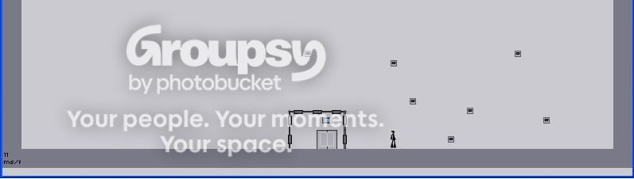
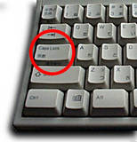
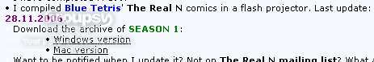
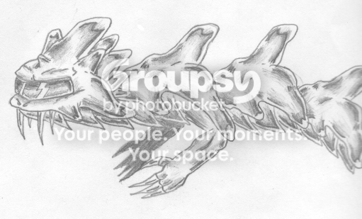
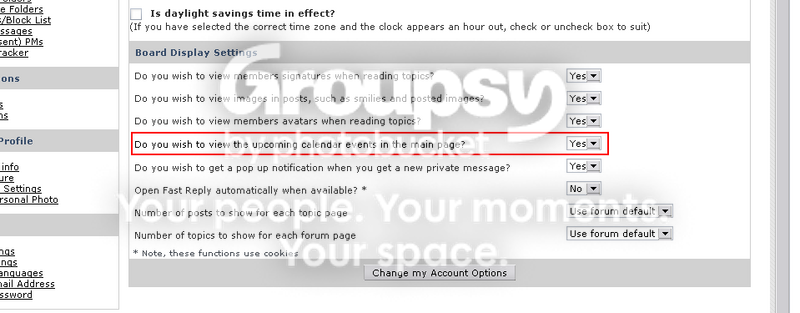
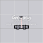
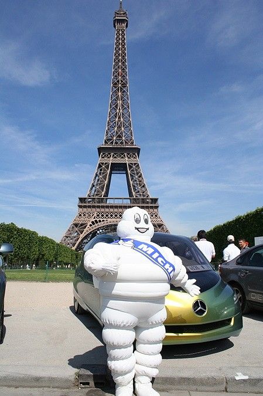
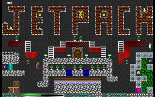

How about making editable springs (power: 1-70)? It's difficult to modify the code.
I resubmitted it to make it meet all criteria. But the original version was submitted 11th November, so it's not an old map.
These are my suggestions for the upcoming version of NEd (v.1.2). I hope that at least one of them could really make it to the NEd.
-Object copying/moving/filling/clearing
-A link to NUMA's "submit a map" -menu, which will automatically fill the "map data" -box for you with the data of the current level
-Auto-save your levels directly to your userlevels.txt! No copying + pasting anymore! You could also download levels and demos directly from NUMA and let your computer do the copying, pasting and saving.
-User-created episodes: While making levels, you may save them as custom episodes containing 2-10 levels. You may name the episodes as you like. You can still make single levels, though.
-Make NEd more conveniently accessible through the main menu
-Remove the need for Caps Lock to be able to play in debug mode
-A frame-by-frame debug mode when the Caps Lock is on
-Quick edit: A link from an user level or an unlocked Metanet level to NEd for editing
-Thumbnail preview image
-Objects placeable either under or on top of tiles
-All objects editable after placing
-Ability to add macros (in other words, save tiles and objects) to mouse buttons
-Tile rotation (90/180/270 degrees)
-The memory box: The previously used object/tile will be saved in a "memory box". This is a lot like the Windows Clipboard, but works only within NEd. Right-click to place the selected object from the memory box (or to place it randomly using the "randomize" -command, or to replace objects with it using the "replace" -command).
-"Replace" -command: After selecting an area, you can replace all objects or object X:s to memory box's object Y:s. For example, you have chosen an area containing Thwumps and mines. You have selected gold to the memory box. You can replace only Thwumps or only mines with the gold, or you can replace both of them with it.
-Displays 3 latest contests in a thumpnail
-NaN option to pake paralyzed enemies (this is an AI script)
-Drone path display (a red line)
-"Randomize" -command: You can randomly place an object/tile from the memory box or from a macro to somewhere in the level. If the object is a door, both door and switch will be placed to two separate places.
-New tiles (see next comment)
-Launchpad range display (a blue line)
-Tile flip/mirror (converts left-faced tiles to right-faced tiles, or up-faced to down-faced)
-Invert tiles (Converts full tiles to empty tiles and vice versa, in other words, creates a negative tileset)
-Zooming (2x/3x/4x): This will make it easier to use "No snap".
-Tiles placeable beyond the level borders
-Editable level borders
-Surfacefollow drones will no longer "bounce" when moving on a diagonal platform
-Reconfigurable NEd keys
-New gridline: 1/4 grid
-A larger font for the map data
-Having illegal values in the level data while loading the level will not result as "NaN".
-Editable launchpads (power: 1-70)
-No sound looping
-Automatically adds a "#" to the end of the level data
34 suggestions so far.
Green text means an essential improvement.
Orange text means an useful improvement.
Red text means a minor improvement.
Please comment and send your own suggestions!
-Object copying/moving/filling/clearing
-A link to NUMA's "submit a map" -menu, which will automatically fill the "map data" -box for you with the data of the current level
-Auto-save your levels directly to your userlevels.txt! No copying + pasting anymore! You could also download levels and demos directly from NUMA and let your computer do the copying, pasting and saving.
-User-created episodes: While making levels, you may save them as custom episodes containing 2-10 levels. You may name the episodes as you like. You can still make single levels, though.
-Make NEd more conveniently accessible through the main menu
-Remove the need for Caps Lock to be able to play in debug mode
-A frame-by-frame debug mode when the Caps Lock is on
-Quick edit: A link from an user level or an unlocked Metanet level to NEd for editing
-Thumbnail preview image
-Objects placeable either under or on top of tiles
-All objects editable after placing
-Ability to add macros (in other words, save tiles and objects) to mouse buttons
-Tile rotation (90/180/270 degrees)
-The memory box: The previously used object/tile will be saved in a "memory box". This is a lot like the Windows Clipboard, but works only within NEd. Right-click to place the selected object from the memory box (or to place it randomly using the "randomize" -command, or to replace objects with it using the "replace" -command).
-"Replace" -command: After selecting an area, you can replace all objects or object X:s to memory box's object Y:s. For example, you have chosen an area containing Thwumps and mines. You have selected gold to the memory box. You can replace only Thwumps or only mines with the gold, or you can replace both of them with it.
-Displays 3 latest contests in a thumpnail
-NaN option to pake paralyzed enemies (this is an AI script)
-Drone path display (a red line)
-"Randomize" -command: You can randomly place an object/tile from the memory box or from a macro to somewhere in the level. If the object is a door, both door and switch will be placed to two separate places.
-New tiles (see next comment)
-Launchpad range display (a blue line)
-Tile flip/mirror (converts left-faced tiles to right-faced tiles, or up-faced to down-faced)
-Invert tiles (Converts full tiles to empty tiles and vice versa, in other words, creates a negative tileset)
-Zooming (2x/3x/4x): This will make it easier to use "No snap".
-Tiles placeable beyond the level borders
-Editable level borders
-Surfacefollow drones will no longer "bounce" when moving on a diagonal platform
-Reconfigurable NEd keys
-New gridline: 1/4 grid
-A larger font for the map data
-Having illegal values in the level data while loading the level will not result as "NaN".
-Editable launchpads (power: 1-70)
-No sound looping
-Automatically adds a "#" to the end of the level data
34 suggestions so far.
Green text means an essential improvement.
Orange text means an useful improvement.
Red text means a minor improvement.
Please comment and send your own suggestions!
*VOTES FOR N*
Thank you Metanet! You gave me N, I give you the vote. Fair play, eh?
Thank you Metanet! You gave me N, I give you the vote. Fair play, eh?
And here you can see some examples of the new tiles.
(Edit: Circles and 1/4 tiles are impossible to code with the game's current system. If there will be a "Modern" mode in the new version of N, then it may be possible, but like it is now every block must have at least one solid edge that covers a whole tile. See Tutorial #2 for more info about how and why. Thanks to JeCa for pointing this out.)
(Edit: Circles and 1/4 tiles are impossible to code with the game's current system. If there will be a "Modern" mode in the new version of N, then it may be possible, but like it is now every block must have at least one solid edge that covers a whole tile. See Tutorial #2 for more info about how and why. Thanks to JeCa for pointing this out.)
Ah. Good to know.
Thanks.
Okay. Sorry, I'm a newbie...
 Excellent idea!
Excellent idea!A good idea. You could change them in the "configure" menu.
You are right. But I was thinking of a level full of 3x3 -rooms. Every room would contain an unconnected teleport. One room contains also a door and another one contains a switch to it. You'd have to be lucky enough to warp to the right rooms,
obtaining the switch and exiting the level. The level name could be "Roulette".
obtaining the switch and exiting the level. The level name could be "Roulette".
Or how about a DDA level that goes different ways depending on where the unconnected teleporter takes you?
I listen to YleX, the best radio channel in Finland.
the antenna one is a nice touch which may fit in well with the n theme. I am not so sure about the eye though.My thoughts as well. Plus, the antennae could flash to make the effect easier to note. But how about drones with moving eyes? They would always stare the player when they see him.
The flash effect could look something like this:
Okay, okay. I'll remove the teleport suggestion. And sorry for double posting. I've added new ideas again. Auto-saving IS possible? I don't know who to believe anymore. Thanks for using my ideas...
Edit: Auto-saving IS possible, if you're using a ".sol" -file.
Edit: Auto-saving IS possible, if you're using a ".sol" -file.
THANK YOU, MARE AND RAIGAN!!! *Bows* You are very likely the best freeware designers of the 21st century. N has already given me months of first-class entertainment, and I'm dying for your next game. N is a perfect launch for your extremely promising game-making career. Thanks again!! 
Very promising.
What for? Sorry, I'm not good at programming...
I've been getting conflicting info about this, from different tutorials and web sites. This poll is related to my suggestions for NEd v_1.2.
So the answer is no?
Thanks, that's a good point.
Yeah, but you can open .sol -files in Notepad or Wordpad.
Can I sign up for a judge? ") I would have participated, but I don't have any good DDA:s. In fact, I don't have ANY DDA:s...
I would have participated, but I don't have any good DDA:s. In fact, I don't have ANY DDA:s... 
I would have participated, but I don't have any good DDA:s. In fact, I don't have ANY DDA:s... Then maybe the you could add userlevels directly to N.exe? I mean that you don't have to exit N, open userlevels.txt, and copy the data there. Adding the userlevels.sol to be accessed from inside the program would make it easier to edit the ".sol" -file. You could download levels directly from NUMA to the N.exe. But at least we know that quicksaving is possible to code, so we'll just let Mare and Raigan handle it.
Yeah I know. That is irritating. Tell me: should I delete any of my maps? Please be honest! My Maps
I don't think it's possible. Even with a computer, you need 128 megabytes of RAM memory for the physics modeling. To be able to play N with a mobile, you would have to remove a lot of features, which would ruin the main idea of N. And the screen would simply be too small.
Yeah, I think Clifty still deserves to win. He's the best DDA maker in NUMA.
Everyone, ahoy! During this week, I'll be releasing a tile pattern gallery. There are over 100 different patterns, and more to come every day! Also, I've added more categories (Triangles, Shapes, Platforms, Rooms...) and a lot of other improvements! I just wanted you to know that I'm not loafing around...

I think it can. If you change any values in the "configure" -menu, they are saved inside the program. As far as I know. And note: the DATA itself will be in the userlevels.sol, the program just does the saving for you!
Excellent! You must have slaved for months to make this column!
I don't care if the level has a bad rating, if it's playable and fun. I never snipe or anti-snipe, I give honest ratings and comments. If I give a rating below 3 points, I also tell why and suggest how the level could be improved. 
Most of those ancient DOS games contained a boss mode. Office workers could enter the boss mode, quickly exiting to a fake DOS application, which makes you look like you're working. Pressing the key again returned to the game. It was designed just to point out you're not loafing around when the boss came in, and that's what the name implies. But it's rather useless nowadays. To answer the question: it just stops looping sounds. But that's pointed out already, so...
Yeah, no one will ever notice if there's a huge application in your desktop saying:

Minimizing the window would be more useful... (sorry for double posting)
This topic is here to give you inspiration for making N levels. Feel free to use them.
The patterns are divided to 7 different categories:
-Squares: patterns with four angles
-Spheres: all circles and circle-like patterns
-Platforms: something to step on
-Shapes: a platform which resembles something
-Triangles: patterns with three angles
-Logos: I don't think this needs any further explanation
-Rooms: rooms or tunnels
Please comment and send your own patterns!
No. - Category - Name
_____________________________________
001 - Squares - diamond_horizontal_large_
002 - Squares - diagonal_square_small_
003 - Squares - curved_square_
004 - Squares - diamond_vertical_large_
005 - Spheres - basic_sphere_
006 - Spheres - tear_drop_NW_
007 - Spheres - tear_drop_NE_
008 - Spheres - tear_drop_SE_
009 - Spheres - tear_drop_SW_
010 - Squares - diamond_horizontal_small_
011 - Squares - diamond_vertical_small_
012 - Spheres - hemisphere_up_
013 - Spheres - hemisphere_right_
014 - Spheres - hemisphere_down_
015 - Spheres - hemisphere_left_
016 - Shapes - small_arrow_left_
017 - Shapes - small_arrow_up_
018 - Shapes - small_arrow_right_
019 - Shapes - small_arrow_down_
020 - Squares - round_edge_square_small_hollow_
021 - Squares - round_edge_square_small_filled_
022 - Squares - basic_square_small_
023 - Squares - basic_square_medium_filled_
024 - Squares - basic_square_large_filled_
025 - Squares - basic_squre_medium_hollow_
026 - Squares - basic_square_large_hollow_
027 - Squares - diagonal_square_medium_hollow_
028 - Squares - diagonal_square_large_hollow_
029 - Squares - diagonal_square_medium_filled_
030 - Squares - diagonal_square_large_filled_
031 - Squares - round_edge_square_large_hollow_
032 - Squares - round_edge_square_large_filled_
033 - Shapes - fat_arrow_left_
034 - Shapes - fat_arrow_up_
035 - Shapes - fat_arrow_right_
036 - Logos - n_logo_small_
037 - Shapes - fat_arrow_down_
038 - Logos - n_logo_large_
039 - Shapes - thin_arrow_left_
040 - Shapes - thin_arrow_up_
041 - Shapes - thin_arrow_right_
042 - Shapes - thin_arrow_down_
043 - Logos - metanet_logo_small_
044 - Platforms - curved_loop_right_
045 - Logos - metanet_logo_large_
046 - Shapes - 3D_cube_
047 - Platforms - ramp_SE_
048 - Platforms - ramp_NE_
049 - Platforms - curved_loop_left_
050 - Platforms - whistle_a_down_
051 - Platforms - whistle_b_down_
052 - Platforms - whistle_a_right_
053 - Platforms - whistle_b_right_
054 - Platforms - ramp_SW_
055 - Platforms - ramp_NW_
056 - Triangles - wide_triangle_small_up_
057 - Platforms - curved_loop_up_
058 - Platforms - curved_loop_down_
059 - Triangles - thin_triangle_small_up_
060 - Platforms - whistle_a_up_
061 - Platforms - whistle_b_up_
062 - Platforms - hexagon_horizontal_
063 - Platforms - hexagon_vertical_
064 - Platforms - pinball_flipper_left_
065 - Platforms - pinball_flipper_right_
066 - Triangles - thin_triangle_medium_up_
067 - Triangles - thin_triangle_large_up_
068 - Platforms - whistle_a_left_
069 - Platforms - whistle_b_left_
070 - Triangles - sandwich_semi-hollow_NW_
071 - Triangles - sandwich_semi-hollow_NE_
072 - Triangles - wide_triangle_medium_up_
073 - Triangles - sandwich_semi-hollow_SW_
074 - Triangles - sandwich_semi-hollow_SE_
075 - Platforms - pepsodent_a_
076 - Platforms - pepsodent_b_
077 - Triangles - wide_triangle_small_right_
078 - Triangles - wide_triangle_small_down_
079 - Triangles - wide_triangle_small_left_
080 - Triangles - thin_triangle_small_right_
081 - Triangles - thin_triangle_small_down_
082 - Triangles - thin_triangle_small_left_
083 - Triangles - thin_triangle_medium_right_
084 - Triangles - thin_triangle_medium_down_
085 - Triangles - thin_triangle_medium_left_
086 - Triangles - sandwich_filled_SE_
087 - Shapes - spikes_
088 - Triangles - wide_triangle_medium_right_
089 - Triangles - wide_triangle_medium_down_
090 - Triangles - wide_triangle_medium_left_
091 - Triangles - thin_triangle_large_right_
092 - Triangles - thin_triangle_large_down_
093 - Triangles - thin_triangle_large_left_
094 - Triangles - sandwich_filled_NW_
095 - Triangles - ramp_medium_right_
096 - Triangles - sandwich_filled_NE_
097 - Triangles - sandwich_filled_SW_
098 - Platforms - basic_platform_
099 - Triangles - ramp_small_right_
100 - Rooms - cabin_left_
101 - Platforms - goggles_
102 - Triangles - ramp_large_right_
103 - Rooms - cavern_
104 - Rooms - tunnel_
105 - Platforms - shoe_NW_
106 - Platforms - shoe_NE_
107 - Platforms - crescent_down_
108 - Platforms - crescent_left_
109 - Platforms - crescent_right_
110 - Platforms - crescent_up_
111 - Platforms - crescent_SW_
112 - Rooms - cat's_paw_
113 - Platforms - crescent_SE_
114 - Platforms - crescent_NW_
115 - Platforms - crescent_NE_
116 - Rooms - pit_
117 - Shapes - flower_CW_
118 - Platforms - shoe_SE_
119 - Platforms - shoe_SW_
120 - Shapes - flower_CCW_
121 - Rooms - zigzag_
122 - Platforms - ramp_small_left_
123 - Platforms - ramp_medium_left_
124 - Platforms - ramp_large_left_
125 - Shapes - barcode_
126 - Shapes - starship_a_right_
127 - Shapes - starship_a_left_
128 - Shapes - starship_a_down_
129 - Shapes - starship_a_up_
130 - Shapes - starship_b_SW_
131 - Platforms - emerald_NW_
132 - Rooms - cabin_right_
133 - Shapes - lightning_a_
134 - Shapes - ufo_
135 - Shapes - lighting_b_
136 - Shapes - starship_b_SE_
137 - Shapes - starship_b_NW_
138 - Platforms - emerald_SW_
139 - Rooms - cell_
140 - Platforms - boomerang_down_
141 - Platforms - boomerang_up_
142 - Shapes - starship_b_NE_
143 - Platforms - blade_vertical_a_
144 - Platforms - blade_vertical_b_
145 - Platforms - claw_a_up_
146 - Platforms - claw_b_up_
147 - Rooms - heartbeat_
148 - Platforms - blade_horizontal_a_
149 - Platforms - blade_horizontal_b_
150 - Platforms - claw_a_down_
151 - Platforms - claw_b_down_
152 - Platforms - boomerang_left_
153 - Platforms - boomerang_right_
154 - Platforms - emerald_NE_
155 - Platforms - emerald_SE_
The patterns are divided to 7 different categories:
-Squares: patterns with four angles
-Spheres: all circles and circle-like patterns
-Platforms: something to step on
-Shapes: a platform which resembles something
-Triangles: patterns with three angles
-Logos: I don't think this needs any further explanation
-Rooms: rooms or tunnels
Please comment and send your own patterns!
No. - Category - Name
_____________________________________
001 - Squares - diamond_horizontal_large_
002 - Squares - diagonal_square_small_
003 - Squares - curved_square_
004 - Squares - diamond_vertical_large_
005 - Spheres - basic_sphere_
006 - Spheres - tear_drop_NW_
007 - Spheres - tear_drop_NE_
008 - Spheres - tear_drop_SE_
009 - Spheres - tear_drop_SW_
010 - Squares - diamond_horizontal_small_
011 - Squares - diamond_vertical_small_
012 - Spheres - hemisphere_up_
013 - Spheres - hemisphere_right_
014 - Spheres - hemisphere_down_
015 - Spheres - hemisphere_left_
016 - Shapes - small_arrow_left_
017 - Shapes - small_arrow_up_
018 - Shapes - small_arrow_right_
019 - Shapes - small_arrow_down_
020 - Squares - round_edge_square_small_hollow_
021 - Squares - round_edge_square_small_filled_
022 - Squares - basic_square_small_
023 - Squares - basic_square_medium_filled_
024 - Squares - basic_square_large_filled_
025 - Squares - basic_squre_medium_hollow_
026 - Squares - basic_square_large_hollow_
027 - Squares - diagonal_square_medium_hollow_
028 - Squares - diagonal_square_large_hollow_
029 - Squares - diagonal_square_medium_filled_
030 - Squares - diagonal_square_large_filled_
031 - Squares - round_edge_square_large_hollow_
032 - Squares - round_edge_square_large_filled_
033 - Shapes - fat_arrow_left_
034 - Shapes - fat_arrow_up_
035 - Shapes - fat_arrow_right_
036 - Logos - n_logo_small_
037 - Shapes - fat_arrow_down_
038 - Logos - n_logo_large_
039 - Shapes - thin_arrow_left_
040 - Shapes - thin_arrow_up_
041 - Shapes - thin_arrow_right_
042 - Shapes - thin_arrow_down_
043 - Logos - metanet_logo_small_
044 - Platforms - curved_loop_right_
045 - Logos - metanet_logo_large_
046 - Shapes - 3D_cube_
047 - Platforms - ramp_SE_
048 - Platforms - ramp_NE_
049 - Platforms - curved_loop_left_
050 - Platforms - whistle_a_down_
051 - Platforms - whistle_b_down_
052 - Platforms - whistle_a_right_
053 - Platforms - whistle_b_right_
054 - Platforms - ramp_SW_
055 - Platforms - ramp_NW_
056 - Triangles - wide_triangle_small_up_
057 - Platforms - curved_loop_up_
058 - Platforms - curved_loop_down_
059 - Triangles - thin_triangle_small_up_
060 - Platforms - whistle_a_up_
061 - Platforms - whistle_b_up_
062 - Platforms - hexagon_horizontal_
063 - Platforms - hexagon_vertical_
064 - Platforms - pinball_flipper_left_
065 - Platforms - pinball_flipper_right_
066 - Triangles - thin_triangle_medium_up_
067 - Triangles - thin_triangle_large_up_
068 - Platforms - whistle_a_left_
069 - Platforms - whistle_b_left_
070 - Triangles - sandwich_semi-hollow_NW_
071 - Triangles - sandwich_semi-hollow_NE_
072 - Triangles - wide_triangle_medium_up_
073 - Triangles - sandwich_semi-hollow_SW_
074 - Triangles - sandwich_semi-hollow_SE_
075 - Platforms - pepsodent_a_
076 - Platforms - pepsodent_b_
077 - Triangles - wide_triangle_small_right_
078 - Triangles - wide_triangle_small_down_
079 - Triangles - wide_triangle_small_left_
080 - Triangles - thin_triangle_small_right_
081 - Triangles - thin_triangle_small_down_
082 - Triangles - thin_triangle_small_left_
083 - Triangles - thin_triangle_medium_right_
084 - Triangles - thin_triangle_medium_down_
085 - Triangles - thin_triangle_medium_left_
086 - Triangles - sandwich_filled_SE_
087 - Shapes - spikes_
088 - Triangles - wide_triangle_medium_right_
089 - Triangles - wide_triangle_medium_down_
090 - Triangles - wide_triangle_medium_left_
091 - Triangles - thin_triangle_large_right_
092 - Triangles - thin_triangle_large_down_
093 - Triangles - thin_triangle_large_left_
094 - Triangles - sandwich_filled_NW_
095 - Triangles - ramp_medium_right_
096 - Triangles - sandwich_filled_NE_
097 - Triangles - sandwich_filled_SW_
098 - Platforms - basic_platform_
099 - Triangles - ramp_small_right_
100 - Rooms - cabin_left_
101 - Platforms - goggles_
102 - Triangles - ramp_large_right_
103 - Rooms - cavern_
104 - Rooms - tunnel_
105 - Platforms - shoe_NW_
106 - Platforms - shoe_NE_
107 - Platforms - crescent_down_
108 - Platforms - crescent_left_
109 - Platforms - crescent_right_
110 - Platforms - crescent_up_
111 - Platforms - crescent_SW_
112 - Rooms - cat's_paw_
113 - Platforms - crescent_SE_
114 - Platforms - crescent_NW_
115 - Platforms - crescent_NE_
116 - Rooms - pit_
117 - Shapes - flower_CW_
118 - Platforms - shoe_SE_
119 - Platforms - shoe_SW_
120 - Shapes - flower_CCW_
121 - Rooms - zigzag_
122 - Platforms - ramp_small_left_
123 - Platforms - ramp_medium_left_
124 - Platforms - ramp_large_left_
125 - Shapes - barcode_
126 - Shapes - starship_a_right_
127 - Shapes - starship_a_left_
128 - Shapes - starship_a_down_
129 - Shapes - starship_a_up_
130 - Shapes - starship_b_SW_
131 - Platforms - emerald_NW_
132 - Rooms - cabin_right_
133 - Shapes - lightning_a_
134 - Shapes - ufo_
135 - Shapes - lighting_b_
136 - Shapes - starship_b_SE_
137 - Shapes - starship_b_NW_
138 - Platforms - emerald_SW_
139 - Rooms - cell_
140 - Platforms - boomerang_down_
141 - Platforms - boomerang_up_
142 - Shapes - starship_b_NE_
143 - Platforms - blade_vertical_a_
144 - Platforms - blade_vertical_b_
145 - Platforms - claw_a_up_
146 - Platforms - claw_b_up_
147 - Rooms - heartbeat_
148 - Platforms - blade_horizontal_a_
149 - Platforms - blade_horizontal_b_
150 - Platforms - claw_a_down_
151 - Platforms - claw_b_down_
152 - Platforms - boomerang_left_
153 - Platforms - boomerang_right_
154 - Platforms - emerald_NE_
155 - Platforms - emerald_SE_
Criticism is also accepted. You're absolutely right. Some people get inspiration from pre-set terrains, and some get simply no satisfaction. I'm just trying to be helpful, but that seems to be harder than it sounds... 
Yeah, of course. Put a link to this forum. I'll submit more patterns today.
Edit: Here they are! Enjoy. The descriptions will be added tomorrow, it's nearly night here in Finland...
Edit: Here they are! Enjoy. The descriptions will be added tomorrow, it's nearly night here in Finland...
-A bowling pin needs to lean 7,5 degrees to fall.
-The bread _always_ falls the buttered side down.
-Some guy put one pound to eBay and got a million pound offer for it.
-The bread _always_ falls the buttered side down.
-Some guy put one pound to eBay and got a million pound offer for it.
3.5. I've got only two rated maps, though. But I think I deserve that rating (though I've been sniped a few times).
Edit: It's 4/5 now. Yay!
Edit: It's 4/5 now. Yay!
Thanks! By the way, today I just became an advanced member.
I made my first 3 maps without hurrying so you won't be bothered by n00b maps.
But some do send their first beta-like maps as soon they get the chance, which is annoying. But I'm not generalizing, it's just that SOME newbies point loudly out that "it's my first map" and "take it easy on me" and so on... I answered "maybe", because there are still some newcomers who can make their maps with care.
But some do send their first beta-like maps as soon they get the chance, which is annoying. But I'm not generalizing, it's just that SOME newbies point loudly out that "it's my first map" and "take it easy on me" and so on... I answered "maybe", because there are still some newcomers who can make their maps with care.
looks good. its a nice idea
...I don't really like the idea of preset tile-blocks...
It seems that there is no simple answer to this. Are the tilesets a good or a bad idea? I'll have to put up a poll for this.
This is a sub-poll of my topic "Tile patterns". Some people think that pre-set tilesets and tile combinations in NEd inspire them to make better levels, and some people think it would ruin all the innovativity. Some quotes:
So what's your opinion? Vote! The solution to this voting will affect my topic, so this is not just a nominal poll.
QuoteThey're all great and it would make N a better game for everyone.
Quote...I don't really like the idea of preset tile-blocks. It will just promote generic, unoriginal maps. It would thus waste programming time and make Ned's interface more complicated with no real benefit.
QuoteThe point of making tilesets isn't necessarily to creat patterns, it's to create something fun to jump and run around on that also looks beautiful or stylized in a particular way. If everyone uses the same patterns again and again instead of innovating, then tileset creating will just become boring.
Quotelooks good. its a nice idea
So what's your opinion? Vote! The solution to this voting will affect my topic, so this is not just a nominal poll.
Have you launched the N application in the .zip file before unzipping? That might have set the userlevels.txt in the .zip file as your primary userlevels -file. But if you have added levels to the one in the same folder with the unzipped files, this theory won't work. Er... Too confusing...? 
This topic hasn't been updated in 13 days... Maybe Mysterypower has forsaken us... 
Oops... The poll question was "are the tile patterns good or bad". The options were "yes!" or "no!"... "Yes" meant good and "no" meant bad... But it's too late now. How embarassing... ")
Greengooguy49, check your mail. I PM'd you yesterday.
I asked Kablizzy to move this forum to the "N Images" -gallery. I think that pre-set tile patterns is not a good suggestion to be used in NEd, but they can inspire people (especially newbies) to start creating a new map.
The main thing what I'm looking for in Robotology is the innovativity and the playablility typical to Metanet Software. I hope they won't just repeat the same ideas that N is based on (episodes, time limit etc.), but invent something that's actually NEW. I mean making as many ideas as possible out of scratch, creating something innovative and unbiased. Wasn't that just the main concept of Metanet Software?
I know M&R can't fail. I can 100%-ly say that Robotology WILL be at least as good as N. It WILL come up with the goods. I simply know it. We'll just let M&R handle the job, and of course register the game to thank them...
But when they release new versions of Robotology, do I have to register again? Hopefully not.
QuoteMetanet Software is devoted to creating fun, innovative, unique games.
I know M&R can't fail. I can 100%-ly say that Robotology WILL be at least as good as N. It WILL come up with the goods. I simply know it. We'll just let M&R handle the job, and of course register the game to thank them...
But when they release new versions of Robotology, do I have to register again? Hopefully not.
The Intergalactic Competition of Effects (I.C.E.)
Welcome to my never-before-seen effect contest! As the name implies, you'll have
to create a test level based on an effect (funny death, a glitch, etc.) and post it here.
Be sure that your level meets all criteria before posting it:
I - The level must be categorized as a "test level"
II - Max. 3 entries
III - Judges cannot rate their own maps, but are allowed to submit them
IV - The level must be submitted to NUMA and contain a link to this thread
V - Old maps are allowed
Two important dates:
- 15th December: The judging starts. Post your maps before this day.
- 17th December: The judging ends. The winners are announced.
I'm also accepting two other judges.
If you have any questions, please post them to this contest thread.
Judges:
- Me
- 29403
- [Open]
Scoring:
- Effect appearance, n/20
- Originality, n/15
Total: n/35
Prizes:
- 1st: A signature tag + 2 dedication levels (Select two playable categories)
- 2nd: A signature tag + a dedication level (Select a playable category)
- 3rd: A signature tag
- Plus, all three will be immortalized in a comic strip
Entries:
Max_Ride:
-Kappa Puzzles: Crossword
Lord_day:
-Lord_day's lottery!
-Column
-Magnetic Aura
rocket_thumped:
-Shell Shock
-Jungle Jam
Scythe33:
-Thwump Teleporter
Zugbop:
-A Final Warning to the Villagers of Twiddle-Tong
AMomentLikeThis:
-A Set of Unodealtered Glitches
-Really Cool Effect
TheAdster:
-Idiotbox
cyclone_on_mars:
-Funny Death
Total 12 entries.
Good luck for the contest!
Welcome to my never-before-seen effect contest! As the name implies, you'll have
to create a test level based on an effect (funny death, a glitch, etc.) and post it here.
Be sure that your level meets all criteria before posting it:
I - The level must be categorized as a "test level"
II - Max. 3 entries
III - Judges cannot rate their own maps, but are allowed to submit them
IV - The level must be submitted to NUMA and contain a link to this thread
V - Old maps are allowed
Two important dates:
- 15th December: The judging starts. Post your maps before this day.
- 17th December: The judging ends. The winners are announced.
I'm also accepting two other judges.
If you have any questions, please post them to this contest thread.
Judges:
- Me
- 29403
- [Open]
Scoring:
- Effect appearance, n/20
- Originality, n/15
Total: n/35
Prizes:
- 1st: A signature tag + 2 dedication levels (Select two playable categories)
- 2nd: A signature tag + a dedication level (Select a playable category)
- 3rd: A signature tag
- Plus, all three will be immortalized in a comic strip
Entries:
Max_Ride:
-Kappa Puzzles: Crossword
Lord_day:
-Lord_day's lottery!
-Column
-Magnetic Aura
rocket_thumped:
-Shell Shock
-Jungle Jam
Scythe33:
-Thwump Teleporter
Zugbop:
-A Final Warning to the Villagers of Twiddle-Tong
AMomentLikeThis:
-A Set of Unodealtered Glitches
-Really Cool Effect
TheAdster:
-Idiotbox
cyclone_on_mars:
-Funny Death
Total 12 entries.
Good luck for the contest!
Feel free to do that.
155th is between 124th and 134th. Sorry for the inconvenience..
I'm not sure will these ideas make it to the final N version. M&R have already nearly finished v_1.5 (according to the information I've been getting), and their plans are focusing to Robotology from now on.
Thanks! Hopefully we'll get a lot of entries.
Hopefully the launchpads can be edited inside NEd in it's next version.
Sorry, but no. You'll have to post another...
Could you suggest better criteria, please? I'll gladly change them if they're ridiculous.
Could you suggest better criteria, please? I'll gladly change them if they're ridiculous.
Zero, but hopefully I'll get one soon... 
Maybe they're making some adjustments in NUMA, someone has corrupted the level data or it's just a random bug. Try resubmitting the level... Too bad nonetheless.
The floorguards should move over half-tiles and round tiles, but not over any other tiles.
Seems like a nice idea. I'm in.
I used to play a Nethack-based game "ADOM", but I got bored of dying in the second mission.. 
I meant...
Homing launchers are too darn fast. You dodge one, two, three and the fourth kills you. Game over.
Clever, but a little too blurry. 9/10.
PSP 9.
Well, how much do you find that sort of tile configuration in a map anyway?
Well, of course that improvement would be rather nominal. But that type of code altering would also help solve the diagonal floor drone problem: Ever notice how the surfacefollow drones "bounce" when they are going on a diagonal floor? M&R have promised to fix this in v_1.5.
Great job man. How about posting them to the N home page (there's an image gallery, unless you didn't know) or making a comic strip out of these like Kirby suggested?
I'll ask Greengooguy49.
...drones which can only move in 90deg increments; we had originally intended the surface-following drones to move smoothly across the actual surface of the world.. we just couldn't get that feature working in time. Now, we can; additionally this will make it easy to do other surface-related things, for instance to allow floorchasers to move along any surface (not just horizontal surfaces)...
...
Granted, but those potato chips belonged to Arnold Swartchenegger, who kills you for stealing his chips.
I wish that one of my maps would get bitesized (grant this)!
I wish that one of my maps would get bitesized (grant this)!
I found this picture from Mare's portfolio. Does this represent the main character of Robotology?
Lord_day did this once. I think you have to ask him if you can run an N-Limination 2.
http://metanet.2.forumer.com/index.php?showtopic=10593
Yeah, I know what he meant, I just warned him from trying to change the name himself, without informing anyone. Just PM any admin and get ready to be reborn. 
Wow, it's great! I got all gold 10 minutes after loading... 
Maybe a little too easy, but still, excellent job! More levels, please...
Maybe a little too easy, but still, excellent job! More levels, please...
My modem downloads normally at 1 Mb/sec. Sometimes it says that it's downloading files at a massive speed of 100 Mb/sec. That must be a syntax error of some kind.
And what's with this "insomnicon" banner at the top of the forums?
It's a competition where you have to stay awake as long as possible. Check out the InsomNicon topic for more details.
Granted, but it's short for "Genocide to Irritating Message Posters". You die.
I wish for unlimited wishes.
I wish for unlimited wishes.
hey tsukatu ... can u giv me the logic behind this
I can. Apparently the ninja enjoys listening to music.
Or maybe Media Player uses partially the same data than Flash Player.
You propably know that if the CD you're playing is scratched, Media Player still knows how to play it right. It "foresees" the upcoming beat and thus skips the corrupted part. Maybe the Flash Player gets to use that skipping command too when the Media Player first activates that file which knows how to skip corrupted data.
After all, they're both "Players", so perhaps they work in the same principle.
To answer the topic question...
Try entering and exiting the boss mode. That works fine for me.
*Tries to stuff his fist into his mouth*
*Success*
*The fist gets stuck*
*Tries to remove the fist with his foot*
*Success*
*The fist gets stuck*
*Tries to remove the fist with his foot*
Done! And it's faster than I excpected.
But it might not be fast enough...
But it might not be fast enough...
*Telepatically congratulates Ngi... Lt.Phist for succesful respawning*
*Listens to the noisy Finnish black metal band Children of Bodom... but with headphones plugged off*
*Listens to the noisy Finnish black metal band Children of Bodom... but with headphones plugged off*
Granted, but it's a Japanese bull tongue ice cream (That actually _does_ exist!)
and you throw that ice cream away.
I wish I could grab that ice cream before it hits the ground and eat it.
and you throw that ice cream away.
I wish I could grab that ice cream before it hits the ground and eat it.
Am I allowed to post several demos for one map?
Also, checking out the "high score" -demos helps for me.
Sorry. I only read the main post and didn't notice...
QuotePorrasturvat is one of the very first games to use ragdoll physics in gameplay. The game was originally written just to contribute in the game development competition of a demoscene event called "Assembly", released a few days before the event was about to start, so that people would have some time to test the competition entries before voting. By the time when the event started, the game had already found its way to tens of thousands of gamers in just a few days, and the word about the game and how fun it is kept quickly spreading around different forums. The game won the first place in the competition.
Porrasturvat is also known as "Stair Dismount".
Download Porrasturvat
QuoteTruck Dismount is the successor to the Porrasturvat. After half a year it has already received over half a million downloads from the game home page, and it has also been included in numerous magazines' cover CDs and other websites for download. Like Porrasturvat, this game was again made for a game development competition at the "Assembly" -event next year, and Truck Dismount won the competition.
Truck Dismount is also known as "Rekkaturvat".
Download Truck Dismount
All quotes from Jetro Lauha's website.
Screenshots:
I agree. They're not very playable anymore. They were made just to show off the ragdoll phsycics. They are also several years old, so the graphics look quite... plastic.
In this forum, your mission is to create stories. After every 3 days, I tell you the theme and start the story. The next person continues that story. Simple, eh?
For example:
X-treme_ninja:
"There was a frog who lived in a lake."
SoadFan95:
"The frog had a friend. Friend's name was Bean."
Forbidden:
-Ending the story without my permission
-Using the same sentence twice
-Posting inappropriate messages
Theme #1:
My life inside the computer.
There was a man named Ethan. He was playing his favourite game, also known as "N", when suddenly he got sucked up inside the computer.
For example:
X-treme_ninja:
"There was a frog who lived in a lake."
SoadFan95:
"The frog had a friend. Friend's name was Bean."
Forbidden:
-Ending the story without my permission
-Using the same sentence twice
-Posting inappropriate messages
Theme #1:
My life inside the computer.
There was a man named Ethan. He was playing his favourite game, also known as "N", when suddenly he got sucked up inside the computer.
Granted, but then everyone wants a siggy from you and your arm breaks.
I wish that this message would hypnotize everyone who are reading it.
I wish that this message would hypnotize everyone who are reading it.
Arhem...Quote: TheAdsterThe End.
Forbidden:Great. 2 hours and someone breaks the rules!
-Ending the story without my permission
Ignore the previous comment.
N was also mentioned in the Finnish game magazine, "Pelit", some time ago.
Well, the most necessary upgrade would be adding tiles, I like to think.
Edit: Yes!!! 100th post!
Edit: Yes!!! 100th post!
I have an idea. At least Keron greatly enjoyed that damage-a-ragdoll-thing, so should we have some kind of "kill the ninja" -minigame in N? It would have separate high scores in the Internet. It would work a little bit like Rekkaturvat: place the ninja somewhere, decide the launching direction and -power and launch!! You could have 1000 credits to "buy" objects to the level and several landscapes to play in! Does that sound good? You would score by the time you are still moving, and by the damage you've gained!
By the way, what IS the logic behind that "top rated" -list? I mean, why does my "Graffiti" -N art map change its position daily? I don't get it...
Good idea, but everyone can add the difficulty to their description if they want, so it's not very necessary. But what about N Arts or DDAs?
Isn't it against the rules to publish someone's maps without asking? Well, it's kinda good idea, though, but we seriously should ask a permission before doing it.
Yeah, a help section FAQ for beginners. It lists all most common problems and mistakes of level editing. A good idea
Some maps may seem to have the same rating, but there are little decimal points that you can't see that make the rating different.
Okay, thanks. That helped a lot.
To get back on topic: The idea is good in theory, but all kinds of n00bs, trolls, flamers, snipers etc. would turn the Hall of Fame a warzone.
So it's going to get implemented? Well, I guess it isn't a bad idea after all. At least it would help finding suitable maps for you. How about a rating scale that's something like this:
-Novice: Very easy level. One or less enemies and no hard jumping parts. 1 or less deaths is required to complete this, and it can be passed within a minute.
-Easy: For beginners. Shouldn't take too long to finish. May contain enemies and maybe some basic jumps.
-Moderate: Medium skill level. Some enemies and quite average jumping parts.
-Difficult: A hard one. Contains much enemies and/or hard jumps.
-Extreme: Uh-oh! Prepare to be obliterated! A lot of enemies and/or very hard jumps to perform. An extreme level will take a lot of time and retries to pass.
-Unknown: The rating for Incomplete/DDA/N Art/Test levels.
-Novice: Very easy level. One or less enemies and no hard jumping parts. 1 or less deaths is required to complete this, and it can be passed within a minute.
-Easy: For beginners. Shouldn't take too long to finish. May contain enemies and maybe some basic jumps.
-Moderate: Medium skill level. Some enemies and quite average jumping parts.
-Difficult: A hard one. Contains much enemies and/or hard jumps.
-Extreme: Uh-oh! Prepare to be obliterated! A lot of enemies and/or very hard jumps to perform. An extreme level will take a lot of time and retries to pass.
-Unknown: The rating for Incomplete/DDA/N Art/Test levels.
Those are much better than mine. And more easier to understand by the first look.
It's better to have a small number of bold groupings than many intricate unique ratings. Too many difficulty ratings would make the system confusing and ineffective for deliniating groups. "Hmm, I wonder if I should rate this map moderate or halfway between easy and moderate?" or "I wonder if I should browse easy maps or kinda easy maps."
I agree. Four is definetely enough, I see no need for more skill levels.
It's a murder because the victim dies... If the men are two separate persons, the clone has its own will and doesn't want to be murdered.
If the men are two separate persons, the clone has its own will and doesn't want to be murdered.No, because he is a clone...??? A clone is still a living entity. If the question would be "is destroying a robot a murder", I would say no, but because we are talking about a living person, of course it's a murder in this case.
It's not a suicide either; identical twins are originally born from the same cell, and they can't suicide themselves by killing the other twin. A clone is actually a artificially created twin born after birth (whatever that means), so he doesn't die himself by killing his clone (what a surpriseQuoteTechnically, it's suicide.
). Even technically, it's not a suicide. Create a new text file. Copy that file and delete the copy. The original file still remains the same.I like this idea. You should be able to toggle between the ninja rating or the exact rating.
Hundreths.
Plus, how far would it round to?
Hundreths.
They have begun on v1.5, and have done some small work (They already have <CENSORED> finished. =O), but aren't really concentrating on it until Robotology is done.
Oh, thanks.
Hmm... well, most of my suggestions were in the first post... how about still drones? You know, where you have to put an NaN at the end of a drone code to make it stay still.
Aren't they in the suggestion list already?
-NaN option to pake paralyzed enemies (this is an AI script)
What is different about the clone that makes him not human?That's the point. Why is murdering a clone somehow "less murder" than murdering a "real" person? Well, in real life, I don't support cloning technology. It would cause in these kinds of moral dilemmas. If you could clone people unlimitedly, would one person become less valuable? If there are 13 of you, are you unique anymore? How to distinguish a clone from a born person? And what about social security? What's the main idea of cloning anyway? Are the clones just spare parts for born people (if your liver, heart, brains etc. stop working, will you get another from a clone)?
Diamonds are more valuable than gold pieces. Maybe we should have both?
Diamond adds 4 seconds to your lifespan, and a cursed diamond decreases t by 2.
Gold pieces would work normally.
Diamond adds 4 seconds to your lifespan, and a cursed diamond decreases t by 2.
Gold pieces would work normally.
<EDITED>
I'd like an "APG" -graffiti siggy.
I'd like an "APG" -graffiti siggy.
You can't change thread titles after you name them...
Um... actually you can. Press "Edit" on the starting comment and look at the upper
part of the screen.
In Truck Dismount, I've also managed to launch the poor guy across the wall, which seems to be pretty painful...
Excellent job! I like 5th the most. It's the most realistic, thanks to the light's position.
...the next version should be out in a few days.
I just can't wait for it!
NUMA on the other side, is also feeling the effects of no lively forum. Less contest maps, less really cool maps (one's done by AMLT and RT for example) and far more n00b/newb maps with Z-snapping and loads of gold, marked up the hardest map evar' flooding the main page. Plus there is the danger of getting sniped a few times.
I agree. There are also way too much levels created with an automatic mapmaking generator. Don't people know how to make levels anymore? The only good map I've seen lately is Clifty's Firecracker.
Second entry: http://numa.notdot.net/map/69898Man, that's one hot entry!
Yeah. Game over.
The media tacked the term "cloning" on the process in its early stages of development to make it sound more sci-fi menacing.
Done! And it's faster than I excpected.
1st) Hendor: 1259 framesYou guys are way too good.
2nd) mc_george: 1290 frames
3rd) deCest: 1473 frames
4th) apg: 1970 frames
I can't stand a chance! Hmm... Perhaps I'm just better in Race and Survival levels. I'll just have to keep trying harder!I feel like I'm not dong anything significant here, guys.I dont agree. You are active and polite in the forums. You are someone to count on. And you can't be a meaningless guy with over 1600 posts. You are one of the best speakers here. Keep doing this, you'll leave a hole in the forums if you leave... No one wants you to leave.
Ha! You lose, therefore I win!
I wish I knew the password. When are they going to reveal it? Vestige559
Okay, I don't mind. But if you get the chance, listen to them.
Do you think that you could make my sigg into a sigg tag that says first person to find an odd edit?And make me one saying third?
And me 2nd.
I revealed it last night, in fact. Just not here.
Yeah, I noticed. The previous message was sarcastic... Look closely to it...
I can't get to NUMA. Does that have something to do with this implemention?
Nope, NUMA's down. It happens once every while.I see. Guess I'll just have to wait.
Good idea. You should also be able to add a description of yourself.
...And he saved him. The end.
Theme #2:
The Outer Space
There is a catch...
You are not allowed to use the letter "i". Go!
Theme #2:
The Outer Space
There is a catch...
You are not allowed to use the letter "i". Go!
Total: 12,734.
Ha! I posted the longest palindrome in my comment, therefore I win!
Actually, enemy sprites could be used more as "map tags". You know how in SMB, when you're about to play a stage, it displays a row of enemies that will be featured in that stage? It would be just like that. In fact, the NUMA system itself could catalogue the enemies that will be in the level and display them. I suppose if there are more than four different types, it could just say "various"--otherwise it would show the images and the number of each, perhaps.That's the spirit. We're gonna improve NUMA to the next level with all these suggestions!
This is a very interesting competition. I'm glad I joined -- and got to the second round.
If you let the mods view which users voted what for each map, we could put an end to sniping as we know it...
[/SNIPING] Marvellous idea. NUMA will be free of snipers again!
Except for the last episode in a column. That will be beaten and a new flavour unlocked after winning the level 3.
Man, this is one cool fan program! Listen, I'm designing a font that is made completely out of ninjas. Can I use the N Poser to help me? That would make the job twice as easy. I'll surely credit you.
The difficulty ratings might be abused, but at least 95% of the people in NUMA will use them without doing so. And if someone puts (accidentally or on purpose) a wrong rating to his level, just point it out in a comment.
A good idea nonetheless, though I doubted it at first.
A good idea nonetheless, though I doubted it at first.
With all these suggestions, I'm sure M&R will come up with something to make quick saving possible.
Thanks for your comments, everyone.
Thanks for your comments, everyone.
Yes, of course. Otherwise, pointing it out wouldn't be useful at all.The difficulty ratings might be abused, but at least 95% of the people in NUMA will use them without doing so. And if someone puts (accidentally or on purpose) a wrong rating to his level, just point it out in a comment.The player should at least be able to edit it, like he can with the description, name, and type of map.
A good idea nonetheless, though I doubted it at first.
But I also agree with Lord_day. Two different ratings would only mess things up.
For me, practising and testing was the best way to learn playing. I read the readme and found out some things I had missed. Yes, this implemention might be helpful to some, and the help menu could be a little more versatile, but I still agree with Maniac.
Hooray! 495,8 points in Bandit!
Voted. It was a pretty hard voting, because there were so many high-level performances. But after long pondering, I've made my desicion.
18.
These would be cool.
Nuke Drone:
-Has the radioactive label as its colouring.
-It can self-destruct itself, causing all nearby objects, creatures, and walls to be blasted. Then it will regenerate and continue its path of destruction.
-During countdown, the drone beeps and its eye blinks, and it becomes paralyzed.
Magna Drone:
-Shaped and coloured as a magnet. Its eye floats between the two "legs".
-Absorbs every object and creature near it (like in Katamari!)
-Moves slowly.
Nuke Drone:
-Has the radioactive label as its colouring.
-It can self-destruct itself, causing all nearby objects, creatures, and walls to be blasted. Then it will regenerate and continue its path of destruction.
-During countdown, the drone beeps and its eye blinks, and it becomes paralyzed.
Magna Drone:
-Shaped and coloured as a magnet. Its eye floats between the two "legs".
-Absorbs every object and creature near it (like in Katamari!)
-Moves slowly.
I think you're trying to add too much weight to this idea. This idea is another choice for the author when submitting the map. Authors pick the name, category, description, and map data. Is it that absurd that they have another drop-down menu with a few selections on it? Why can we trust them not to pick "test level" when their map is a puzzle, but we can't trust them not to pick "easy" if a map is hard? It's ludicrous. These same arguments could have existed when categories were initially invented.
Stop complicating this.
That kind of comprises everything discussed here.I know. I just got many ideas concerning these drones and wanted to share them with you guys.
Tghis oist us oyre soam,
This post is pure spam.
This post is pure spam.
Nice idea. Sign me up.
apg_496@hotmail.com
apg_496@hotmail.com
Cool. I'm half done with the letters, and I need to find a good "image -> font" -converter program.
Suggestions, anyone?
Suggestions, anyone?
There should be a "Dronies" -banner with a link to this site. If there was a banner for InsomNicon, why not for this?
If there was a banner for InsomNicon, why not for this?Way to go, KA!
Why not that things cant hold in air without support?
 I think they've been implemented already.
I think they've been implemented already. You could add rope for hangingNo. That would ruin the parkour-style movement that made N popular.

There are Thwumps.Quoteand moving platforms
change most of ground to be breakable somehowN is designed to be a puzzle-like game, where you are supposed to find the best way to obtain the switch and exit. Destructable walls would turn the entire concept upside down.
Quote(and maybe benable too)
Sorry, I didn't quite understand. "Such stuff" will be implemented in version 1.5. Be patient.Quoteand such stuff?
Like, there's a plunger like structure with enemies underneath, we could block or destroy em by jumping and jumping on the plunger 'till it breaks!That would be rather useless.
And why not add some way to grab free objects?I don't see any need for that.
like we could move blocks to add weight somewhere.For Pete's sake, this is N, not Indiana Jones!
And why not pulleys too?Er... Bullies? We've got enough in NUMA already, thank you.
we could make some kind of puzzles with elevators'n stuff!Thwumps can already be used as elevators.
And also, please make largers level where it would scroll.Most people can't seem to make full-screen levels even now.
I agree with Twistkill. These ones were pretty un-ninjaish, but anyway, thanks for your suggestions! It's a good thing for newbies to be active in the forums.
There's just one thing I don't understand. The topic's title is ""Advanced" physics". What do these ideas have to do with physics?
Welcome to the forums!
It's good to see that you have lots of fresh ideas and not the same that everyone suggests in every second thread.
1. Good idea. But you can already create a closed door and a trap door on the same square, and that's pretty much the same, if you put an unavoidable trap door switch somewhere in the level.
2. Pretty good idea, but needs some development first.
3. Perfect idea. You should also be able to review a thumpnail of the level you are creating in the editor. Why hasn't this been implemented already?
4. Great idea. They would be fun. I can already see them in my mind: They could be slower than homing rockets and different coloured than the basic mines.
It's good to see that you have lots of fresh ideas and not the same that everyone suggests in every second thread.
1. Good idea. But you can already create a closed door and a trap door on the same square, and that's pretty much the same, if you put an unavoidable trap door switch somewhere in the level.
2. Pretty good idea, but needs some development first.
3. Perfect idea. You should also be able to review a thumpnail of the level you are creating in the editor. Why hasn't this been implemented already?
4. Great idea. They would be fun. I can already see them in my mind: They could be slower than homing rockets and different coloured than the basic mines.
Good for newbies, but rather useless for experienced users.
Good for a first map. Newbies usually make very simple, not playtested, unfinished and impossible/novice -skilled maps. 4.5/5. Welcome to N!
Welcome to N!
Excellent!
Hotmail did that, too. And it's definetely not spam.
Yahoo Mail sucks, it put the Sunday N in the spam bin, so I had to take it out
Hotmail did that, too. And it's definetely not spam.
How about wings? The more speed you have, the further and higher you fly.
Or a parashoot? You can only use it once, and then it will just hang around for the rest of the level.
A ninja rope? The ninja could use it to reach higher floors.
What about katanas? Rather than killing enemies, you can grab or destroy walls with them.
Perhaps a propellor? Not very ninjaish, but...
Yeah, I know, these ideas suck and are hard to code, but I posted them just to inspire you.
Or a parashoot? You can only use it once, and then it will just hang around for the rest of the level.
A ninja rope? The ninja could use it to reach higher floors.
What about katanas? Rather than killing enemies, you can grab or destroy walls with them.
Perhaps a propellor? Not very ninjaish, but...
Yeah, I know, these ideas suck and are hard to code, but I posted them just to inspire you.
That happens to me sometimes, if I've just got enough speed when falling to one of those.
Looks nice and was finished pretty fast. But he might have used a tablet.
I agree. I noticed that too.
Actually, now I'm interested in what he did exactly at 3:33 or 3:34; he was able to instantly tweak many of the colors at once through the custom-colors panel, but that's supposedly impossible in Paint. How did he do that?
I agree. I noticed that too.
In debug mode, you can
-Kill the ninja or make him rebirth on the cursor with Enter
-Blow the ninja into pieces with Spacebar (and move all pieces with the drag command)
Oh, you propably didn't notice that the editor manual file lists them all out.
-Kill the ninja or make him rebirth on the cursor with Enter
-Blow the ninja into pieces with Spacebar (and move all pieces with the drag command)
Oh, you propably didn't notice that the editor manual file lists them all out.
You sure have a good imagination. Keep posting these suggestions, and eventually they will be implemented, if you make really good ones.
Welcome to the forums!
Keep posting these suggestions, and eventually they will be implemented, if you make really good ones.Welcome to the forums!
Good levels, LD! But if there won't be enough contestants and judges, the contest will be dead.
What made you do this?
I was in the editor, and couldn't get inspiration to level creating anywhere. I thought that propably also many other people may have problems with inspiration, so I started to list the most basic triangles, squares etc. to a sheet of paper. Then I came up with more advanced patterns, too, and when I had 100 of them, I remade them with my computer. I noticed that they turned out pretty good and posted them here. I'm glad you like them!
Hemps.
Ha! I haven't even participated, therefore I win!
is there still time to submit a demo?
Yes.Quote: Topic titleElimination, Less than 20 HOURS before elimination!
Great job... again! Extra applause for the group object moving.
Quote: Topic titleElimination, Less than 10 Minutes before elimination!
I want to download the programm the game was made of!!!!
NEd is not the program N was created with. It's for making custom levels.
Hopefully we'll at least get screensmore than warms or a trailer or something like that before Robotology is actually released.
Dave has a good point. I am very unfamiliar with shareware, is it a monthly payment or just a one time installment?
The registering cost is propably around $20. At least that could be arranged as a one time installment (which they usually are).
-Go to the user levels.
-Copy the map data to the white box (it's in the left side).
-Then, copy the demo data after it.
I'll do the data formatting for you.
So copy the previous code to this white box and press "watch replay":
-Copy the map data to the white box (it's in the left side).
-Then, copy the demo data after it.
I'll do the data formatting for you.
$Mount Doom#maximo#Uncategorized#100011MI0000000000000001110MI00000000000000000FJ10000000000000000000000F00000000000000000003000000000000000000000310000000000000000000GKMI0000000000000000003MI000000000000000000GK50000000000000000000311H000000000000000000311MI0000000000000000031MI00GH00000000000000015000NMM0000000000000031LH00NLH000000000000GK11MI00NMMI0000000000311MI0000000000000000GK1MI0000000000000000GK1MI00000000000000000?1MI0000000NLH000000000CE000000000N11MI000000000000000000NMM0000000000000000000000000000000000000NLH000000000000000BD000N11MI0000000000000>1LH0NMM0000000000000000FJ1LH0000000000NLL0000000FJ1LH00000000N11000000000211LH000000NMI0000000000211I00000000000000000000FJLH00000000000000000000011LH0000000000000000000211I000000|5^48,564!8^744,408,1!8^672,336,1!8^300,516,1!8^240,456,1!8^588,300,1!8^492,444,1!12^480,156!12^480,132!12^492,36!12^504,60!12^516,96!12^528,144!12^468,192!12^492,216!12^540,180!12^540,60!12^564,36!12^588,72!12^624,36!12^444,36!12^396,24!12^528,24!12^420,108!12^384,132!12^348,36!12^624,108!12^660,156!12^648,60!12^684,36!12^732,36!12^564,72!1^348,156!12^468,108!12^444,96!1^492,180!12^384,48!12^468,48!12^396,168!12^648,192!12^624,72!12^348,72!12^660,228!12^672,264!12^660,252!12^696,276!12^708,288!12^720,312!12^732,336!12^744,336!12^756,348!12^756,336!12^768,348!12^612,264!12^456,276!12^516,360!12^384,540!12^420,360!12^384,396!12^516,312!12^420,312!12^624,360!12^672,432!12^708,468!12^708,384!12^756,468!12^756,552!12^684,552!12^624,480!12^444,492!12^528,504!12^516,456!12^216,492!12^312,408!12^252,480!12^504,564!12^324,528!12^228,564!12^168,564!0^756,300!0^732,276!0^696,240!0^684,192!0^696,216!0^720,240!0^732,228!0^756,192!0^696,120!0^696,96!0^708,72!0^756,72!0^660,84!0^672,108!0^696,144!0^708,180!0^720,144!0^720,96!0^756,120!0^732,168!0^756,252!0^660,132!0^636,168!0^612,144!0^636,132!0^732,108!0^744,144!0^708,204!0^756,216!0^756,36!0^708,48!0^684,60!0^672,204!0^732,204!0^684,168!0^708,120!0^732,72!0^756,276!12^372,204!12^300,96!12^252,168!12^252,240!12^228,204!12^216,288!12^312,324!12^288,336!12^324,312!12^300,336!12^264,360!12^216,408!12^156,468!12^144,492!12^144,516!12^144,528!12^108,552!12^360,264!1^252,216!9^324,564,0,0,2,4,1,0,0!9^720,564,0,0,2,4,1,-1,0!9^468,384,1,0,1,3,1,0,0!9^324,456,1,0,1,2,1,0,0!9^636,504,1,1,3,5,0,0,-1!9^192,528,1,1,4,5,0,0,-1!9^492,264,0,1,5,5,0,-1,0!9^576,108,1,1,5,6,0,0,-1!9^456,564,1,1,6,6,0,0,-1!11^36,60,708,156!1^492,336!12^408,444!8^336,384,1!6^684,564,3,0,2,0!6^420,420,1,0,0,1!1^348,168!1^492,348!1^492,192!1^540,468!1^540,480#1943:0|17895424|17895697|89985297|89480465|89478485|89478485|89478485|97587541|89478485|89478485|89478485|22369621|89480465|89478485|89478485|89478485|131141905|107374182|107374182|35791462|35791394|35791394|35791394|35791394|16777762|17895697|89478493|72701269|107374180|17892454|17895697|35790865|107374306|107374182|107374182|35791398|17895970|273|17895424|17|17895696|35782673|34|17895697|17895697|17895697|17895697|51450129|35791394|35791394|34|17891328|89478493|17895701|17895697|17895697|17895697|17895697|0|0|0|0|17895424|17895697|17895697|17895697|35791409|2|0|0|0|35790848|35791394|35791394|34|35791360|35791394|35791394|35791394|17895730|89478609|107304277|89482854|35792725|35791394|35791394|139810|35790848|35791394|107405858|107374182|107374182|35808870|35791394|20128290|17895697|17895697|69905|0|16777216|97587473|89478485|89478485|17913173|35791395|0|16777762|219222289|89478485|89478485|89478485|17895697|17895697|17895697|35795217|139810|79691776|107374148|107374182|107374182|107374182|35791394|35791394|17896226|89478609|71652693|107373636|107374182|107374182|280166|17891328|17895697|89478493|89478485|89478485|17895701|97587473|89478485|17895701|17895697|33554433|35791394|107376162|107374182|36071014|2236962|17895697|35782929|2236962|35791392|139810|35791360|35791394|0|33554432|35791394|107374190|107374182|107374182|107374182|107374182|36071014|107374306|107374182|107374182|115483238|107374182|107374182|107374182|107374182|107405858|107374182|107374182|107374182|107374182|107405858|107374182|107374182|107374182|35791462|107880994|107374182|35792486|35791394|34|0|0|89480192|17896789|35791633|16777216|17895697|69905|16777216|17895697|17895697|89478609|107435349|107374182|35791394|139810|35791360|35791394|35791394|35791394|115483170|107374182|107374182|107374182|107374182|89484834|89478485|107374197|107374182|107374182|107374182|107374182|107374182|107374182|36071014|107376162|107374182|107374182|36071014|107374306|107374182|35791398|35791394|0|89505792|18175317|17895697|17895697|17895697|17895697|17895697|89480465|89478485|17895697|17895697|17895697|69905|17825792|1118481|0|17895680|35790848|2236962|17891328|35790865|35791394|19014178|97587473|89478485|89478485|17895697|17895697|17895697|0|0|0|17891328|17895697|89510161|89478485|89478485|17895697|17895697|17895697|17895697|0|17895680|17895697|17895697|17895697|89510161|23825
So copy the previous code to this white box and press "watch replay":
You've clearly worked with this project. Thanks for those updates. By the way, will Ned Reloaded contain a debug mode for level testing in the final version?The illegal 1.2 .swf version is, however (and unfortunately) available at some gaming sites. Some people already fell on it, thinking it's the legal version, for example, in: http://metanet.2.forumer.com/index.php?showtopic=11605. M&R are not responsible for any problems caused to your computer by those illegal versions. Try it at your own responsibility.
Eh... It wants me to register.
I believe that v_1.5 will be converted to the newest Flash versions.
But it won't propably affect the glitches, because they are the programming code's fault.
New Flash versions will only reduce lag.
But it won't propably affect the glitches, because they are the programming code's fault.
New Flash versions will only reduce lag.
Maybe they should have this picture in a Dronies banner.
1, 2 and 5 are the best. Great job!
The Ichor readme file is rather useless. I always win (or lose?) and get 5 points before I perish for some unknown reason. It's a good thing for games to be innovative, but this is too confusing. 
You could also set the graphics settings to "medium" in the Configure menu.
By the way, are you using Windows? Which version?
By the way, are you using Windows? Which version?
I play N every day, and use the editor few times a week.
...It took me 3 days to play the last 3 episodes...
And no saving?!? I have propably misunderstood something.
But to answer the question: this version of Flash can only save up to 100 kB of data at one time. One column adds estimately 120-130 kB (it also depends on the computer), which means that only 70% of that could be saved.
It works now? Well, maybe it was just a random bug. But hey, congratulations for beating all those levels!
Onturuqag. Cool.
Most levels are pretty easy to finish fast, but getting all gold makes it clearly harder. So this would make highscoring a lot easier.
When N starts to slow down, maybe you should try entering the boss mode (by pressing "Tab") and see what happens. It sometimes removes the problem.
Edit: Yay! 200th post!!
Edit: Yay! 200th post!!
I put a level on the user levels menu ...
I hope you didn't copy it to the white replay box there.
These should seriously be added to the default smileys.
I'd like to see angel and demon smileys.
I'd like to see angel and demon smileys.
what's with the censoring?Ssh! Beat six columns to find out...
What an excellent idea for a contest. I already started designing a map.
I already started designing a map.Here you go: my first entry, Deer Dance. Your objective is to trap all NAV drones into the "cells".
... if theoretically we were able to accelerate to a speed faster than the speed of light, we would be moving backwards in time.
If you drive with the headlights on, you still don't travel back in time.
*Checks the speedometer*even in that situation, you wouldnt be travelling at the speed of light: while you're moving forwards, the light coming from your headlights would be moving forwards faster, and more light is continuously being produced by your headlights, so although it may seem like you're travelling at the same speed as the light coming out of your car, you're nowhere near the speed of light... if theoretically we were able to accelerate to a speed faster than the speed of light, we would be moving backwards in time.If you drive with the headlights on, you still don't travel back in time.
*Doesn't show over 300,000 kps*
Sorry about the misunderstanding, I meant to talk about the headlights. If the car stands still and you turn the headlights on, the produced light moves with the speed of light. When you start moving, the light also start moving, no? So don't the lights then move faster than the speed of light?
The easiest way is to go to the "user levels" -menu and copy both map data and demo data to the white box on the left side of the screen. Map data first.
In E=MC, "E" means "energy". For more information, click here.
Pi came first. Einstein used pi in his research.
Pi came first. Einstein used pi in his research.
You're one great map maker. I'm dying to see the level pack. How long have you been making it for?
Is there a possible way of playing N without actually downloading it?
Click the big banner at the top of the page and download N 1.4.Er... Wasn't he supposed not to download it?
I'll also need two other judges.
Go to the "Configure" -menu to see the secrets you've unlocked.
By the way, you shouldn't let the secret out by giving those links...
Edit: Oh, LV already removed the links.
By the way, you shouldn't let the secret out by giving those links...
Edit: Oh, LV already removed the links.
The columns were completed on my brother's comp...
Well then, do you know how to transfer your current progress into another computer? If not, check out this thread.
Rated 4/5.
Only 1 person rated this: Deer Dance. It was bumped off the page soon after I submitted it.
It's the one I'm advertising in my sig (the right one).
Only 1 person rated this: Deer Dance. It was bumped off the page soon after I submitted it.
It's the one I'm advertising in my sig (the right one).
I've got some news...
Greengooguy sent me that PM. That means we'll have to withdraw from the contest. Let's just hope his sister is fine....QuoteI'm afraid to say that I won't be able to complete the contest with you, I know that this is going to sound far fetched but my sister has had a car accident so I am going to visit her. I'm afraid that I won't be back till Friday. I'm so incredibly sorry!
You two were likely the best possible people for NUMA admins. I want to congratulate you guys, and Arachnid for his incredible job with NUMA!
I'd like to see the difficulty ratings and map tags, plus maybe a new layout.
Also, you (Sweep & maestro) should be able to see what everyone has voted and modify/delete votes to prevent sniping. Of course, the "edit" and "quote" -buttons for comments are greatly needed. And how about a "bitesize this map" -button that automatically sends a bitesize account to S&M? Or a list that keeps track of how many times the level has been favorited and by whom? And is it been bitesized/accounted yet? Plus, a list of levels that need ratings (You could sort levels by "Newest", "Top rated" or "Unnoticed".)
Oh man, we could make a thread filled with suggestions for the new NUMA.
We're not committing to any particular changes yet, and we're not going to rush into things, but we really want to hear what you guys think.That's the spirit! Do make changes, but don't rush things.
I'd like to see the difficulty ratings and map tags, plus maybe a new layout.
Also, you (Sweep & maestro) should be able to see what everyone has voted and modify/delete votes to prevent sniping. Of course, the "edit" and "quote" -buttons for comments are greatly needed. And how about a "bitesize this map" -button that automatically sends a bitesize account to S&M? Or a list that keeps track of how many times the level has been favorited and by whom? And is it been bitesized/accounted yet? Plus, a list of levels that need ratings (You could sort levels by "Newest", "Top rated" or "Unnoticed".)
Oh man, we could make a thread filled with suggestions for the new NUMA.
About the "total map score" -implemention... Don't favorited or bitesized maps raise the score?
Excellent suggestions, anyway. I love all of them.
Excellent suggestions, anyway. I love all of them.
Those are my suggestions from "the New Age of NUMA" -thread. What do you think about them?QuoteI'd like to see the difficulty ratings and map tags, plus maybe a new layout. Also, you (Sweep & maestro) should be able to see what everyone has voted and modify/delete votes to prevent sniping. Of course, the "edit" and "quote" -buttons for comments are greatly needed. And how about a "bitesize this map" -button that automatically sends a bitesize account to S&M? Or a list that keeps track of how many times the level has been favorited and by whom? And is it been bitesized/accounted yet? Plus, a list of levels that need ratings (You could sort levels by "Newest", "Top rated" or "Unnoticed".)
My Nokia and a hanky. Plus some fluff.
When will this be added to NUMA's "news" -page?
Edit: Thanks.
Edit: Thanks.
It's the middle one (I guess).
How can you access the level code after saving it?
It will be saved to the clipboard.
You can use mine. Beware, though, its ugliness may scare people away...
There's one thing I didn't quite understand: so all 4 sides of it will be harmless if touched? So it looks like a block of stone? Could it dash to any of the four directions? If the answers are yes...
...I like it!
...I like it!
Thanks for those. Cool, now we have 7 entries. Someone wants to be a judge with me?
I'm not very good at mapmaking, but I'm proud of these:
Graffiti (N Art)
Deer Dance (Test Level)
Apogee (Tileset)
Can we change them if we make better maps?
Graffiti (N Art)
Deer Dance (Test Level)
Apogee (Tileset)
Can we change them if we make better maps?
Great idea.Thanks...
Here's my first entry:
A final warning to the villagers of Twiddle-Tong
But where's the effect?
These are effects:
Unzip by IrkedPlatypus
Goin' a Tower Looping 2 by Lorber
I played the map already. Sorry, but... That's still more like a puzzle than an effect.
I'd like to see your Going through Thwumps in the competition instead.
I'd like to see your Going through Thwumps in the competition instead.
I'd like to see your Going through Thwumps in the competition instead.You shouldn't suggest what maps people should enter. Especially in your own contest that you are judging.

Definetely a N Art, I can't imagine anyone actually playing this.
N00b. (Oh, sorry, I didn't mean you!)
4|_|_ `/0|_||2 |3453 4|23 |33|_0|\|6 70 |_|5!
4|_|_ `/0|_||2 |3453 4|23 |33|_0|\|6 70 |_|5!
Seriously, guys, we need more judges or this contest will be aborted.
I have that problem too, and it's pretty annoying. I don't think it's Sweep's or maestro's fault: NUMA completely crashed a few times before they became admins.
The high scores are down too. Does that have something to do with this?
Quote<CF>Good poing.
<CF>'pint
<CF>*pint
<CF>*point!
Okay, I removed the "level name & description" -criteria. It doesn't have anything to do with the effect, so...
If he's not, I still like the idea.I like this one the most. It's the easiest to distinguish from the other objects, and the directional arrow is pretty neat too.
I was actually thinking of the arrow idea myself. Didn't know if I was going to get slapped for it.
I'm sure we can all try and make an image, but I will give it a shot.
EDIT: I made two. One where it is still, and another where it is moving downward.


So what should we call this new Thwump? "Thwump2"? "Bump"?
Or my favourite, "Cubert"?
Will the new Thwump return to its original place after charging?
1) Red/orange.
2) Banging the walls of a cave carved inside the pyramid (no exit), trying to get out from there.
3) See bolded text in #2.
4) "apg", written with the Grand Stylus Font.
Thanks.
2) Banging the walls of a cave carved inside the pyramid (no exit), trying to get out from there.
3) See bolded text in #2.
4) "apg", written with the Grand Stylus Font.
Thanks.
Thanks, that looks cool! The N City is a great idea!
The N City is a great idea!I've had 4, but Brain Bender #3 fell out of there in a few hours. My "Perigee" -tileset, "Deer Dance" -test level and "Graffiti" -N Art are still hanging in the top rated -page. I'm glad to see you like my levels.
But seriously, I don't care about the ratings. Hopefully Sweep and maestro implement something more accurate to point out what you think about the level.
But seriously, I don't care about the ratings. Hopefully Sweep and maestro implement something more accurate to point out what you think about the level.
Yes, of course! Thanks.
Great pack, guys. 4.5/5. I have some questions:
1) Why are the first levels categorized as "Simplepack" instead of "Dreamspace"?
2) Where can I find "Face In A Night-Time Mirror" Part 1?
3) How did you select the creators of this pack?
3) How come there was only one pony?
1) Why are the first levels categorized as "Simplepack" instead of "Dreamspace"?
2) Where can I find "Face In A Night-Time Mirror" Part 1?
3) How did you select the creators of this pack?
3) How come there was only one pony?
Heh, George, don't worry, I was just going to submit my demo.
Edit: Done. But it's only 1663 frames...
Edit: Done. But it's only 1663 frames...
I actually thought it was like this when I was a complete n00b.
This is a good idea. Why not? Makes sense to me.
This is a good idea. Why not? Makes sense to me.
This would turn NUMA to a more elitistic community, not allowing all of its members participate.Besides... All maps don't achieve a public rating even now.
I think you should be able to post your map data into the "demo data" -box.
...I would just do this.

Or you can do one of these:
Hm... Thinking about starting a contest which is a global chess match. people would be the pieces and when the pieces were in conflict, there would be a face off of a randomly chosen map type. winner would take the square and then the next move would be done. sig tags for both sides supporting either black or white, and a victory sig tag for the winners.
What do you think of the basic concept?
That could be done in IRC, maybe in a chess channel.
"Bishop to A-5!"
1st) mc_george - 1296 frames
2nd) apg - 1663 frames
3rd) Mongy - 1717 frames
4th) cowgomoo ---:---
5th) deCest ELIMINATED!
Only deCest was eliminated? I thought cowmogoo would also be eliminated, because deCest's elimination had nothing to do with the competition.
Sounds very interesting. Of course I'll sign up!
I'm ID #11599 on NUMA, so I have a choice between knight and bishop.
I choose to be a knight.
Of course I'll sign up!I'm ID #11599 on NUMA, so I have a choice between knight and bishop.
I choose to be a knight.
I submitted a 98.975 KRA-demo. Not fast, but pretty stylish.
You have less than one day to submit your entries!
Also, one more judge would be nice.
By the way, I finished the winners' sig tags (the empty section is for names):
Also, one more judge would be nice.
By the way, I finished the winners' sig tags (the empty section is for names):
A project that will consist 200 Maps made by One Author only.
You, sir, are a maniac.
Seriously, good luck with the pack! I'm looking forward to see if you actually can pull it off (which I have no doubt of).
three
Flow is my subscription. It's not challenging, it's just fun to fly around all the curves.So... Where's the special effect?
Right, the deadline is only under seven hours away. Hurry up, if you still want to submit more entries!
We seriously need a banner which tells users not to post the basic questions, like this one, or "how do I download NEd", etc.
Like the one in the "Suggestions" -forum:
Like the one in the "Suggestions" -forum:
Do we need a banner in the "N Help" -forum which tells users not to post the basic questions, like "how do I play my levels", or "how do I download NEd", etc.?
Like the one in the "Suggestions" -forum ("3D, multiplayer, warfare, and ideas which add more keys to play will not be implemented, NO EXCEPTIONS. Please do not suggest them.")?
They would surely be helpful to newbies so they don't have to start new threads to solve these problems.
But on the other hand, propably no one actually reads the banners, which makes them unnecessary.
Like the one in the "Suggestions" -forum ("3D, multiplayer, warfare, and ideas which add more keys to play will not be implemented, NO EXCEPTIONS. Please do not suggest them.")?
They would surely be helpful to newbies so they don't have to start new threads to solve these problems. But on the other hand, propably no one actually reads the banners, which makes them unnecessary.About the banning thing...
The news in NUMA during Arachnid's reign showed different penalties: most of the people were banned, some disabled, and one was IP banned.
I guess only IP banning is permanent.
The news in NUMA during Arachnid's reign showed different penalties: most of the people were banned, some disabled, and one was IP banned.
I guess only IP banning is permanent.
...I've checked the FAQ's and done a bit of searching but no luck...I'm glad that there's at least one literate person around.
Is there a way of sending my highscores for a level to a friend, so he can watch the movie of me performing the level?No, I'm sorry but there isn't.
You can watch a quick replay, though, by pressing "R" after completing a level. The only way to show the completion to your friend is to invite him to your house. Or, use a separate game video record program (like FRAPS).But you can record demos in user-made levels.
Editor manual tells you how to do that, step-by-step.
Welcome to N!
Phantom
Appearance: A transparent white eye.
Name: Read the topic, man.
Description: Flies through walls to kill you with its Death Touch.
Weapon: Death Touch. Goodbye.
Mobile: Yes. Flies in large curves through all types of walls and objects and attacks.
Speed: The same as a charging NAV Drone.
Defence: Immortal (=goes through attacks), unless hits another phantom which is the only way to kill them. That gives another dimension to fightning: you just have to lure them to make them touch each other. A level with a pairless Phantom? Uh-oh.
Attack Strength: Instantly kills.
On Hit [for anything]: 0% chance knockdown
0% chance self-death
0% chance fire
Resistances: Everything excluding Death Touch.
100% physical resistance
100% electrical resistance
100% flash resistance
Sensor Mine
Appearance: A flashing robotic dark tube shooting two laser beams to left and right. Explodes when touched.
Name: *arhem*
Description: Doesn't like when its lasers are touched.
Weapon: "Rush": When one of its beams are touched, it charges upon the attacker.
Mobile: Immobile, excpect when charging.
Speed: Charges with a speed of modified launchpad (power: 10).
Defence: Low.
Attack Strength: Explosive.
On Hit [when charging]: Knocks down everything (except for Phantoms).
100% chance self-death (when charging)
40% chance fire
Resistances: Impervious to Flash.
5% physical resistance
20% electrical resistance
100% flash resistance
Appearance: A transparent white eye.
Name: Read the topic, man.
Description: Flies through walls to kill you with its Death Touch.
Weapon: Death Touch. Goodbye.
Mobile: Yes. Flies in large curves through all types of walls and objects and attacks.
Speed: The same as a charging NAV Drone.
Defence: Immortal (=goes through attacks), unless hits another phantom which is the only way to kill them. That gives another dimension to fightning: you just have to lure them to make them touch each other. A level with a pairless Phantom? Uh-oh.
Attack Strength: Instantly kills.
On Hit [for anything]: 0% chance knockdown
0% chance self-death
0% chance fire
Resistances: Everything excluding Death Touch.
100% physical resistance
100% electrical resistance
100% flash resistance
Sensor Mine
Appearance: A flashing robotic dark tube shooting two laser beams to left and right. Explodes when touched.
Name: *arhem*
Description: Doesn't like when its lasers are touched.
Weapon: "Rush": When one of its beams are touched, it charges upon the attacker.
Mobile: Immobile, excpect when charging.
Speed: Charges with a speed of modified launchpad (power: 10).
Defence: Low.
Attack Strength: Explosive.
On Hit [when charging]: Knocks down everything (except for Phantoms).
100% chance self-death (when charging)
40% chance fire
Resistances: Impervious to Flash.
5% physical resistance
20% electrical resistance
100% flash resistance
There's already a pinned topic in Level/Ned Help that contains stupid questions, and it's Mare who posted the thing.
I know, but apparently nobody ever reads it. Maybe the banner could contain a link to that topic?
We have reached the deadline, judging starts now!
No more entries!
No more entries!
The contest was extremely tight. Many entries got the same score, so I had to decide the best myself. The judging was very hard, so I put comments to the ratings to explain why I gave what I gave.
apg's scores:
1st. Shell Shock by rocket_thumped
Effect appearance: 19/20
Extremely fun to play, just maybe a bit too short.
Originality: 15/15
Done a few times before, but you never get bored with it.
Total: 34/35
A very well-made map messing with the features of debug mode.
2nd. Idiotbox by TheAdster
Effect appearance: 19/20
Invisible walls are great! The level is fun to play, too.
Originality: 14/15
Innovative use of invisible and phantom walls.
Total: 33/35
A fun collection of different door glitches.
3rd. Magnetic Aura by Lord_day
Effect appearance: 19/20
Instead of exiting the level, you must avoid the exits to get all gold. Brilliant.
Originality: 14/15
You don't see these every day.
Total: 33/35
An innovative and playable "don't exit" -map.
4th. Funny Death by cyclone_on_mars
Effect appearance: 19/20
Very fun to watch. I especially like the part where the ninja gets stuck to the wall from his hand.
Originality: 14/15
One of the most unique "funny death" -effects.
Total: 33/35
I wonder why there weren't more than only one of these?
5th. Column by Lord_day
Effect appearance: 19/20
Lord_day has taken a clear idea and redefined it to make this masterpiece.
Originality: 12/15
Floorguards going through walls is not new, but the puzzleness in the concept is.
Total: 31/35
Cool effect, fun to play. That's what this contest's all about!
6th. Jungle Jam by rocket_thumped
Effect appearance: 18/20
Maybe a bit too hard, but fun anyway. Sometimes you get stuck bouncing between two springs.
Originality: 13/15
The concept is based on Sweep's "Rocket Rocket Revolution", but it's not too similar.
Total: 31/35
A nice map taking advantage of teleporters.
7th. Lord_day's Lottery! by Lord_day
Effect appearance: 17/20
"Appearance" might be a wrong term, but the concept is great.
Originality: 14/15
Rather original map.
Total: 31/35
A well-made level with a clear concept.
8th. A Set of Uncodealtered Glitches by AMomentLikeThis
Effect appearance: 18/20
This is pretty much what I expected to see in this contest.
Originality: 12/15
Some were rather classic, but most of them are great observations.
Total: 30/35
A neat collection of glitches.
9th. A Final Warning to the Villagers of Twiddle-Tong by Zugbop
Effect appearance: 18/20
Standing on open doors is a fun glitch, but this level doesn't take full advantage of the concept.
Originality: 12/20
The door glitches are pretty used up, but nice idea anyway.
Total: 30/35
It plays well, but the effect is playing just a minor role in gameplay.
10th. Thwump Teleporter by scythe33
Effect appearance: 18/20
Getting between two Thwumps on purpose and popping out at Mach 3 is always fun.
Originality: 11/15
Done a dozen times before, but this one has a fresh touch in it.
Total: 29/35
Nice use of Thwump propulsion.
11th. Kappa Puzzles: Crossword! by max_ride
Effect appearance: 16/20
A nice collection of Thwump-related glitches.
Originality: 12/15
Some of these were seen before, but max_ride has also brought his own style to this map.
Total: 28/35
Thwumps rock! One of the unexcpected playable levels.
12th. Really Cool Effect by AMomentLikeThis
Effect appearance: 17/20
Heh, it looks like the uppermost Drones would eat the others.
Originality: 11/15
This is pretty obvious, I'm surprised this hasn't been pointed out before.
Total: 28/35
It makes me smile.
But the judging isn't over yet! We also need to see 29403's scores to get the final results.
apg's scores:
1st. Shell Shock by rocket_thumped
Effect appearance: 19/20
Extremely fun to play, just maybe a bit too short.
Originality: 15/15
Done a few times before, but you never get bored with it.
Total: 34/35
A very well-made map messing with the features of debug mode.
2nd. Idiotbox by TheAdster
Effect appearance: 19/20
Invisible walls are great! The level is fun to play, too.
Originality: 14/15
Innovative use of invisible and phantom walls.
Total: 33/35
A fun collection of different door glitches.
3rd. Magnetic Aura by Lord_day
Effect appearance: 19/20
Instead of exiting the level, you must avoid the exits to get all gold. Brilliant.
Originality: 14/15
You don't see these every day.
Total: 33/35
An innovative and playable "don't exit" -map.
4th. Funny Death by cyclone_on_mars
Effect appearance: 19/20
Very fun to watch. I especially like the part where the ninja gets stuck to the wall from his hand.
Originality: 14/15
One of the most unique "funny death" -effects.
Total: 33/35
I wonder why there weren't more than only one of these?
5th. Column by Lord_day
Effect appearance: 19/20
Lord_day has taken a clear idea and redefined it to make this masterpiece.
Originality: 12/15
Floorguards going through walls is not new, but the puzzleness in the concept is.
Total: 31/35
Cool effect, fun to play. That's what this contest's all about!
6th. Jungle Jam by rocket_thumped
Effect appearance: 18/20
Maybe a bit too hard, but fun anyway. Sometimes you get stuck bouncing between two springs.
Originality: 13/15
The concept is based on Sweep's "Rocket Rocket Revolution", but it's not too similar.
Total: 31/35
A nice map taking advantage of teleporters.
7th. Lord_day's Lottery! by Lord_day
Effect appearance: 17/20
"Appearance" might be a wrong term, but the concept is great.
Originality: 14/15
Rather original map.
Total: 31/35
A well-made level with a clear concept.
8th. A Set of Uncodealtered Glitches by AMomentLikeThis
Effect appearance: 18/20
This is pretty much what I expected to see in this contest.
Originality: 12/15
Some were rather classic, but most of them are great observations.
Total: 30/35
A neat collection of glitches.
9th. A Final Warning to the Villagers of Twiddle-Tong by Zugbop
Effect appearance: 18/20
Standing on open doors is a fun glitch, but this level doesn't take full advantage of the concept.
Originality: 12/20
The door glitches are pretty used up, but nice idea anyway.
Total: 30/35
It plays well, but the effect is playing just a minor role in gameplay.
10th. Thwump Teleporter by scythe33
Effect appearance: 18/20
Getting between two Thwumps on purpose and popping out at Mach 3 is always fun.
Originality: 11/15
Done a dozen times before, but this one has a fresh touch in it.
Total: 29/35
Nice use of Thwump propulsion.
11th. Kappa Puzzles: Crossword! by max_ride
Effect appearance: 16/20
A nice collection of Thwump-related glitches.
Originality: 12/15
Some of these were seen before, but max_ride has also brought his own style to this map.
Total: 28/35
Thwumps rock! One of the unexcpected playable levels.
12th. Really Cool Effect by AMomentLikeThis
Effect appearance: 17/20
Heh, it looks like the uppermost Drones would eat the others.
Originality: 11/15
This is pretty obvious, I'm surprised this hasn't been pointed out before.
Total: 28/35
It makes me smile.
But the judging isn't over yet! We also need to see 29403's scores to get the final results.
That happened to me, too. Just restart the computer.
Yes, but it could be some sort of boss enemy.
Yay, I got 24 points! You've got a nice contest here.
You've got a nice contest here.Judging has now ended!!
As mentioned before, this was a high-quality contest! If there were two scores, the main judge's (apg) vote was more valuable.
The final results are:
1st. Shell Shock by rocket_thumped
apg: 34/35
29403: 33/35
Overall: 67/70
2nd. Magnetic Aura by Lord_day
apg: 33/35
29403: 34/35
Overall: 67/70
3rd. Idiotbox by TheAdster
apg: 33/35
29403: 33/35
Overall: 66/70
4th. Funny Death by cyclone_on_mars
apg: 33/35
29403: 31/35
Overall: 64/70
5th. Lord_day's Lottery! by Lord_day
apg: 31/35
29403: 33/35
Overall: 64/70
6th. A Set of Uncodealtered Glitches by AMomentLikeThis
apg: 30/35
29403: 33/35
Overall: 63/70
7th. Jungle Jam by rocket_thumped
apg: 31/35
29403: 31/35
Overall: 62/70
8th. Column by Lord_day
apg: 31/35
29403: 30/35
Overall: 61/70
9th. A Final Warning to the Villagers of Twiddle-Tong by Zugbop
apg: 30/35
29403: 28/35
Overall: 58/70
10th. Really Cool Effect by AMomentLikeThis
apg: 28/35
29403: 30/35
Overall: 58/70
11th. Thwump Teleporter by scythe33
apg: 29/35
29403: 28/35
Overall: 57/70
12th. Kappa Puzzles: Crossword! by max_ride
apg: 28/35
29403: 28/35
Overall: 56/70
Rocket_thumped has won the contest!
He will get a sig tag + two dedication levels with a choice of two playable categories!
Lord_day came second!
He gets a sig tag + a dedication level with a choice of a playable category!
TheAdster finished third!
He gets a sig tag!
Also, Rocket_thumped, Lord_day and TheAdster will be immortalized in a comic strip!
All prizes will be delivered within three days.
Congratulations to the winners!
As mentioned before, this was a high-quality contest! If there were two scores, the main judge's (apg) vote was more valuable.
The final results are:
1st. Shell Shock by rocket_thumped
apg: 34/35
29403: 33/35
Overall: 67/70
2nd. Magnetic Aura by Lord_day
apg: 33/35
29403: 34/35
Overall: 67/70
3rd. Idiotbox by TheAdster
apg: 33/35
29403: 33/35
Overall: 66/70
4th. Funny Death by cyclone_on_mars
apg: 33/35
29403: 31/35
Overall: 64/70
5th. Lord_day's Lottery! by Lord_day
apg: 31/35
29403: 33/35
Overall: 64/70
6th. A Set of Uncodealtered Glitches by AMomentLikeThis
apg: 30/35
29403: 33/35
Overall: 63/70
7th. Jungle Jam by rocket_thumped
apg: 31/35
29403: 31/35
Overall: 62/70
8th. Column by Lord_day
apg: 31/35
29403: 30/35
Overall: 61/70
9th. A Final Warning to the Villagers of Twiddle-Tong by Zugbop
apg: 30/35
29403: 28/35
Overall: 58/70
10th. Really Cool Effect by AMomentLikeThis
apg: 28/35
29403: 30/35
Overall: 58/70
11th. Thwump Teleporter by scythe33
apg: 29/35
29403: 28/35
Overall: 57/70
12th. Kappa Puzzles: Crossword! by max_ride
apg: 28/35
29403: 28/35
Overall: 56/70
Rocket_thumped has won the contest!
He will get a sig tag + two dedication levels with a choice of two playable categories!
Lord_day came second!
He gets a sig tag + a dedication level with a choice of a playable category!
TheAdster finished third!
He gets a sig tag!
Also, Rocket_thumped, Lord_day and TheAdster will be immortalized in a comic strip!
All prizes will be delivered within three days.
Congratulations to the winners!
Here are the sigs!
rocket_thumped:
Lord_day:
TheAdster:
Congratulations! Keep checking the page for more prizes!
You guys are so cool!
rocket_thumped:
Lord_day:
TheAdster:
Congratulations! Keep checking the page for more prizes!
You guys are so cool!
6 of 12 = 50%. 
There's nothing actually wrong with the time bar, but I think a little improvement to graphics wouldn't hurt. I don't see why not?
I can't quite figure out how this idea would ruin the simplicity and amazingness of N. And backgrounds are definetely a bad idea.
Yeah, little boosts to menus and other "decorations" wouldn't hurt. But I say no when messing with the game graphics (=enemy/object appearance etc.).
We should do everything we can to spice N up.QuoteExcept anything that would ruin the simplicity and the amazingness of it. Like scenic backgrounds for instance.
I can't quite figure out how this idea would ruin the simplicity and amazingness of N. And backgrounds are definetely a bad idea.
I agree that gameplay would have to stay the same, it's more like the menus and things like that that would be good to change.
Yeah, little boosts to menus and other "decorations" wouldn't hurt. But I say no when messing with the game graphics (=enemy/object appearance etc.).
You can already create locked topics in the forums, so why not expand the idea to NUMA?This would be really useful when submitting incomplete and contest maps.
QuoteYouQuotecanQuotealsoQuoteaddQuotemultipleQuotequotesQuoteinsideQuoteeachQuoteother.
This contest rules! Extra thanks for the round 4 map, which is very suitable for this type of competition.
I have a feeling that we will have extremely tough competition this round.
Extra thanks for the round 4 map, which is very suitable for this type of competition.I have a feeling that we will have extremely tough competition this round.
6 columns, but I'm working to get more.
There should be some kind of counter that shows how many votes are in. You know, like the one that shows the number of attached file downloads.
Is this contest dead?
4th definition of apg:

Quotea person who unwilling to accpect the fact that their a loser. a person who is unwilling to accept that fact that you gay ( or bi what ever floats your boat- homo). lastly a person who 100% toatly and completly self-asobred. sorry to break it to you i love you but you need to know. apg or should i say fag
i reall wish that you would stop being such a fuckin' "apg"
Pretty nice for first maps. I liked "Free Bird" the most.
Have you submitted these to NUMA yet? Could you post links to them, please? Thanks.
Have you submitted these to NUMA yet? Could you post links to them, please? Thanks.
Propably just a random bug, I didn't notice anything out of ordinary.
Awesome. I love the NUMA integration.
But why aren't the first two issues added there (maybe as some kind of hyperlinks)?
Screen Capturing software. (search screen recorder on google)Yes, or just set, say, three different starting times, like 8:00, 16:00, and 0:00. Different judges watch at different times.
Find one that you like that requires fairly low CPU power, then have all the contestents create thier DDAs with that running. At the 35 minute mark they must be done.
I might participate, if the contest starts when I'm awake.
And here's rocket_thumped's second dedication map, a jump-only survival map called "TAPdance".
I'll try to finish Lord_day's race dedication map on Monday or Tuesday. You'll also see the comic strip soon.
I'll try to finish Lord_day's race dedication map on Monday or Tuesday. You'll also see the comic strip soon.
I'd like to replace my "Apogee" -tileset with "Vex" -puzzle "The Funhouse" -puzzle.
Sorry for the inconvenience.
Sorry for the inconvenience.
how do you use thwump launches propulsion?
or make them in NED
Get the ninja into a situation where two Thumps back up, about to smash the ninja. When they collide, the ninja *pops* out with a great speed.
I only found N through addicting games.com.
That site is sooo good if you are just mega bored
Why'd you resurrect this topic? That comment has nothing to do with it.
Ooh, propaganda. I prefer Windows Vista. It's more compatible with games and other applications, and multimedia is just the thing I want to see in my computer.
If I had to do calculations, process graphics & animations and create games, then my choice would be Mac OSX 10.4.
My motto: Mac is for creating, PC is for using.
If I had to do calculations, process graphics & animations and create games, then my choice would be Mac OSX 10.4.
My motto: Mac is for creating, PC is for using.
Pick a city.
It's small compared to the country it's in.
Any country is small compared to Earth.
Earth is huge.
The sun is 100 times bigger.
The sun is a small star compared to most of the other 400 billion in our galaxy.
Our galaxy is huge.
It's a small galaxy compared to most of the 100 billion galaxies in the universe.
And universe is just a small snack... ...for me! Chomp!
It's small compared to the country it's in.
Any country is small compared to Earth.
Earth is huge.
The sun is 100 times bigger.
The sun is a small star compared to most of the other 400 billion in our galaxy.
Our galaxy is huge.
It's a small galaxy compared to most of the 100 billion galaxies in the universe.
And universe is just a small snack... ...for me! Chomp!
And don't stop at just the death ones:
"Too much lag. Resetting Clock." could be "Your processor stinks!!"
Quote: Resetting objectsDo you have any idea how many poor children in China starve for having to draw these?"
(Heh, no one will ever quit again!)Quote: Quit?Are you sure you want to download a hazardous virus to your computer? y/n
Quote: Instant replayDja v!
Quote: Parsing data in user levelsAdd to your notebook: buy a faster processor.
Sorry for triple posting, but I finished the comic strips. Instead of my original plans, I made three separate strips for all finalists. I'm on a roll today.
Rocket_thumped:

Lord_day:

TheAdster:

Rocket_thumped:
Lord_day:
TheAdster:
^ link please, id like to play it
I think he means this map: Somewhere within a N testing facility...
and wheres to jump or not to jump?!?
Or Lord_day's Bridging Contest?
Bonus: collect all the gold to half your frame count!
OK, This is what's going down: There will be a map on NUMA in which you must submit an All Gold Demo unless otherwise stated .Let me get this straight: is round 4 one of these "otherwise stated" rounds? So an all gold demo isn't necessary now?
Heh, I'm still just a noob, but you might want to laugh a little.
Aww, my first thread:
http://metanet.2.forumer.com/index.php?showtopic=13860
One of my most idiotic mistakes, despite the two sig incidents:
http://metanet.2.forumer.com/index.php?sho...ndpost&p=268857
And my first post:
http://metanet.2.forumer.com/index.php?sho...ndpost&p=268197
Aww, my first thread:
http://metanet.2.forumer.com/index.php?showtopic=13860
One of my most idiotic mistakes, despite the two sig incidents:
http://metanet.2.forumer.com/index.php?sho...ndpost&p=268857
And my first post:
http://metanet.2.forumer.com/index.php?sho...ndpost&p=268197
...a map with the idea of "killing" extra n's lying around.That's impossible to do: extra ninjas exist in a different layer than other objects. Therefore, they aren't considered as "solid" or "alive": you can't touch or in any other way mess with them, they are just decorations.

Try it: go to Ned and add several ninjas. The one you play with can't touch the other ones.
Ooh, what a nice idea.
It would work best as a RPG or something, but I like it anyway. And there should also be extra crystals or mirrors lying around in the levels at your disposal when solving puzzles.
"You have achieved transendence luminesence!"
It would work best as a RPG or something, but I like it anyway.
And there should also be extra crystals or mirrors lying around in the levels at your disposal when solving puzzles."You have achieved transendence luminesence!"
Marvellous! Don't ever stop. One of the best level packs in a while.
One of the best level packs in a while.That's a nice map. Be sure to take Lord_day's advice: he's an excellent mapmaker and knows what he's talking about.
Also, about the level data thingy... When submitting this level to NUMA, be sure to remove the following code:
Welcome to the forums!
Be sure to take Lord_day's advice: he's an excellent mapmaker and knows what he's talking about. Also, about the level data thingy... When submitting this level to NUMA, be sure to remove the following code:
$By Wire#SoNotLeet#hard#Otherwise there may be problems. Plus...
...0^288,468!Replacing the last "!" with a "#" works better for me.
Welcome to the forums!
I knoweth the secret...
But I will not say. Unless you PM me to find out...but you wouldn't do that, now would you..?
I seem to have a problem with N 1.4. Whenever I play now, it crashes about 15 mins from when I started it. It crashes the entire system, and it really annoys me!
a) What does this have to do with the topic?
b) Why did you resurrect this?
c) What secret? Who are you talking to?
And finally, here's Lord_day's race map: Hyperspace.
All prizes have now been handed out. This competition is officially over.
Thanks to everyone who participated! This contest was a success, and all of the entries were high-quality effects.
All prizes have now been handed out. This competition is officially over.
Thanks to everyone who participated! This contest was a success, and all of the entries were high-quality effects.
The suspension system could be used with a warn included.


Excellent! I don't see why not.

Quote: Crazy FrogBecause it would ruin the simpli...
QuoteI think the best idea is to see who voted what on a map... like anyone can see it.
The ratings should be just between the author and the player. If someone wants to tell what he has rated, he can tell it in a comment.QuoteOr maybe just the map-maker and Sweep, Maestro, and Arachnid.
Sweep, maestro and Arachnid can already see it, and I'd like that, too. I want the author, but not everyone in NUMA, to know what I've rated.QuoteMaybe the map-maker could always see this, and everyone else could after it has a public rating?
What's this good for?QuoteUnder the votes, there could be an option "show vote history" that opens a window showing who voted, what they rated the map, and when.
But only for the author and NUMA admins. And there should be a similar box showing who has favorited/bitesized the map. Favoriting and bitesizing should be public, though, because you can see them anyway, and this would just make searching good maps easier.
QuoteAnother idea I really like, is that you need to comment to rate. This way you don't know who voted for what, but if you see the same person commenting over and over on someone's maps that happen to be highly rated... ha!! Multi-accounter!!
Too annoying. And, this encourages everyone to spam, because 99% of the people would just put something like a "." as their comment. Plus, take a map that has hundreds of votes. Imagine the lag of a map with 200 comments.Convenience is the most important thing. Suggestions should increase the useability of NUMA, not decrease it.
QuoteOf course you can still comment more than once, but in order to rate, you must comment.
Read the comment above.QuoteOr an even better idea: You can see who voted on a map, but not what they voted. That why your vote is still private, but if you see the same name a bunch of times on over-rated maps, Sweep & Maestro can investigate!!
I think NUMA admins can see that already, and there is no need for us to see it.
The animation looks pretty rude and is unnecessary. Without the moving snow it would be perfect.
Great job anyway, I can't imagine to make anything even close to this.
Another handy feature could be a "report" button on each map or on a user's page. From there user's could fill out a form describing the offence. Improper use would result in warning then a ban.
Nice idea.But naturally, for anything to actually happen, this would require several people to press the button. And this "red button" should be located somewhere where you can't accidentally press it (not near the "rate" button, for example).
Sure, why not?QuoteThis would ruin the simplicity of N.
QuoteIt's too hard to code.
QuoteHas been suggested a hundred times before.
QuoteThis suggestion has to get past us first!
People see to have lots of good suggestions nowadays.
I'm in for it.
I'm in for it.
Unless it affects using NUMA, I don't think it's anything serious.
Strange, anyway.
Strange, anyway.
this is a great idea! shame that you can't really make demo's from itI wish it would be possible in N v_1.5, at least in Debug Mode.
This is just as great as I expected.
No...
...It's better! This is a very original pack, with lots of fresh ideas, and most of all, it's fun to play. Don't rush with the rest of the levels, I want you to keep up the quality. 5/5 for the pack.
No...
...It's better! This is a very original pack, with lots of fresh ideas, and most of all, it's fun to play. Don't rush with the rest of the levels, I want you to keep up the quality.
5/5 for the pack. i know, i'm sorry if i worded it, the idea was to just try and get somthing to pass through themOoh, right. Sorry.
But I have one thing to ask. The rules say:
no KRA's or death map's of any sortAnd still one of the example maps is Sweep's "Rocket Rocket Revolution", which is the mother of all KRA's.
I understand the rule about death maps, but why aren't KRA:s allowed?
Welcome to N!
N is a bit difficult but very rewarding game for creating new maps. You might want to check this site for a little help.
After all, practising's the key for making fun maps.
Keep on creating!
N is a bit difficult but very rewarding game for creating new maps. You might want to check this site for a little help.
After all, practising's the key for making fun maps.
Keep on creating!
How hard would this to be implement?
Not very hard, I think. Even the simplest racing games have this feature.
I think that's a nice idea.
Rename your current userlevels.txt to something else (like actual_userlevels.txt). Then rename the level pack's text file "userlevels.txt". If you want to use your normal levels again, or change to a different level pack, just alter the names again.I'll give you an example of formatting your "userlevels.txt" -file. Download the text file below.
You could also use one of the programs for managing user level files. Take a look in the Fan Programs section.
You don't have to insert categories, but a nice add-on to maintain order, if you want to sort the levels by, for example, level type (action/puzzle/race...) or difficulty (easy/moderate/hard/expert).
Don't put any unnecessary text/code (like level descriptions or spoiler demos) after the "&userdata=". That will mess up everything. And also, don't paste your levels before that.
The levels will usually be formatted correctly ($Level name#author#category#Map data#), so don't worry about that.
If you have any questions, don't hesitate to ask.
SHUTTHEHELLUP sniped my map, insulted it and gave me a death threat: Life through the eyes of a child
Quote: SHUTTHEHELLUPLOOK INTO THE DEPTHS OF MY ASS
THIS MAP SUCKS DONKEY BALLS
BIG, FAT, HAIRY DONKEY BALLS
YOU SHOULD DIE FOR MAKING IT
0/0 YOU NO GOOD PUERTORICAN
*Bump*
I want to see more entries!
1 isn't enough.
I want to see more entries!
1 isn't enough.
GMT +2. I'd certainly like to see this get implemented. Why not?
HR - Hold Right
HL - Hold Left
NUMA - N User Map Archive
Ded(ication)
Resub(mitted)
QFE - Quoted For Emphasis
HL - Hold Left
NUMA - N User Map Archive
Ded(ication)
Resub(mitted)
QuoteThe first time I logged in to NUMA I didn't even know what DDA meant.
QFE - Quoted For Emphasis
Is it just me, or is there no text field on the 'tell us your username' page?
It's there for me. I won't propably have any use for this, but it might be helpful for some.Hah, Jakel, you forgot to change the "1.4" -version under the N logo.
Seriously, this is excellent. I wonder why Ned had to be a "separate" program in the first place? Why wasn't it accessible through the menu all the time? There might be some special, programming-featured reasons which I can't think of.
Seriously, this is excellent. I wonder why Ned had to be a "separate" program in the first place? Why wasn't it accessible through the menu all the time?
There might be some special, programming-featured reasons which I can't think of.I'm not sure it's possible. Would be nice, though.
But, you can report "dud" -high scores in this thread.
Just check that the scores you've about to report aren't there already.
Would be nice, though.But, you can report "dud" -high scores in this thread.
Just check that the scores you've about to report aren't there already.
The world Trade Organisation
Do you still happen to have the confirmation e-mail that was sent to you when you registered?
Likely not, but that's the simplest option.
Likely not, but that's the simplest option.
It's excellent! And by the way, Photobucket hosts pictures with their original size.
But... When the ninja jumps, shouldn't he rise up? He looks like he's "glued" to the air...
But... When the ninja jumps, shouldn't he rise up? He looks like he's "glued" to the air...
$(Level number)(&)Name#Author#Category#Map data#
The level number and "&" wouldn't be necessary. Why "&"? If you put another "#", it would mess up the level data.
You should also be able to submit entire level packs/episodes to NUMA.
Yes, I like the idea.
People make excellent suggestions nowadays.
I've been overusing the ":yes:" -smiley lately.When N is on, websites load slower, but when N is in boss mode, it works fine. It's a reflex to press Tab every time when I open a browser.
This should probably all be on NUMA, actually, because people who are confused over there may not come to these forums and instead just post comments on maps asking what they mean - not that it's horribly wrong, it would just make more sense to give them the information at the site itself.
Yes, and the categories should be explained too -- for example, I see lot of clear action maps categorized as survivals or races.
Personal abuse and racism can hurt you in real life, not just virtually like sniping.
But none of these crimes is "better" than the others, committing any of these is punishable.
N and NUMA are for having fun. We should keep NUMA clean for everyone's enjoyment's sake.
But none of these crimes is "better" than the others, committing any of these is punishable.
N and NUMA are for having fun. We should keep NUMA clean for everyone's enjoyment's sake.
You will likely get what you want, because M&R said somewhere (can't recall where) that they will implement more of those victory poses.
DDABYD - Don't Do Anything Because You're Dead (A DDA where the ninja moves after dying, also referred as "Corpse DDA")
Faved - Favorited
5aved - Rated 5 + favorited (You may, naturally, also use 4.5aved, 4aved etc.)
This is a very useful topic, I'd have needed this when I was new to NUMA.
Faved - Favorited
5aved - Rated 5 + favorited (You may, naturally, also use 4.5aved, 4aved etc.)
This is a very useful topic, I'd have needed this when I was new to NUMA.
Would it not be better if someone spoke in Brazilian to him?*COUGH*Portuguese*COUGH*
Hahaha! There's no such thing as Brazilian. Except for some kind of inca speech.
Receba aos Foruns de Metanet! amvel ver novos rostos poaqui. No preocupe-se com seu ingls, h centenas de outras pessoas de pases diferentes na comunidade global de Metanet, ento voc no so o nico que fala alguma outra linguagem. Por exemplo, eu sou de Finlndia, ento meu ingls no perfeito qualquer um.
Nem meu portugus.
Pode usar um programa de tradutor como www.freetranslation.com, se voc no esto to seguro como dizer algo. Tenha um amvel permanece!
MMS - MapMaker Suggestions
TMD - TuMenyDoorz (A situation where you don't have to open all doors to proceed, a result of not playtesting enough)
An example of TMD:
You can get to the exit without having to open all doors, which is against the mapmaker's plans. A common flaw in map design.
NAM - N Auto-Mapper, one of the map generators.
M&R - Mare and Raigan (just in case if someone can't work that out )
S&M - Sweep and maestro (another obvious acronym)
And these may not be that obviously acronyms, but I'll list them anyway, because some users have asked what they are:
C-snap: 1/4 snap
X-snap: 1/2 (normal) snap
Z-snap: No snap
'nid: Arachnid
TMD - TuMenyDoorz (A situation where you don't have to open all doors to proceed, a result of not playtesting enough)
An example of TMD:

You can get to the exit without having to open all doors, which is against the mapmaker's plans. A common flaw in map design.
NAM - N Auto-Mapper, one of the map generators.
M&R - Mare and Raigan (just in case if someone can't work that out
)S&M - Sweep and maestro (another obvious acronym)
And these may not be that obviously acronyms, but I'll list them anyway, because some users have asked what they are:
C-snap: 1/4 snap
X-snap: 1/2 (normal) snap
Z-snap: No snap
'nid: Arachnid
Definetely yes, but nothing that takes weeks for one completion.
I mean, perhaps for all episodes, but one at a time. I want to play for hours, then check my scores, compare them, and do it all over again, trying to shave off a few seconds. My favourite sport.
A signature and a dedication for that episode would be nice prizes.
I mean, perhaps for all episodes, but one at a time. I want to play for hours, then check my scores, compare them, and do it all over again, trying to shave off a few seconds.
My favourite sport. A signature and a dedication for that episode would be nice prizes.
I'm pretty sure that M&R either playtest the game by themselves or have their own beta testers. It'd be cool, though, to have a game that officially doesn't even exist yet. But it might just ruin the joy of waiting. You can propably contact them to ask if you can be a beta tester.
Were the earlier versions given out for beta testing?
Were the earlier versions given out for beta testing?
How many votes do we have now?
Depois que este curso animador de imerso, este tema podiam estar trancados agora?
You know what, im surprised noone requested this before.Actually I did in my "Suggestions for Ned v_1.2" -thread:
And that wasn't the first time either.Quote-Make NEd more conveniently accessible through the main menu
Only 5?!
1. Johnny_faneca
2. L3X
3. trib4lmaniac
4. tktktk
5. Kryx-orange
But let's not forget Zapkt, clux, naem, spect...
1. Johnny_faneca
2. L3X
3. trib4lmaniac
4. tktktk
5. Kryx-orange
But let's not forget Zapkt, clux, naem, spect...
Thwumps and mines FTW... I've been using more mines lately, so I voted for them. They're simple, immobile, can't attack or react in any way unless touched, yet they make excellent puzzle maps and can be used almost everywhere.
Most, if not all. The Sunday N categorizes the best maps more accurately than the Top Rated page, or even the bitesizeNUMA. So if you don't enjoy playing those, what do you enjoy?
The Sunday N categorizes the best maps more accurately than the Top Rated page, or even the bitesizeNUMA. So if you don't enjoy playing those, what do you enjoy? Also, I noticed I accidentally left a slot blank, so there is now a slot under the name of 14.5.
Ha! Apus 14 !
I'll propably put in one-way floors and mines. It's gray for me, but it used to be black (when we had our old computer). In the library (yes, I play N even there ), the text is black, though the library's computers are not old in particular. Odd.
Propably it has something to do with the screen and/or its contrast. Ours is an Acer 19" TFT -screen.
), the text is black, though the library's computers are not old in particular. Odd.Propably it has something to do with the screen and/or its contrast.
Ours is an Acer 19" TFT -screen.My "Graffiti" -N Art has a total of 42 votes. Usually my maps either stay unnoticed or get over 15 votes.
*Waits for wedgie to own us all*
1- stationary autoguns/lazers - the only way we can put these in is by takin advantage of a glitch, or by putting a small block for them to crawl around, which makes them unable to attack in all directions all the time, but it would be better to have the option to make the drones stationary.Do as George said. Replace the last number of their code with a "NaN".
2- weapons - i know this is not to be suggested, but maybe only in user created levels? not in the main game. if people dont want to use them they dont have to, but the ability to use some weapons to disable certain things would be very good, it adds a whole new depth to the gameM&R won't add weapons, as the banner says:
But just wait until the source code is released...
3- moving mines - imagine how good a trap this would be! you hit a switch, and some locked doors would open above you dropping 10 of these to roll down the hill after you if you have the reaction time to get away!
4- linking switches to doors - picture it, after dodging all those dangers, you hit this switch, nothing happens! a fake switch! fake switches would be one thing you can do with this! you could also make 1 switch open 10 doors they could be linked to, this can help lag when people stack a ton of switches if they want to make them open certain doors. or picture a hallway, theres switches everywhere, but touching any of them will open doors above you! and you would be attacked by stationary autoguns! so much you can do with these!Otherwise no, but I like the part which says
...you could also make 1 switch open 10 doors they could be linked to...
5-enemies cameras- this is more of a list than 1 suggestionSounds interesting. Tell me more.
A-it seems like lasers, gauss, rockets, autoguns, they can spot you if you appear anywhere 360 degrees in thier sight, what about the option to have enemies spot you if you end up in thier line of sight? set to 15-45-90-180 degrees? thier "eye" would tell you thier vision rangeMaybe not in the main game, but in mods? Wouldn't be too hard to code and would make excellent puzzles.
B-laser sights, similar to A, but a laser which would scan a set area, only difference is you can see this laser. and it would be blocked by objects obviously.Yeah, that would be nice.
C-A camera which when it sees you, will track you for 1.5 seconds, then it will activate laser/gun/gauss turrets its linked to.
It's pretty similar to the targetting systems the enemies have already.This could be an AI script, like the drones' movement patterns.Quote6- non homing rockets - how about some rockets that wont track you? however, they do have a big explosion...
7- destructable walls - unless you have certain weapons, only certain enemies can take down a small part of it if they hit itWould alter the gameplay too dramatically and perhaps endup in situations you can't get out of (for example, imagine an enemy destroying the only cliff).
8-ungrabable walls - walls you just cant seem to keep a grip on...One-way floors can be pretty similar when used correctly.
These ideas are good in general, but they could make too major changes to the gameplay.
But these all will propably be seen in N mods someday... Yay, I got my first too: Nemesis!
But I don't know who to thank... One morning, I just suddenly found it there when I was browsing the bitesizeNUMA...
But I don't know who to thank...
One morning, I just suddenly found it there when I was browsing the bitesizeNUMA...My opinion: Absent-minded, sensible, different than the others, creative, inventive, self-reliant, open-minded, emphatic.
The others' opinion: All the above plus strange, shy, modest, hindered.
The others' opinion: All the above plus strange, shy, modest, hindered.
Yeah, good idea. The view counter will also keep you on track of how many people may have downloaded your map.
There should be a "number of times favorited" -counter too, and something that shows who bitesized the map and when. Then, you should also be able to browse through "Most Favorited".
There should be a "number of times favorited" -counter too, and something that shows who bitesized the map and when. Then, you should also be able to browse through "Most Favorited".
I wouldn't be so sure.Yeah, good idea. The view counter will also keep you on track of how many people may have downloaded your map.All good suggestions, but like many others, i doubt it will come to anything. It would be great if sweep/maestro took notice of this though.
There should be a "number of times favorited" -counter too, and something that shows who bitesized the map and when. Then, you should also be able to browse through "Most Favorited".
We want browsing NUMA to be different - you should be able to find maps by difficulty, tags, favorites and bitesizing.
All, of course. N just wouldn't be the same if one of these would be removed.
There are, of course, some people (hardcore-highscorers) who don't make any maps, and some (hardcore-mapmakers) who don't play the Metanet levels.
N just wouldn't be the same if one of these would be removed.There are, of course, some people (hardcore-highscorers) who don't make any maps, and some (hardcore-mapmakers) who don't play the Metanet levels.
Eternity is a period of time that lasts for too many years to be counted by anyone.
Eternity is not bound to time dimensions. It is infinite and thus never ends, even though time does. In other words, eternity is an infinite amount of time.
So does eternity "end" when a time dimension does? No. Eternity is not "time", just like infinity is not a number. You haven't finished counting to eternity even when a time dimension stops.
You may try to measure eternity by time (for example, by years), but though eternity is a "period of time", it's still beyond "time".
A human mind can't comprehend eternity, because we are all mortals, and however long a mortal lives, be it millions or billions of years, it's still ridiculously short, literally nothing, compared to eternity.
Eternity never started, so it never ends. A mortal was born and will die, so we can't possibly compare ourself to eternity, and thus, we can't possibly comprehend it.
We can't understand something that has always been, is now, and always will be.
Eternity is not bound to time dimensions. It is infinite and thus never ends, even though time does. In other words, eternity is an infinite amount of time.
So does eternity "end" when a time dimension does? No. Eternity is not "time", just like infinity is not a number. You haven't finished counting to eternity even when a time dimension stops.
You may try to measure eternity by time (for example, by years), but though eternity is a "period of time", it's still beyond "time".
A human mind can't comprehend eternity, because we are all mortals, and however long a mortal lives, be it millions or billions of years, it's still ridiculously short, literally nothing, compared to eternity.
Eternity never started, so it never ends. A mortal was born and will die, so we can't possibly compare ourself to eternity, and thus, we can't possibly comprehend it.
We can't understand something that has always been, is now, and always will be.
I really think you should be awarded with a custom title - like "N.U.M.A (The N-lightened, Unquestionable Master of Acronyms)".
I'm sorry, I thought that George's link would take you to a code editing tutorial topic... Never checked that link...you think i actually know what thier code is?
Do as George said. Replace the last number of their code with a "NaN".
6^396,372,2,0,0,0
"6^" is always a drone. Try inserting only a drone to an empty map to see: after all the "0"s and a "|", you can see the enemies' code in the "map data" -box. There should be something like the example above.
The 2nd and 3rd numbers are the X and Y positions. The final number is the drone's pathfinding algo, and in this case, you must replace it with a "NaN" ("Not a Number" = unknown data).
Go play the map and ta-dah! The drone isn't moving! If you still didn't understand, feel free to PM me.
I really think you should be awarded with a custom title - like "N.U.M.A (The N-lightened, Unquestionable Master of Acronyms)".
You mean Ganter? Not me and my speech impediment right?
You could be "The Pronouncer".
Hello
Is it possible to create borderless projectors ?
if so how ?
Could you possibly mean "bordless program"?
So that you maximize the application to full-screen? If you meant that, you can do it by clicking the "Maximize" -button on the top right side of the program. That won't affect the game itself, though: it just shows more background. If you want the game itself to be full-screen, choose a smaller resolution. I'm sorry if I didn't understand you correctly.
And now?

That's... Stunning.
I see no need for improvements.BTW, too keep the overload of threads like this, if you plan on deleting your NUMA maps, you can post your collection of them here.Ehh... huh?
I've done it. I've deleted all of my NUMA maps. I want to start anew on that site.
In case you're wondering: "Hey, I liked those!", I've saved them, and deleted most of the Idomneous/bad maps.
Yeah. I have them in userdata form, so put them into your userlevels, pronto!
BTW, too keep the overload of threads like this, if you plan on deleting your NUMA maps, you can post your collection of them here.
By the way, my NUMA account will most likely not be used for maps. It'll only hold contest submissions, etc.
BTW, too keep the overload of threads like this, if you plan on deleting your NUMA maps, you can post your collection of them here.
Well, at least it's clear to everyone now.This "NUMA Cleanout" thingy is pretty nice, though I'm not going to erase my all maps.
You maps are still great, and this way they'll get more publicity. AT&T's "Text-to-Speech" -program allows you to convert anything you write to "real" speech. You can also select different tones and accents. When you've tried with real sentences, try pronouncing
(You cannot attach audio files to your post, so host them somewhere.)
Try these:
No. 1
No. 2
No. 3
- your username!
- a foreign language phrase!
- 1337!
- a tongue twister!
- level data!
(You cannot attach audio files to your post, so host them somewhere.)
Try these:
No. 1
No. 2
No. 3
...And that's the end of this story.
I noticed you used IMO earlier... What does this mean?
"In my opinion."
But that's just basic internet slang, like "lol" or "omg", so I don't think it's supposed to be on the list.
You know... the first time someone used 5aved was xdude on one of my maps and I was one of the main people that always said "rate comment and enjoy"
i didn tnow people were using acronyms for it now though
People are getting lazier day by day.
It's too much effort to type "rate, comment and enjoy", instead of "RCE", and "5 + favorited" instead of "5aved".If you download the levels directly from NUMA, don't make any changes to the code.
Sounds nice. I'm in.
I spent all day with my "Innovatory" -map, and here it is. It's surprisingly good in my opinion. It's a "freestyle" -action map, so you get to design your own custom routes to pass the map. N-joy!
And again: What does OTTM mean?
"One Type Tile Map". A map where the author has used similar tiles, for example, only "1" -tiles.
These maps are typical newbie maps, with a very small playing area and stale design. I suggest you to take advantage of the full map, not just one part of it -- and the maps don't even have proper tilesets, which gives them an incomplete look.
Also, check out the NUMA Mapmaking Tutorial - it will give you hints about the art of design. You can also PM me in the forums if you have any problems - don't hesitate, I'm willing to help you and give you advice. Click the  button below my post to send me a Personal Message.
button below my post to send me a Personal Message.
The rule of thumb in NUMA is "quality over quantity". The mapmaker with best maps wins, not with the most, so get ready to spend at least a hour or two, preferably even more, for a proper map. You should also have a clear concept to build the map on.
And finally, if you manage to make over 5 maps a day, do not submit them all to NUMA at once. That reduces the possibilities for your maps to get a public rating, and is not very polite around here. Store your maps - you might even find bugs or other things to improve before submitting them. Also, double-check your maps for cheatability, and spend some time playtesting them.
When you are satisfied with the map, when you think it's fun to play, you may submit the map and just wait for feedback. If people criticize you, don't take it too seriously - next time, just show them what you got and silence them! If people give you constructive advice, though, take it. That's what the comments are for!
Welcome to N - N-joy your stay!
Also, check out the NUMA Mapmaking Tutorial - it will give you hints about the art of design. You can also PM me in the forums if you have any problems - don't hesitate, I'm willing to help you and give you advice.
Click the button below my post to send me a Personal Message.The rule of thumb in NUMA is "quality over quantity". The mapmaker with best maps wins, not with the most, so get ready to spend at least a hour or two, preferably even more, for a proper map. You should also have a clear concept to build the map on.
And finally, if you manage to make over 5 maps a day, do not submit them all to NUMA at once. That reduces the possibilities for your maps to get a public rating, and is not very polite around here.
Store your maps - you might even find bugs or other things to improve before submitting them. Also, double-check your maps for cheatability, and spend some time playtesting them.When you are satisfied with the map, when you think it's fun to play, you may submit the map and just wait for feedback.
If people criticize you, don't take it too seriously - next time, just show them what you got and silence them! If people give you constructive advice, though, take it. That's what the comments are for! Welcome to N - N-joy your stay!
....................................................................................................................................................[R]And this would be useful too.[/R]
This would be rather pointless in the main game, but I see it as an option in the Practice Mode. 
I wish you all my sincere apologies for my behavior in the past weeks. Yes, really, all I wanted was a ban... ...I am trying to cut my addiction. I tried to leave once and was unable, so now I want bans from both NUMA and the metanet forums."N - So addictive that the only way to stop playing is to get banned!"
Though I didn't know him, I agree with AMLT - his maps are fun to play.
A B C D E F G H I J K L M N O P Q R S T U V W X Y Z
^ In case I forget.
^ In case I forget.
This can be locked now, right? BOBO's gone for a few months now, so we have nothing to talk about this anymore.
BOBO's gone for a few months now, so we have nothing to talk about this anymore.In N mods, yes, but I'm afraid this won't get to the very game itself...
The idea is nice in general. But what about falling too high? Would you die completely then?
The idea is nice in general.
But what about falling too high? Would you die completely then? Higgi's "Crazyjoes" is a DDA with three launchpads. And it doesn't even work properly.
"No, wait, this way" by Danicalif123 is... Well, at least he did something. Oops, he didn't. This was automatically generated with a mapmaking tool.
Killer12180's "Jt" and "Hgj" made me laugh. No, cry.
"No, wait, this way" by Danicalif123 is... Well, at least he did something. Oops, he didn't. This was automatically generated with a mapmaking tool.
Killer12180's "Jt" and "Hgj" made me laugh.
No, cry. Please check that your game progress file, a.k.a. ".sol", isn't a read-only file.
More info about the .sol -file in this topic.
More info about the .sol -file in this topic.
Are you using Windows?
Nice discovery, but listen. Ned recognizes only the following symbols:
And, needless to say, randomly created tilesets are way uglier and less playable than those you've really used some time with.
It's the same than auto-generating your maps with a mapmaking tool, except that the properly made ones are a dozen times better.
So thanks, but no thanks.
- Numbers 0-9
- Letters A-Q
- The following symbols: > ? @ : ; < =
And, needless to say, randomly created tilesets are way uglier and less playable than those you've really used some time with.
It's the same than auto-generating your maps with a mapmaking tool, except that the properly made ones are a dozen times better.
So thanks, but no thanks.
AMomentLikeThis: Manages to turn simple ideas into masterpieces of design. His maps are shorter than the average, which raises the replayability. You can make one demo, then try to improve your score, which is really fun - especially when you've competing against the others for a ded. The magic in AMLT's maps is that they become better and better as you play them. Don't rate until you've passed the map a couple of times. AMLT is also very productive - he has the second highest amount of maps submitted to NUMA (and still has managed to keep up his average rating of 4).
...if it goes into a ledge it could fall, or even it could jump over little gaps to continue chasing. Like if they can't stick to walls...
Hmm it would be interesting if the floorguard could be put into constant motion around a square. But thered be no way to stop it, and thus, most current maps with floorguards would be screwzorzd.
...drones which can only move in 90deg increments; we had originally intended the surface-following drones to move smoothly across the actual surface of the world.. we just couldn't get that feature working in time. Now, we can; additionally this will make it easy to do other surface-related things, for instance to allow floorchasers to move along any surface (not just horizontal surfaces)...
Nice comic! The effects are really cool, and apparently you've worked with the storyline.
That's what I meant to say. Sorry about the confusing post...Huzzay! People like my idea! Anyway apg, i dont see what your post shows or proves.It shows or proves that floorchasers will stick to the wall when they go off a ledge in v1.5. So they'll continue going, sticking to the ground no matter to twisty it gets.
I think thats what it means anyway.
People trying to vote for themselves 3%

Congratulations to everyone! You guys rock!
By looking at the list, I have no complaints about the results. Those who won really deserved it. Why there aren't links to those maps in NUMA?
I'm pretty sure people would like to play and rate them especially now.31500.
Heh, the last comment topped it all off... This is going to be really awesome.
But there is something certainly illogical: the ninja is supposed to live only 90 seconds and still the comic lasts for 1 hours and 26 minutes... Maybe he collects gold between the panels...
Maybe he collects gold between the panels... 
But there is something certainly illogical: the ninja is supposed to live only 90 seconds and still the comic lasts for 1 hours and 26 minutes...
Maybe he collects gold between the panels... Why not? It would be an excellent improvement in the "modern" gameplay mode of N v_1.5.
Trampolines would also open a wide variety of possibilities in mapmaking.
They have a nice, surrealistic feel on them. I like them. The flaming skull doodle is better in my opinion.
The flaming skull doodle is better in my opinion.Well, it's no longer suspicious, someone took it upon themselves to vote each and every one of my maps at a zero, seriously, you would think people have better things to do, wouldn't you?
That's nasty. Your average rating fell with a ninja.Simple solution: A new object, the Trampoline. The launchpad would operate the same way, but a Trampoline would have different bounce-heights which are based off of the velocity of which N is moving at.
Or perhaps the trampoline could be a variation of the launchpad, just like the homing drone is a variation of the zap drone.
You can already select the graphics quality in the Configure menu.
If there was a "low" option in N v_1.5, that could disable particles.
If there was a "low" option in N v_1.5, that could disable particles.
I used great_sea's "Amorphous" -puzzle to build "Amorphous: Morphed". Remember to read the instructions before playing.
Unbanned for bravely confessing what she's done, even with the risk of getting punished.
This one's the best this far. Lag jokes = The yellow and black ninjas in the first four panels are interesting details.
...your at episode 10 and if you allready did 10-0 10-1 10-2 and stuck at 10-3 to skip the first 3 and go directly to the one you didn't do(in this example 10-3 ) ?
No, sorry, but you can't.
I'm not sure about that. It would let you complete one level at a time, and the thrill of getting to the last level would be gone. It's much more challenging an rewarding to have to pass 5 levels at once.
And there is always Practice Mode.
And there is always Practice Mode.
My score: 52.94% in 309 secs.
Those abstract wallpapers are... A red/orange one would look absolutely fantastic.
The Metanet software background should be also available in several colours, or at least the ninja should stand out more from the black background. Generally, it's too... simple. Try adding decorations - grey boxes (or something like that, practically everything futuristic) would fit nicely into the theme. Or just enlarge the characters.
A red/orange one would look absolutely fantastic.The Metanet software background should be also available in several colours, or at least the ninja should stand out more from the black background. Generally, it's too... simple. Try adding decorations - grey boxes (or something like that, practically everything futuristic) would fit nicely into the theme.
Or just enlarge the characters.This is just a random bug: restarting your computer usually helps.
I have noticed this as well.
Also, I see a lot of those "yeah, I know this sucks, just made it 'cause I'm bored, don't snipe me" -maps made in 2 minutes. Like this one.
Also, I see a lot of those "yeah, I know this sucks, just made it 'cause I'm bored, don't snipe me" -maps made in 2 minutes. Like this one.
This tutorial will give you all the help you need.
And I think this should be in the "Level/Ned Help" -section...
And I think this should be in the "Level/Ned Help" -section...
Man, these are great. A huge from me.
But what happens if an anonymous user reads a <sup> post?
A huge from me.But what happens if an anonymous user reads a <sup> post?
Nemesis is my best puzzle map.
Since there are a few limitations, we'll propably see a huge bunch of excellent playable maps (except for DDAs).
Since there are a few limitations, we'll propably see a huge bunch of excellent playable maps (except for DDAs).
Dang it... I read this thread before Keron's thread... Heh, you got me fooled.
But sometimes, the "[sup]" can be seen for a few seconds, before the page is fully loaded.
What happens if an anonymous user reads a [sup]'d post?
Heh, you got me fooled. But sometimes, the "[sup]" can be seen for a few seconds, before the page is fully loaded.
What happens if an anonymous user reads a [sup]'d post?
Uh... I can't tell which text belongs to which ninja... The current colors are difficult to distinguish. Especially in panel #4.This was a nice break between all the action in the other episodes.
What a great idea. If you don't have inspiration, don't like the way your map turned out, or just can't finish it, you can now let someone else improve/finish the map and do the same things in return.
Are you also able to comment on a map? Like, if you don't have a map to swap, but just want to help someone out? I guess that would be against the concept of swapping maps, but...
Are you also able to comment on a map? Like, if you don't have a map to swap, but just want to help someone out? I guess that would be against the concept of swapping maps, but...
Yes, that's why I had at least doing something with them, don't just make a swap without takeing the previous one and doing something. That's just being selfish.Right. I got the point now.
Edit: Not saying the other thing.
That's a really good first map. It's great to see some promising mapmakers for a change, instead of all the noobs.
It's great to see some promising mapmakers for a change, instead of all the noobs. If this kind of rewarding system, however, was possible, it should be kept separate from your Post Count displayer. You should get some kind of medals or trophys for contributions to the community.
The Wavy Zoom Blue is very nice indeed, but not as good as the abstract ones. Anyway, it's a lot better than most of us can do.
Anyway, it's a lot better than most of us can do.Puzzle maps are the nicest to play (and to make as well). The challenge and addictivity of them gives me the kicks, but I don't have anything against the other categories, though.
(Psst... You can't "play" N Arts... )
(Psst... You can't "play" N Arts...
)Those ones are even better! Rated 4 & 4.5!
Rated 4 & 4.5!Here's my map of the week, Mew. Let's see some all gold demos, shall we?
3 maps is a good launch for your mapmaking career.
Will the maps be connected to each other in some way, for example, will they have a mutual theme or some kind of storyline? Or will they just be 3 random maps thrown together?
Will the maps be connected to each other in some way, for example, will they have a mutual theme or some kind of storyline? Or will they just be 3 random maps thrown together?
This has been asked before:
you should put tileset on bitesize numa aswell
That's a point.
But something tells me bitesizeNUMA isn't going to be around as a separate site for much longer, so it probably isn't worth the time
Man, those times are huge! Do we get to see the demos after this round is over?Ooh, that has happened to me several times (not in DDAs though), but luckily I've nearly always managed to back up the level data. "Ideas that add more keys to play will not be implemented", and this is - sort of - one of them, so I guess that the only solution is to save often.
Generally, this is a decent idea, but it would just shove this problem to the T-users. So... a "maybe" from me.
/me votes for "Depends Really".
Generally, this is a decent idea, but it would just shove this problem to the T-users. So... a "maybe" from me.
/me votes for "Depends Really".
That's all fine for us, who are aware about the ability to do such things, but there are a lot of people who would consider it taboo to touch the address bar to edit something...for newcomers for the website, I think the page jumping thing would be good.
Or maybe someone should make a topic that explains all NUMA address manipulations.
Or hide it under a spoiler.
This guy doesn't even try. http://numa.notdot.net/map/75344
IDC and IDK are not related to NUMA. Not reallyDoesn't matter. It's commonly used.
Also, what's FTW stand for?
"For the Win!"
Yes, it fits well to the modern, simplistic Metanet theme. And it could be a celebration of the Metanet Odyssey, year 2007.
What would it look like if there were transparent Metanet logos in the grey "tubes" (behind the text, of course)?
A little bit like this:
What would it look like if there were transparent Metanet logos in the grey "tubes" (behind the text, of course)?
A little bit like this:
Sounds interesting. I'll participate.
Getting better all the time. Excellent.
Name: apg
Color: Purple
Pose: Handstand (victory pose)
Location: On the right side of the Metanet logo room
Heh, great job using the patterns.
Color: Purple
Pose: Handstand (victory pose)
Location: On the right side of the Metanet logo room
Heh, great job using the patterns.
All my maps seem to be turn out kind of puzzle-y eventually. I could try different styles sometimes. Got over the noob phase awhile ago (I hope).
Just registered. I'm "apg1". There's an "1" because it wouldn't let me register an username wth less than 4 characters...
Perhaps, but I personally think the screen would be too small.
By the way, we've already discussed about this here, but didn't get a clear answer...
By the way, we've already discussed about this here, but didn't get a clear answer...
That post ate your sig.
Someone already discovered it here, by the way. Nice found, anyway.
But why did you post my IQ? It could've been done with less numbers.
Someone already discovered it here, by the way.
Nice found, anyway.But why did you post my IQ? It could've been done with less numbers.
Please delete this.
Plus, it wasn't even surprising, because the URL is "minddistortion.net/iwantyoursoul", and the topic title is "Steal souls!".
Plus, it wasn't even surprising, because the URL is "minddistortion.net/iwantyoursoul", and the topic title is "Steal souls!".
I don't see it anything about infinity in that thread, apg. Can you link me to the exact post where it's discussed?
I did.Quote-NaN on Vertical, 0 on Horizantal, confines the ninja to a single ro in an odd fashion.
Guiseppi just made it in a different way.
Okay, I did a mistake... But I was referring to that trick with launchpads instead of infinity.
Havnt played origins... know where i can find it?
Here.
Expanse is better in my opinion. Most of the maps are just so brilliant and inventive. But Origins isn't bad either.
In the next version of N (1.5), this will be possible. But not yet.
That's a perfect map for the final round!I already have small suspicions about the winner...
I'll have try extra hard this time. Just getting to the finals was an achievement for me anyway, I thought I would survive at most to the 3rd round.Hey, I had that exact problem in my old computer. Copying + pasting worked about every second time. I checked the containtment of the clipboard and there was only "unknown data". Then I had to restart and rebuild the map every time, and just hope that it works.
What type of computer are you using, Windows or Mac? Mine was older than xP, so it just propably wasn't compatible with the new Flash Player. Getting a newer computer solved the problem for me.
What type of computer are you using, Windows or Mac? Mine was older than xP, so it just propably wasn't compatible with the new Flash Player. Getting a newer computer solved the problem for me.
Great, but look what I found: funny blue_tetris pics! No porn!
http://k-tai.impress.co.jp/cda/static/imag...3/06/11/gm5.jpg
http://www.subfan.pl/reVorum/tetris/blue.jpg
http://www.monmouth.com/~colonel/wtetr/wtetr-blue.png
http://k-tai.impress.co.jp/cda/static/imag...3/06/11/gm5.jpg
http://www.subfan.pl/reVorum/tetris/blue.jpg
http://www.monmouth.com/~colonel/wtetr/wtetr-blue.png
Nice! The second one is too simple, though. I'd add something in the bottom right.
The second one is too simple, though. I'd add something in the bottom right.
I just found that weird.
Spect turned into me. Weird. It didn't look like that for the rest of us.I also saw that thing happen in the chatting channel a while ago.
I joined too. There are some really fabulous pictures there.
I don't have the full pack up yet from last week's posts. If someone could compile it and post it here, I'll update it as soon as I get home from work.Here.
Notify me if I missed a map. My rating: / (4/5).
It's a very different pack, as the name implies. These are above your average maps in my opinion.
But there's something wrong. The first that comes to my mind is object placing.
The gold is not "naturally" placed, by which I mean that the gold is just scattered around, and it's hard to find a route for getting all them. Most of the time, I could just get two/three at a time and had to return back. And some of the gold are very easy to miss (all-golding 2-0 is pain ).
Don't get me wrong, though. This definetely wasn't a bad level pack. It's a very good one, to be honest. Enjoyable, challenging and original in many ways. It might just have needed some more fine-tuning in some levels.
/ (4/5).It's a very different pack, as the name implies. These are above your average maps in my opinion.
But there's something wrong. The first that comes to my mind is object placing.
The gold is not "naturally" placed, by which I mean that the gold is just scattered around, and it's hard to find a route for getting all them.
Most of the time, I could just get two/three at a time and had to return back. And some of the gold are very easy to miss (all-golding 2-0 is pain ).Don't get me wrong, though. This definetely wasn't a bad level pack. It's a very good one, to be honest. Enjoyable, challenging and original in many ways. It might just have needed some more fine-tuning in some levels.
For some reason, level packs seem to reset my game progress. Here's the story:
I copy a level pack into an empty text file which I name as userlevels.txt. I go and play the pack, finish some levels, and save the demos to a text file for further use. I exit N. "Hey, I just got a great idea for a map!" I re-open N to enter Ned.
Before I manage to enter Ned, I notice a black ninja running around in the screen. "Wait a minute... I just got a new flavour! Where did it go?" I open the "Play Game" -menu just to see that my game progress has been erased. The ".sol" -file has resetted, and even the Personal Bests of my user levels have disappeared.
This has happened to me twice and I'm bored of having to start N over and over again before I even finish it. The game progress isn't erased every time I play a level pack, just occasionally.
Backing up solved the problem, luckily I did. May this be a warning to all N players. Always create a backup file of your .sol before playing level packs so this doesn't happen to you!
But I'm still not sure what's causing the problem. If anyone has the information, I'd like to hear it.
I copy a level pack into an empty text file which I name as userlevels.txt. I go and play the pack, finish some levels, and save the demos to a text file for further use. I exit N. "Hey, I just got a great idea for a map!" I re-open N to enter Ned.
Before I manage to enter Ned, I notice a black ninja running around in the screen. "Wait a minute... I just got a new flavour! Where did it go?" I open the "Play Game" -menu just to see that my game progress has been erased. The ".sol" -file has resetted, and even the Personal Bests of my user levels have disappeared.
This has happened to me twice and I'm bored of having to start N over and over again before I even finish it. The game progress isn't erased every time I play a level pack, just occasionally.
Backing up solved the problem, luckily I did. May this be a warning to all N players. Always create a backup file of your .sol before playing level packs so this doesn't happen to you!
But I'm still not sure what's causing the problem. If anyone has the information, I'd like to hear it.
I would like to see a screenshot...Why?
Anyway, here. It was in my sig a while ago (resized, of course).
I've done a little research... Apparently, the cause is this: after completing a lot of levels, there was a lot of data to save into the .sol. I re-opened N while it was still saving that large amount of data, interrupting the save and resulting in a corrupted .sol.
Propably this could also happen when playing the Metanet levels, at least there were some topics about N not saving properly. But because the Metanet levels are programmed into the game, they can save faster than the user-created levels that have to be loaded from a text file. I guess.

I like this idea. They already have homing rockets that follow the player, so I guess it isn't impossible to code. This could also lead to another type of maps: "chase" maps. Race-like maps that you have to complete fast enough to avoid the enemy ninja that follows you. If you're too slow... It cathes you. Try again.
They already have homing rockets that follow the player, so I guess it isn't impossible to code. This could also lead to another type of maps: "chase" maps. Race-like maps that you have to complete fast enough to avoid the enemy ninja that follows you. If you're too slow... It cathes you. Try again.Ahaha, so there were more of these...
About the outtakes now: I personally think "It's always better on the outside" is the best level in the outtakes and also tops off many original levels. "I'm not playing with someone who doesn't understand "free parking"" is also very fun and challenging. Yes, there is a clear leftover taste in these ones, but they are still better than I could make. Nice job.
About the outtakes now: I personally think "It's always better on the outside" is the best level in the outtakes and also tops off many original levels.
"I'm not playing with someone who doesn't understand "free parking"" is also very fun and challenging. Yes, there is a clear leftover taste in these ones, but they are still better than I could make. Nice job. Yeah, there's actually no reason to be against this suggestion. Why not?
I like the idea of selecting your primary victory pose, or just "random".
I like the idea of selecting your primary victory pose, or just "random".
Never-before-seen concepts. Simple maps. "2" and "3" tiles that you can bounce off from. Mines. They're simple, and go anywhere. Using Laser Drones in tunnels. Using Chaingun Drones in wide, open areas. Resubmitting just because of sniping. Too complex maps. Stacking enemies. Spherical shapes. The exact opposite of "2" and "3" tiles, not very useable in playable levels. Using Laser Drones in wide, open areas. Using Chaingun Drones in tunnels.Yeah, there already was a discussion about this, where the idea was mainly approved.
I also think this is a great idea. Combined with this, improving your scores will become a lot more convenient.
I also think this is a great idea.
Combined with this, improving your scores will become a lot more convenient. Why is "g*ddamn" a curse but "damn" isn't?
How about robots? Would robots works for you?
For the next freeware game...
I think he means the game after Robotology.
What does "TNGAT" mean anyway? "The Next Game After That"?
Give us some more info.Besides N...
Name: Torus Trooper
Author: Kenta Cho
Game type: Race/action
Website: http://www.asahi-net.or.jp/~cs8k-cyu/windows/tt_e.html
Description: A futuristic racing game inside a round tunnel. Really fast-paced: the speed occasionally reaches 10,000 km/h.
==================================
Name: Cave Story
Author: Pixel
Game type: Adventure
Website: http://agtp.romhack.net/doukutsu.html
Description:
==================================
Name: Need for Madness
Author: Radical Play
Game type: Racing/action
Website: http://www.radicalplay.com/madness/
Description:
Name: Torus Trooper
Author: Kenta Cho
Game type: Race/action
Website: http://www.asahi-net.or.jp/~cs8k-cyu/windows/tt_e.html
Description: A futuristic racing game inside a round tunnel. Really fast-paced: the speed occasionally reaches 10,000 km/h.
==================================
Name: Cave Story
Author: Pixel
Game type: Adventure
Website: http://agtp.romhack.net/doukutsu.html
Description:
QuoteCave Story is a freeware sidescrolling action/adventure/platformer title with leanings towards Wonderboy and recent sidescrolling Castlevania titles. You control a little amnesiac who runs around helping out these rabbit-ish creatures called Mimigas while trying to find your way out of the giant cave inside the floating island which makes up the game's setting.
==================================
Name: Need for Madness
Author: Radical Play
Game type: Racing/action
Website: http://www.radicalplay.com/madness/
Description:
QuoteNeed For Madness is a 3D-Cartoon game developed in Java.
It is a very mad car racing, crashing and stunt performing game.
sicne Wraning forever has been done...
Name: Mu-Cade
Author: Kenta Cho
Game type: action
Website: (cant be assed to find it. i have a feeling there is a link on the credits)
Description: your a snake-like thing being bombarded by other snake-like thing. the aim is to stay inside the alloted area.
You mean this game? http://www.asahi-net.or.jp/~cs8k-cyu/windows/mcd_e.html
This thread lists every single level pack ever made. It makes browsing through the huge amount of level packs a lot more convenient. Clicking the pack's name will take you to the text file the levels are in. Just copy them to your userlevels.txt and start playing! Incomplete/aborted packs have red names, and collections (packs comprised from previously released works) have blue names.
I've also mentioned the number of maps, release date, and author(s) of the packs.
Terribly incomplete packs, such as the Race Levelpack or packs with less than 3 maps aren't listed.
How to play the map packs me instead of creating a new thread. I'll be glad to help you.
me instead of creating a new thread. I'll be glad to help you.
The Metanet Community Pack Stats (excluding collection/incomplete packs)
Name - Number of maps - First release date - Author(s) - Topic/website/post
I've also mentioned the number of maps, release date, and author(s) of the packs.
Terribly incomplete packs, such as the Race Levelpack or packs with less than 3 maps aren't listed.
How to play the map packs
- Open the attachment and copy it to clipboard with Ctrl/Command + A and Ctrl/Command + C.
- Paste the pack to your userlevels.txt with Ctrl/Command + V.
or
Rename the previous userlevels.txt (to e.g. userlevels2.txt), and create another text file and name it userlevels.txt. Then paste the pack to that file.
The latter way is convenient when you have lots of map packs and want to keep them in order. Also, your userlevels.txt won't get stuffed up. - Check that you have one &userdata= -tag in your userlevels.txt, before the levels.
No more, no less, or you will encounter problems. - Open the application and click on "user levels" in the main menu. Then, select the map you want to play and start playing!
me instead of creating a new thread. I'll be glad to help you.The Metanet Community Pack Stats (excluding collection/incomplete packs)
- Packs made: 119
- Total maps: 7505
- Average maps in one pack: ~63.1
- Largest pack: (1100 maps)
Name - Number of maps - First release date - Author(s) - Topic/website/post
- Sonic-Fan101 level pack, episodes - 25 - October 22, 2007 - Sonic-Fan101 - Show topic
- Chronicles, episodes - 20 - November 1, 2007 - sneekfeet - Show topic
- - 20 - October 21, 2007 - sept (two guest maps by uber_haxor) - Show topic
- gloomp's Episodium - 150 - October 18, 2007 - gloomp - Show topic
- - 80 - October 1, 2007 - Solis_Team (Pheidippides, epigone, and Zres) - Show topic
- - 50 - September 18, 2007 - McP3000 - Show topic
- - 400 - September 11, 2007 - The Mirage Team: MidnightGetaway, rocket_thumped, Brttrx, DemonzLunchBreak, Shortshift, and Cooby (guest maps by uNcoNditioNal and lord_day) - Show topic
- - 100 - September 6, 2007 - LouDog004 - Show topic
- - 10 - August 23, 2007 - TB007 - Show topic
- - 15 - August 16, 2007 - Django - Show topic
- - 100 - August 11, 2007 - SlappyMcGee - Show topic
- - 150 - August 10, 2007 - kkstrong0 and victimbf2 - Show topic
- - 100 - August 1, 2007 - Aju - Show topic
- - 50 - July 24, 2007 - kkstrong0 - Show topic
- - 21 - July 22, 2007 - AMomentLikeThis - Show topic
- - 20 - July 14, 2007 - Pheidippides - Show topic
- - 15 - July 13, 2007 - Orion_ - Show topic
- - 7 - July 12, 2007 - Gforce20 - Show topic
- - 8 - July 11, 2007 - Exberance - Show topic
Special notice: Must be played with 2x zoom on the DS version of Ned. Will not work in the regular game. - - 50 - July 8, 2007 - McP3000 - Show topic
- - 52 - July 6, 2007 - gloomp - Show topic
- - 6 - July 4, 2007 - Animator - Show topic
- - 11 - July 3, 2007 - Toshosoft - Show topic
- - 11 - June 26, 2007 - beginner2 - Show topic
- - 64 - June 25, 2007 - Sendy - Show topic
- - 10 - June 20, 2007 - kkstrong0 - Show topic
- - 15 - June 5, 2007 - Orion_ - Show topic
- - 125 - June 3, 2007 - martyr, seven_two, fingersonthefrets, epigone, 10tacle, and remote - Show topic
- - 13 - May 30, 2007 - nobby - Show topic
- - 40 - May 26, 2007 - Jakel and Orion_ - Show topic
- - 13 - May 21, 2007 - fingersonthefrets - Show topic
- - 29 - May 15, 2007 - astheoceansblue - Show topic
- - 104 - May 15, 2007 - astheoceansblue - Show topic
- - 24 - May 13, 2007 - Mr_Mongoose - Show topic
- - 15 - April 29, 2007 - Orion_ - Show topic
- E2 Preview: - - 4 + 6 - April 23, 2007 - sept and Yahoozy_Guacamole - Show topic
- - 15 - April 14, 2007 - Orion_ - Show topic
- - 8 - April 13, 2007 - Cvk - Show topic
- - 150 - April 13, 2007 - McP3000 - Show topic
- - 100 - April 9, 2007 - Barabajagal - Show topic
- - 17 - April 4, 2007 - Mysterypea - Show topic
- Session 4 - 50 - March 30, 2007 - Rocket_thumped and Lord_day - Show topic
- Final Fling - 8 - March 16, 2007 - Chasethebase - Show topic
- - 15 - March 16, 1007 - Orion_ - Show topic
- - 10 - March 8, 2007 - Pheidippides - Show topic
- - 40 - March 8, 2007 - sept and Yahoozy_Guacamole - Show topic
- - 5 - March 7, 2007 - Bo - Show topic
- - 4 - March 7, 2007 - Bo - Show topic
- - 50 - March 6, 2007 - LouDog004 - Show topic
- - 30 - March 6, 2007 - Solarion - Show topic
- + - 9 + 21 - March 5, 2007 - Alexthegolem - Show topic 1 - Show topic 2
- - 50 - March 1, 2007 - k1rbywasthere - Show topic
- - 110 - February 28, 2007 - epigone, Pheidippides, McP3000, spiker5, Limer, Joshwapiano, Chasethebase, beastie, AMLT, uNcoNditioNal and TheAdster (idea: Chasethebase) - Show topic
- - 50 - February 27, 2007 - blue_tetris - Show topic
- Lines - 20 - February 26, 2007 - Orion_ and rocket_thumped - Show topic
- - 53 - February 22, 2007 - Nuke-Man_Tetris - Show topic
- - 50 - February 17, 2007 - IAABH - Show topic
- - 7 - February 14, 2007 - Palemoon - Show topic
- & - 5+5 - February 9, 2007 - GreenEggsAndHam - Show topic
- Chocolate Qorn - 101 - February 9, 2007 - Frogs and max_ride - Show topic
- Ved Buens Ende - 45 - February 6, 2007 - Borealis, Caero, DemonzLunchBreak, Kablizzy, Lord_day, Qix, and Yahoozy_Guacamole - Show topic
- - 50 - February 4, 2007 - LouDog004 - Show topic
- Auri Sacra Fames - 101 - January 26, 2007 - Red Reamer, Aju, astheoceanblue, Barabajagal, Clovic, and spect (guest maps by maestro, rennaT, LittleViking001 and Sweep) - Show topic
- - 11 - January 23, 2007 - jakk22 - Show topic
- - 78 - January 15, 2007 - Various members (idea: 29403) - Show topic
- & - 25+7 - January 16 & 17, 2007 - maestro - Show topic
- Amlt's maps from 16th July 2005 to 5th January 2007 - 824 - January 6, 2007 - AMomentLikeThis - Show topic
- The Smart Pack - 11 - January 3, 2006 - Various members (idea: smartalco) - Show topic
- - 21 - January 2, 2007 - Dogfalo7 - Show topic
- - 10 - January 2, 2007 - IAABH - Show topic
- - 77 - January 1, 2006 - Toshosoft - Show topic
- - 150 - January 1 - DemonzLunchBreak and Brttrx (guest maps by Lord_day, rocket_thumped and Cerberus) - Show topic
- Legacy Expanse - 300 - January 1, 2007 - The Legacy Team (maximo, nevermore, LittleViking001, Sweep, tktktk, Lucidium, and Kablizzy) (guest maps by Pariah, iangb, Echarin, and Barabajagal) - Legacy Team homepage
- - 44 - December 31, 2006 - Jakel - Show topic
- - 3 - December 29, 2006 - Ladeda - Show topic
- - 50 - December 28, 2006 - IAABH - Show topic
- - 50 - December 25, 2006 - McP3000 - Show topic
- blue_tetris's super_fluffy map pack 2 - 50 - December 23, 2006 - blue_tetris - Show topic
- - 15 - December 19, 2006 - rocket_thumped, Smtid, and lord_day - Show topic
- - 20 - December 18, 2006 - AMomentLikeThis - Show topic
- Dreamspace - 56 - December 12, 2006 - Chasethebase, kamikaze3000, Borealis, BritanniaWD, Zres, and Mr_Mongoose - Show topic
- - 135 - December 10, 2006 - Various members (idea: BuddyLee) Show topic
- - 50 - December 9, 2006 - blue_tetris - Show topic
- - 100 - December 8, 2006 - Sendy - Show topic
- - 40 - December 7, 2006 - Orion_ - Show topic
- - 51 - November 29, 2006 - blue_tetris - Show topic
- - 6 - November 25, 2006 - AntiGravity - Show topic
- - 37 - November 23, 2006 - StevLov - Show topic
- - 18 - November 21, 2006 - brohers - Show topic
- - 51 - November 20, 2006 - lord_day - Show topic
- - 35 - November 17, 2006 - staples - Show topic
- - 50 - November 15, 2006 - IAABH - Show topic
- (No text file available) - Enterprise - 4 - November 8, 2006 - Various members (idea: capt_weasle) - Show topic
- - 50 - November 1, 2006 - blue_tetris - Show topic
- New Pack - 50 - October 31, 2006 - Qix - Show topic
- - 4 - October 28, 2006 - Various members (idea: Jakel) - Show topic
- - 16 - October 26, 2006 - BuddyLee - Show topic
- - 5 - October 21, 2006 - 15_ - Show topic
- (No text file available) - The Revival Series - 151 - October 16, 2006 - Various members (idea: Orion_) - Show topic
- - 100 - October 11, 2006 - McP3000 - Show topic
- - 94 - October 7, 2006 - Evil Bob - Show topic
- - 20 - October 6, 2006 - DemonzLunchBreak - Show topic
- - 16 - October 6, 2006 - dejablue - Show topic
- - 14 - October 4, 2006 - Winjet - Show topic
- - 43 - October 4, 2006 - majikthise_110 - Show topic
- - 26 - October 2, 2006 - Evil___ - Show topic
- Clifty's old maps - 18 - Setember 30, 2006 - Clifty - Show topic
- - 50 - September 25, 2006 - Atilla - Show topic
- - 6 - September 23, 2006 - Zix - Show topic
- - 5 - September 19, 2006 - Lord_day - Show topic
- - 50 - September 17, 2006 - Uber_Haxor - Show topic
- - 40 - September 16, 2006 - Orion_ - Show topic
- - Unknown - September 16, 2006 - stepself - Show topic
- - 58 - September 16, 2006 - stepself - Show topic
- Map Mongers Inc. - 9 - September 13, 2006 - Various members (idea: LouDog004) - Show topic
- - 1100 - September 12, 2006 - Kablizzy, krusch, McP3000, Baraba, Aju, nevermore, Caero, Sketch, Mr_Mongoose, rocket_thumped, Chasethebase, Smtid, Evil Bob, and lord_day - Show topic
- - 27 - September 12, 2006 - Pheidippides - Show topic
- 50000 user level pack - 50,000(!) - September 9, 2006 - The Metanet Community - Show topic
- - 10 - September 9, 2006 - VV33 - Show topic
- - 50 - August 31, 2006 - Formica (founder: Atramentis) - Show topic
- - 50 - August 31, 2006 - Ngaged - Show topic
- - 16 - August 27, 2006 - Various members - Show topic
- - 50 - August 27, 2006 - capt_weasle - Show topic
- - 50 - August 22, 2006 - Pheidippides - Show topic
- - 5 - August 14, 2006 - Zres - Show topic
- - 20 - August 10, 2006 - bufar - Show topic
- Teh TS pack - 64 - August 9, 2006 - Toshosoft - Show topic
- - 21 - August 7, 2006 - dejablue - Show topic
- - 50 - August 7, 2006 - rocket_thumped, testpilot, lord_day, Smtid - Show topic
- - 115 - August 2, 2006 - Cheese - Show topic
- - 100 - August 1, 2006 - astheoceansblue, krusch, Barabajagal, KinGAleX - Show topic
- - 25 - July 25 - Atilla - Show topic
- - 57 - July 8, 2006 - Project 42 team (9400, KinGAleX, Evil Bob, krusch, spect, sept, Monkeyfeces Nutmonger III, and Aju) - Show topic
- - 100 - June 29, 2006 - xdude, Evil___, and Cheese - Show topic
- - 35 - June 22, 2006 - Jiggerjaw12358 - Show topic
- (No text file available) - Uncommonturnip1233's maps - 7 - June 13, 2006 - Uncommonturnip1233 - Show topic
- - 15 - June 10, 2006 - Evil Bob - Show topic
- - 95 - June 7, 2006 - The Royal Team (Lord_day, Zacko, -x-, Nemetacyst, Tempus_Fugit, and Brttrx) - Show topic
- - 9 - June 2, 2006 - Zacko - Show topic
- - 10 - May 26, 2006 - Qix - Show topic
- - 20 - May 26, 2006 - Gangsta-Skorp - Show topic
- (No text file available) - Underworld - 29 - May 23, 2006 - Various members (idea: kamikaze3000) - Show topic
- - 42 - May 17, 2006 - Atilla, Ngaged, Sketch, thecalcgenius, Zres, JeCa, Borealis, Qix, Dark Ball Y-E, Bufar, and jtbandes - Show topic
- - 100 - April 27, 2006 - Echarin - Show topic
- - 50 - April 2, 2006 - Formica (founder: Atramentis) - Show topic
- - 42 - March 22, 2006 - Barabajagal - Show topic
- - 40 - March 19, 2006 - McP3000 - Show topic
- - 15 - March 16, 2006 - Monkey_Of_Doom - Show topic
- (No text file available) - Ngaged's Epi's - 50 - March 9, 2006 - Ngaged - Show topic
- Legacy Origins - 400 - March 1, 2006 - Legacy Team (maximo, LittleViking001, tktktk, nevermore, Sweep, and Kablizzy) - Legacy Team homepage
- Baraba's Episodium - 70 - January 26, 2006 - Barabajagal - Show topic
- (No text file available) - The Epic - 39 - September 3, 2005 - Various members (idea: Formica) - Show topic
- - 50 - May 31, 2005 - great_sea - Show topic
- - 40 - May 26, 2005 - stepself - Show topic
- - 60 - May 23, 2005 - Sendy - Show topic
- - 15 - May 15, 2005 - Kablizzy - Show topic
- The LV Chronicles - 15 - May 11, 2005 - LittleViking001 - Show topic
- - 14 - November 15, 2004 - tktktk - Show topic
Sorry for double-posting.
This post lists all authors who have been involved in map packs. For example, if you want to see all of krusch's work, look no further than the latter part of this post.
Incomplete packs aren't counted as proper packs and thus aren't included in the author list (except for Sendy's - though she claims it's not ready yet, 2 columns is still a huge, playable pack).
Having one "guest map" in a pack doesn't count (except in ). Neither does only playtesting.
The author's personal work is inside brackets. If not mentioned, the author has created the entire pack by him-/herself.
Author list (from most active to one-pack wonders):
===================10 packs===================
Orion_
has been involved in the following 10 packs:
Lord_day
has been involved in the following 9 packs:
has been involved in the following 8 packs:
Barabajagal
has been involved in the following 6 packs:
has been involved in the following 6 packs:
has been involved in the following 6 packs:
blue_tetris
has been involved in the following 5 packs:Kablizzy
has been involved in the following 5 packs:
Aju
has been involved in the following 4 packs:
has been involved in the following 4 packs:
has been involved in the following 4 packs:
has been involved in the following 4 packs:
has been involved in the following 4 packs:
has been involved in the following 4 packs:
Atilla
has been involved in the following 3 packs:
has been involved in the following 3 packs:
has been involved in the following 3 packs:
has been involved in the following 3 packs:
has been involved in the following 3 packs:
has been involved in the following 3 packs:
has been involved in the following 3 packs:
has been involved in the following 3 packs:
has been involved in the following 3 packs:
has been involved in the following 3 packs:
has been involved in the following 3 packs:
has been involved in the following 3 packs:
has been involved in the following 3 packs:
has been involved in the following 3 packs:
has been involved in the following 3 packs:
has been involved in the following 3 packs:
has been involved in the following 3 packs:
has been involved in the following 3 packs:
has been involved in the following 3 packs:===================2 packs===================
astheoceansblue
has been involved in the following 2 packs:
has been involved in the following 2 packs:
has been involved in the following 2 packs:
has been involved in the following 2 packs:
has been involved in the following 2 packs:
has been involved in the following 2 packs:
has been involved in the following 2 packs:
has been involved in the following 2 packs:
has been involved in the following 2 packs: Jakel
has been involved in the following 2 packs:
has been involved in the following 2 packs:
has been involved in the following 2 packs:
has been involved in the following 2 packs:
has been involved in the following 2 packs:
has been involved in the following 2 packs:
has been involved in the following 2 packs:
has been involved in the following 2 packs:
has been involved in the following 2 packs:
has been involved in the following 2 packs:
-x-
has been involved in the following pack:
has been involved in the following pack:
has been involved in the following pack:
has been involved in the following pack:
has been involved in the following pack:
has been involved in the following pack:
has been involved in the following pack:
has been involved in the following pack:
has been involved in the following pack:
has been involved in the following pack:
has been involved in the following pack:
has been involved in the following pack:
has been involved in the following pack:
has been involved in the following pack:
has been involved in the following pack:
has been involved in the following pack:
has been involved in the following pack:
has been involved in the following pack:
has been involved in the following pack:
has been involved in the following pack:
has been involved in the following pack:
has been involved in the following pack:
has been involved in the following pack:
has been involved in the following pack:
has been involved in the following pack:
has been involved in the following pack:
has been involved in the following pack:
has been involved in the following pack:
has been involved in the following pack:maestro
has been involved in the following pack:
has been involved in the following pack:
has been involved in the following pack:
has been involved in the following pack:
has been involved in the following pack:
has been involved in the following pack:
has been involved in the following pack:
has been involved in the following pack:
has been involved in the following pack:
has been involved in the following pack:
has been involved in the following pack:
has been involved in the following pack:
has been involved in the following pack:
has been involved in the following pack:
has been involved in the following pack:
has been involved in the following pack:
has been involved in the following pack:
has been involved in the following pack:
has been involved in the following pack:
has been involved in the following pack:TB007
has been involved in the following pack:
has been involved in the following pack:
has been involved in the following pack:
has been involved in the following pack:
has been involved in the following pack:
has been involved in the following pack:
has been involved in the following pack:uNcoNditioNal
has been involved in the following pack:
has been involved in the following pack:
has been involved in the following pack:
has been involved in the following pack:
has been involved in the following pack:
has been involved in the following pack:
This post lists all authors who have been involved in map packs. For example, if you want to see all of krusch's work, look no further than the latter part of this post.
Incomplete packs aren't counted as proper packs and thus aren't included in the author list (except for Sendy's - though she claims it's not ready yet, 2 columns is still a huge, playable pack).
Having one "guest map" in a pack doesn't count (except in ). Neither does only playtesting.
The author's personal work is inside brackets. If not mentioned, the author has created the entire pack by him-/herself.
Author list (from most active to one-pack wonders):
===================10 packs===================
Orion_
has been involved in the following 10 packs:
- - 15 - July 13, 2007 - Orion_ - Show topic
- (20 maps)
- Lines (Several maps)
- The Revival Series (idea)
Lord_day
has been involved in the following 9 packs:
- Session 4 (Level list)
- (Do the double)
- Ved Buens Ende (Several maps)
- (maps 6-10)
- (maps 1076-1100)
- (Several maps)
- ()
has been involved in the following 8 packs:
- (10 maps)
- (maps 201-300)
Barabajagal
has been involved in the following 6 packs:
- Auri Sacra Fames (Levels 31-40)
- (maps 301-400)
- (Episodes 02, 06, 10, 14 & 18)
- Baraba's Episodium
has been involved in the following 6 packs:
- (Episodes 00, 03, 05, 09, 12 & levels 140, 14-3 (feat. epigone), 15-0, 15-1 (feat. epigone), 15-3, 15-4)
- (10 maps)
has been involved in the following 6 packs:
- (Several maps)
- Session 4 (Level list)
- Lines (Several maps)
- (maps 11-15)
- (maps 901-1000)
- ()
blue_tetris
has been involved in the following 5 packs:Kablizzy
has been involved in the following 5 packs:
- Ved Buens Ende (Several maps)
- Legacy Expanse (Author list)
- (maps 1-100)
- Legacy Origins (Columns 4 & 5)
Aju
has been involved in the following 4 packs:
- Auri Sacra Fames (Levels 1-20)
- (maps 401-500)
- ()
has been involved in the following 4 packs:
- (10 maps)
- Amlt's maps from 16th July 2005 to 5th January 2007
has been involved in the following 4 packs:
- Final Fling
- (10 maps and the idea)
- Dreamspace (Episodes 00, 05 & level X-0)
- (maps 1000-1025)
has been involved in the following 4 packs:
- (Several maps)
- Ved Buens Ende (Several maps)
- ()
has been involved in the following 4 packs:
- (maps 1051-1075)
- ()
has been involved in the following 4 packs:
- Ved Buens Ende (Several maps)
- New Pack
- ("Thwumper Cars", "Wading Pool", "Laser Pointer", "These Puppies Bite", "Gripping the Ungrippable", "I Reverse That Statement" & "Revenge of the Corner Kick")
Atilla
has been involved in the following 3 packs:
- ("More Ado About Thwumps" (with Borealis), "When Blue Octagons Attack" (with Sketch) & "I'm A Mime!" (with Dark Ball Y-E))
has been involved in the following 3 packs:
- Ved Buens Ende (Several maps)
- Dreamspace (Episodes 01, 06 & level X-5)
- ("More Ado About Thwumps" (with Atilla))
has been involved in the following 3 packs:
- (Several maps)
- ()
- (Several maps)
has been involved in the following 3 packs:
- (Several maps)
has been involved in the following 3 packs:
- (Episodes 01, 06, 08, 11, 13 & levels 14-3 (feat. Pheidippides), 15-1 (feat. Pheidippides), 15-2)
- (25 maps)
- (10 maps)
has been involved in the following 3 packs:
- The Epic (idea)
has been involved in the following 3 packs:
has been involved in the following 3 packs:
- (76 maps)
has been involved in the following 3 packs:
- (maps 101-200)
- ()
- (Episodes 01, 05, 09, 13 & 17)
has been involved in the following 3 packs:
- Legacy Expanse (Author list)
- Legacy Origins (Column 1)
- The LV Chronicles
has been involved in the following 3 packs:
has been involved in the following 3 packs:
- Dreamspace (Episodes 02 & level X-2)
- (maps 801-900)
has been involved in the following 3 packs:
- Legacy Expanse (Author list)
- (maps 501-600)
- Legacy Origins (Column 2)
has been involved in the following 3 packs:
- ("One-and-a-Half Ways" & "'Gainst Whom No Lock May Stand")
- Ngaged's Epis
has been involved in the following 3 packs:
has been involved in the following 3 packs:
- (18 maps)
- (20 maps)
- ()
has been involved in the following 3 packs:
- (maps 1-5)
- (maps 1026-1050)
- ()
has been involved in the following 3 packs:
has been involved in the following 3 packs:===================2 packs===================
astheoceansblue
has been involved in the following 2 packs:
- Auri Sacra Fames (Levels 21-30)
- (Episodes 00, 04, 08, 12 & 16)
has been involved in the following 2 packs:
has been involved in the following 2 packs:
- (idea)
has been involved in the following 2 packs:
- ("Touchy")
has been involved in the following 2 packs:
- Ved Buens Ende (Several maps)
- (maps 601-700)
has been involved in the following 2 packs:
- (Unknown)
has been involved in the following 2 packs:
- (Unknown)
has been involved in the following 2 packs:
- (25 maps)
has been involved in the following 2 packs: Jakel
has been involved in the following 2 packs:
- (20 maps)
has been involved in the following 2 packs:
- Dreamspace (Episodes 04, 09 & level X-4)
- Underworld (idea)
has been involved in the following 2 packs:
- ()
- (Episodes 03, 07, 11, 15 & 19)
has been involved in the following 2 packs:
- (25 maps)
- (10 maps)
has been involved in the following 2 packs:
- Legacy Expanse (Author list)
- Legacy Origins (Columns 3 & 6)
has been involved in the following 2 packs:
- Auri Sacra Fames (Levels 96-100)
- ()
has been involved in the following 2 packs:
- Legacy Expanse (Author list)
- Legacy Origins (Columns 0 & 7)
has been involved in the following 2 packs:
- (20 maps)
- Ved Buens Ende (Several maps)
has been involved in the following 2 packs:
- (Several maps)
has been involved in the following 2 packs:
- (Episodes 02, 04, 07, 10 & levels 14-1, 14-2, 14-4)
- Dreamspace (Episodes 03, 08 & level X-3)
-x-
has been involved in the following pack:
- (Several maps)
has been involved in the following pack:
- (25 maps)
has been involved in the following pack:
- ()
has been involved in the following pack:
- +
has been involved in the following pack:
has been involved in the following pack:
- (10 maps)
has been involved in the following pack:
has been involved in the following pack:
- Dreamspace (Episode 07 & level X-1)
has been involved in the following pack:
has been involved in the following pack:
has been involved in the following pack:
- Auri Sacra Fames (Levels 41-55)
has been involved in the following pack:
- (Several maps)
has been involved in the following pack:
has been involved in the following pack:
- ("Dangerous Tunnelling", "The Slope of Skill", "I'm A Mime!" (with Atilla) & "Unlocking the Unlockable")
has been involved in the following pack:
has been involved in the following pack:
has been involved in the following pack:
has been involved in the following pack:
has been involved in the following pack:
- Chocolate Qorn (Several maps)
has been involved in the following pack:
has been involved in the following pack:
has been involved in the following pack:
has been involved in the following pack:
has been involved in the following pack:
- ("Clear Shot")
has been involved in the following pack:
has been involved in the following pack:
- (10 maps)
has been involved in the following pack:
- ("Porous")
has been involved in the following pack:
has been involved in the following pack:maestro
has been involved in the following pack:
- &
has been involved in the following pack:
has been involved in the following pack:
- (25 maps)
has been involved in the following pack:
- Chocolate Qorn (Several maps)
has been involved in the following pack:
- ()
has been involved in the following pack:
has been involved in the following pack:
- (Several maps)
has been involved in the following pack:
has been involved in the following pack:
has been involved in the following pack:
has been involved in the following pack:
- Auri Sacra Fames (Levels 63-92)
has been involved in the following pack:
- (25 maps)
has been involved in the following pack:
- (Several maps)
has been involved in the following pack:
- (maps 701-800)
has been involved in the following pack:
has been involved in the following pack:
has been involved in the following pack:
- (10 maps)
has been involved in the following pack:
has been involved in the following pack:
has been involved in the following pack:TB007
has been involved in the following pack:
has been involved in the following pack:
- (Several maps)
has been involved in the following pack:
- ()
has been involved in the following pack:
- (10 maps)
has been involved in the following pack:
- ("That's Not Normal")
has been involved in the following pack:
has been involved in the following pack:uNcoNditioNal
has been involved in the following pack:
- (10 maps)
has been involved in the following pack:
- (74 maps)
has been involved in the following pack:
has been involved in the following pack:
has been involved in the following pack:
- (Unknown)
has been involved in the following pack:
I've spotted one tiny error: I was involved in Legacy Expanse, but I wasn't in Legacy Origins. Well, I playtested Origins, but only did mapmaking in Expanse.
*fixed* Thanks.
That's one "unknown" less.Don't worry, it's like that for all of us. This happens occasionally. NUMA will return to normal soon.
Hmm, I think this should be in the Source Code Speculation forum, since no new objects/enemies will be added to the main game.
But when the source code is released and people start modding N...
How about an enemy that can only move inside walls? It could be called "Assasin".
But when the source code is released and people start modding N...
How about an enemy that can only move inside walls?
It could be called "Assasin".Thanks for the feedback and pinning this! Time for an update...
Oh, right. I'll check that later.
Sorry about that.
More updates after school!
One thing, it's not unknown which authors did what levels in legacy. There's a list of the corresponding levels.
Oh, right. I'll check that later.
But you all made only one guest map, and that's not actually counted......you forgot, both lord_day and werre in the dynamic duo map pack..Yeah, and cerberus.
Sorry about that. My first pack, the Quintology of Five, is missing. Which isn't surprising, given that it languishes in Custom Levels despite my hints to the mods.*added* I should have checked the Custom Levels section more properly.
I don't understand the order of the listings in the Author List. I mean, I get that there's a general # of map packs curve going downards, but what about within each number?There was no particular order.
I think it would be better if you did that alphabetically.*done*
I'm also taking the time to drastically update your tags. They're done horribly, and screw up the page in Opera.Yeah, thanks. I stored the entire topic in a text file and I think Word Wrap messed it up.
Also, it looks as though you missed the Stepselfian Episodes, LittleViking001's original map-pack, and I think Sendy did a pack long, long ago. As to where they are, I'm not sure. I'll look for 'em.I was aware of those, but couldn't find them.
You seen to have missed The Epic, The Underworld, Capt. Weasel's 1000 Tales (or something like that), tktktk's simple challenges, and Ngaged mini-map series. I could be missing them, though.I might add those when I come back from school. After all, I'm trying to make the list as complete as possible.Quote: rocket_thumpedTempus, those are series, not packs. A series is when a map is revealed to the public one by one. A pack is just that, a pack of levels all submitted at once.
More updates after school!
If you think you'll be able to maintain this thing, we could link it from NUMA, in the mean-time, before there were levelpack features added.
Wow! That would be a great honor! Right, I'm back and it's time for the second update - several things were added, so I decided to list them for the sake of clearness:
- Counted AMLT's maps (824) and the Revival Series maps (151).
- Added the following packs (browsing through the Custom Levels section was worth it, wasn't it):
- majikthise_110's maps
- Gangsta Style Series (by Winjet)
- Sendy's episodic pack
- Underworld (by various members, idea by kamikaze3000)
- StevLov's Suicide Missions
- Rebellious Relativity (by AntiGravity)
- Jiggerjaw's Fantabulous Musical Series
- Jakel's NUMA Cleanout
- The Epic (by various members, idea by Formica)
- Dogfalo7's maps
- Baraba's leftover maps
- Mission 2.04 (by various members, idea by Jakel)
- Naturally, added the new packs to the author list. Except for the incomplete ones.
- Added Lord_day, rocket_thumped and Cerberus as guests in the Dynamic Duo, and moved Pariah, iangb, Echarin, and Barabajagal to Expanse guests.
- Updated Legacy Origins authors (listed who did what)
- Separated the authors with different amount of map packs with borders to make the list more handy.
I'm requesting the following packs:
- Stepselfian Episodes Found it!
- LittleViking001's Original Mappack Found it! (It's actually called "The LV Chronicles", by the way.)
- Capt. Weasel's 1000 Tales
- tktktk's Simple Challenges Found it!
- Ngaged's Mini-map Series
Good guess.
I summon... Kablizzy.
I summon... Kablizzy.
Thanks. Though I already found the topic, it's still more convenient to have the maps in one text file.
Though I already found the topic, it's still more convenient to have the maps in one text file.Thanks, maestro. One "[/URL]" tag was missing.
One "[/URL]" tag was missing.Wow thats alot of maps there...That's right - the Metanet community has finished 53 non-collection packs, with total of 4,251 maps and an average of 80,2 maps in each pack.
Wait... You just gave me an idea... *updates first post*
O RLY?!?!?! 
Yes, I've heard of that town. Well, if there are towns called "6", "Krungthepmahanakonbowornratanakosinmahintarayudyayamahadiloponoparatanarajthaniburiromudomrajniwesmahasatarnamornpimarnavatarsatitsakattiyavisanukamphrasit" (often referred as Krung Thep, for obvious reasons) and "Whykickamoocow", why not "Orly" as well?
Yes, I've heard of that town. Well, if there are towns called "6", "Krungthepmahanakonbowornratanakosinmahintarayudyayamahadiloponoparatanarajthaniburiromudomrajniwesmahasatarnamornpimarnavatarsatitsakattiyavisanukamphrasit" (often referred as Krung Thep, for obvious reasons) and "Whykickamoocow", why not "Orly" as well?
And also, the e-mail button has no shadow!
Please, just link to that picture so you don't ruin the surprise for us who haven't completed the game yet!
Wow! I finished 3rd!! I thought I would fall out on the 2nd round, but apparently I got lucky... Well, I would definetely have lost to George, if he would have submitted his demo in time.
Anyway, nice contest, and most of all, great maps! Did you already submit the elimination finale map to NUMA?
Anyway, nice contest, and most of all, great maps!
Did you already submit the elimination finale map to NUMA?how often will you update it?Several times a week, and whenever I/you guys come up with an idea.
It's surprisingly fun to keep the list up-to-date (beats school essays), and unless anything happens, I'll be able to maintain the list for a long time.
*updated* Added jakk22's Cows map pack and Expanse authors (click on the links after Expanse author names to see a list).
*2nd update* Found and added stepself's Stepselfian Episodes. The upper part of the topic says that it's in Custom Levels, but it actually isn't - what's with that?
Wait... the problem was in my browser all along - it didn't show topics older than 90 days. How embarassing.
*3rd update* Found and added a dozen more level packs, and I think the list is nearly 100% complete now.
But if I'm still missing something, please inform me.Ned (N-Editor) is included in the game. You can enter it by pressing "~" or "|" in the main menu.
As maestro said, see the editor manual for more info about creating custom levels.
As maestro said, see the editor manual for more info about creating custom levels.
When you save the level, it goes to your clipboard. Just paste it into a text file with Ctrl + V.
My original episodes are a broken link
Uh-oh...
*fixed* Here's who made what, for the DD. Just in case you needed it.
Wow, thanks a lot!
The maps were pretty much scattered, so I just linked to it instead of typing a huge list of names to the list (and it's easier to read as well). Like I did for Expanse authors.Sorry, I don't get it, why make another highscore table other than the original N one?This one's different - in the original high scores table, the more time you have left after completing a level, the better. Collecting gold gives you more time.
But in this one, you just have to run to the finish as fast as possible and not spend time to collecting gold.
Paste the data to the top box (delete everything that's already there first), press "L", turn on Caps Lock, and press "P". To stop playing, press "~" or "|", which will bring you back to the Ned menu. Finally, reset the level with "R" (all objects will return to their original places).
Caps Lock is here, for most keyboards:
Press the button and the ninja will be able to move. Turn it off after playing, because it activates uppercase letters, LIKE THIS. And speaking with all caps is rude.

Press the button and the ninja will be able to move. Turn it off after playing, because it activates uppercase letters, LIKE THIS. And speaking with all caps is rude. http://metanet.2.forumer.com/index.php?showtopic=15429
Yes, I noticed that as well, and I think that's because bitesizeNUMA will be merged with NUMA (instead of being a separate website). Ask Sweep or maestro.
Yes, I noticed that as well, and I think that's because bitesizeNUMA will be merged with NUMA (instead of being a separate website). Ask Sweep or maestro.
http://metanet.2.forumer.com/index.php?sho...ndpost&p=297343
http://metanet.2.forumer.com/index.php?showtopic=15098
http://metanet.2.forumer.com/index.php?showtopic=15194
I don't understand why there are so many topics about this. It's coming out this year, be patient...
http://metanet.2.forumer.com/index.php?showtopic=15098
http://metanet.2.forumer.com/index.php?showtopic=15194
I don't understand why there are so many topics about this. It's coming out this year, be patient...
Here. The most convenient way is to first delete the object and then place it back again, so it will jump last in the code box and be easier to modify.
I did two minor changes to the map (to make the teleport work properly): I moved the teleport out of the wall an added two one-ways to its route. The one-ways are there to prevent the ninja from dying of hitting the roof with a high speed. There are two, because the ninja occasionally misses if there's only one.
The most convenient way is to first delete the object and then place it back again, so it will jump last in the code box and be easier to modify. I did two minor changes to the map (to make the teleport work properly): I moved the teleport out of the wall an added two one-ways to its route. The one-ways are there to prevent the ninja from dying of hitting the roof with a high speed. There are two, because the ninja occasionally misses if there's only one.
Wow, this is a good idea! Why not? It's not a new object, but still adds depth to gameplay. I certainly would like to see this get implemented.
Why not? It's not a new object, but still adds depth to gameplay. I certainly would like to see this get implemented.This is free, correct? Unlike the other Gunbound.
Yes, GunBound Classic is completely free, but by donating money, you get a VIP rank...
Very fun and enjoyable. Keeps you amused throughout the whole pack. 101 pieces of heaven.

It's not really THAT noticable anyway
Yes it is!
 My life is ruined if everything isn't pixel-perfectly aligned.
My life is ruined if everything isn't pixel-perfectly aligned. 
*picks up his ruler*
Aha! I should have guessed:
It's an interesting idea, but what about people that actually do have a different opinion?
If the map is good enough to get higher than a 4 from several people, it's very unlikely that anyone would seriously rate it less than 3. But if someone really does this, and is not sniping, he will likely explain his rating by stating his opinion and giving legitimate reasons in a comment, which justifies the rating.
I think this is a great idea. It will certainly make the ratings a more exact way of sorting maps. The main reason of ratings is to show the community's realistic opinion of the map, right? This is clearly a step to that direction.
Are you possibly using a laptop? If yes, refer to this thread.
If it's a desktop computer you're talking about, are you using a non-American keyboard? Some keys may be different than the default keys in this case.
If it's a desktop computer you're talking about, are you using a non-American keyboard? Some keys may be different than the default keys in this case.
mabey you could have a laser that goes on and off...
A laser that goes on and off? Some sort of impassable wall?
...and if it hits you it releases drones or sommethin...
But if the laser beam kills the ninja already, there is no need for more drones.
...maybey it becomes a laser drone...
The ninja becomes a laser drone?
Or do you mean that by hitting other drones, it would convert them to Laser Drones?okay il speak inglish...there is a laser drone that shoots in a particular spot, its laser goes on and off, if n hits the laser whle it is on, then the laser drone becomes harmfull and can attack you
Ooh, now I get it. Sorry about the previous post.
Sounds nice... But... I guess it'll get shot down like most of the other ideas.
It just doesn't fit to the gameplay of N. Sorry. I think the time and effort are worth at least a sig tag! I'll make you one soon!
Ahaha, that would be great!
I added The Somnium Expansion as an incomplete pack to the list, good luck with it, guys!
Apg, enjoy!Thanks! It looks cool!
Heh, now I'm officially both file extension and a level packs organiser! Wow. Just... awesome! This is great news and will surely get more publicity to this wonderful game. And a multiplayer mode... Congratulations!
Hallusinations, eh? Well, if you have, say, 20 seconds or less left, this could be useful. It would give the newer players, who occasionally run low on time, more possibilities to get gold and keep on playing.
Not useful to me personally, but this would certainly decrease the amount of time-related deaths, mainly for those who are new to N. So, I guess I'll vote for "yes".
Well, if you have, say, 20 seconds or less left, this could be useful. It would give the newer players, who occasionally run low on time, more possibilities to get gold and keep on playing. Not useful to me personally, but this would certainly decrease the amount of time-related deaths, mainly for those who are new to N. So, I guess I'll vote for "yes".
Yes, you can mute the sound by going to the Configure menu and looking at the upper-right side of the menu.

Pull the slider to 0. That will mute all sound effects caused by N, but you can still do other things with your computer (listening music, for example).
Pull the slider to 0. That will mute all sound effects caused by N, but you can still do other things with your computer (listening music, for example).
Sorry, but I have to disagree and vote for " ".
Even though they were a nice thing to play with for the few moments, the [sup] tags would only bring confusion and even cause fights when misused.
After all, we've managed to be without it for so long, and it has no specific use like the spoiler tag does (hiding large sigs and plot spoilers, that is).
". Even though they were a nice thing to play with for the few moments, the [sup] tags would only bring confusion and even cause fights when misused.
After all, we've managed to be without it for so long, and it has no specific use like the spoiler tag does (hiding large sigs and plot spoilers, that is).
Yes, the sound seems to affect the game performance in some mysterious way...
That's... odd.
Quote: N ReadmeAlso, the above musical/sound fix seems to improve performance
on Mac and PC also -- playing a song in iTunes, Windows Media
Player or WinAmp has been effective in reducing lag for _some_ users.
Apparently the ninja enjoys listening to music!
That's... odd.
Man, I remember when just about 10 years ago we had bought the most expensive and powerful computer available, with all the latest gadgets, such as a 16-color VGA card, and...
...A massive 1 MEGABYTE hard drive!
So, now that we'll soon have 1,000,000 times more room in our computers, and they still won't cost a million times more, I'm just surprised of what tecnology can do.
kilo - mega - giga - tera - peta - exa - zetta - yotta - xona - weka - vunda - uda - treda - sorta - rinta - quexa - pepta - ocha - nena - minga - luma...
...A massive 1 MEGABYTE hard drive!
Why does anyone need an entire megabyte for a p.c.?
At least in this day and age, I don't see any practical purpose to it.
So, now that we'll soon have 1,000,000 times more room in our computers, and they still won't cost a million times more, I'm just surprised of what tecnology can do.
kilo - mega - giga - tera - peta - exa - zetta - yotta - xona - weka - vunda - uda - treda - sorta - rinta - quexa - pepta - ocha - nena - minga - luma...
Counting stuff (sheep, roof panels, forum noobs) might help some people.
I had insomnia as well several years ago. It was hell. Apparently, it was just a part of puberty, and I automatically got rid of it without pills, exercise or special tricks.
If you're in that age now, don't worry - it'll propably be normal and go away by itself. But if it goes on for months, contact a doctor.
If you can't wait for long, try Keron's advice - those work for me.
I had insomnia as well several years ago. It was hell. Apparently, it was just a part of puberty, and I automatically got rid of it without pills, exercise or special tricks.
If you're in that age now, don't worry - it'll propably be normal and go away by itself. But if it goes on for months, contact a doctor.
If you can't wait for long, try Keron's advice - those work for me.
Great! When can we see it?
Cool! The colored pencil usage makes it look a little messy in a close-up, but you have clearly worked with it. Manga(-ish) pictures always impress me.
Now make a girl bunny!!
Now make a girl bunny!!
ok i just thought it wud be cool im shure its been posted before and whats robotoligyRobotology is Metanet's next game, which involves tons of cool stuff, swinging from ropes, for example. It'll be shareware and the full version will cost about $20. If you liked N, registering Robotology is one way to thank Mare and Raigan.
To learn proper usage of mines, read the Mine Manifesto by blue_tetris. There are also many good mine jumpers on NUMA, which you can have a look at, but don't plagiarise.
If it's your first, don't try to make anything that's too hard. Make a simple one first, then raise the complexity level step by step. That's how I learned to make mine jumpers. Practice and learning from mistakes is the key.
If it's your first, don't try to make anything that's too hard. Make a simple one first, then raise the complexity level step by step. That's how I learned to make mine jumpers. Practice and learning from mistakes is the key.
i know this is posible heres the link http://numa.notdot.net/map/78155That's actually good for a first mine jumper. Great job.
Great! The maps are simple but fun, and especially suitable for highscoring. "Splunge", "MoMosayic", "Seed" and "Routed" are my personal favorites. "Bender's Greatest Challenge" is the only map I don't love in the pack. Besides that, the pack is perfect.
SNIPED
1/10
...
But seriously, those guys deserve a 10. Personally, I don't have anything to complain.
1/10
...
But seriously, those guys deserve a 10. Personally, I don't have anything to complain.
Art, especially drawing. Well, art is more important to me than computers, anyway.
You may be xdude, but I am nobody.
Hmm. If possible, it would be great to see who bitesized the map, although it may be seen from the comments.
Oh, and some sort of list of members who can bitesize maps. Perhaps the bitesize account could be mentioned in your user profile as well?
Oh, and some sort of list of members who can bitesize maps. Perhaps the bitesize account could be mentioned in your user profile as well?
I think Cheezos123 means masconte_ponto's The Real N Flash projector, which he's advertising in his sig.
When he goes to the download page and opens the .zip file, it's empty. Now he wants someone to give him a functional link. Am I right, or am I right?Quote
So many great packs nowadays. "The Excess", "F-Troop", "The Current Current" and "Oepidus Complex" seemed to "jump out" of the pack, if you know what I mean. Great work.
"The Excess", "F-Troop", "The Current Current" and "Oepidus Complex" seemed to "jump out" of the pack, if you know what I mean. Great work....I can tell you that NO ONE will be dissapointed...
...I will be making half of the maps, or my own column, while the other column will be made by 10 of the brightest map makers of the community...
...a very diverse, fun, and top notch quality pack...
...I promise you, no two episodes will be alike, and all 20 episodes will be awesome...
Thanks for the info. I have a major interest in map packs, and this is certainly something I'm looking forward to. I really hope it's going to be worth the excitement... if it is, we'll soon have the pack of the year in our hands.no pay! pay bad!If you enjoyed N, you propably want to support Mare and Raigan by funding their next projects. If you don't want to donate money, registering Robotology is one way of saying thanks.
Thanks for adding my pack apg!
No problem. Hopefully we'll see the full pack soon.
Don't download the rar file if you don't want to violate N licenseYou purposely violated the N license?
You mean this post? Robotology + Wii =The fact that Mare hinted at the fact that Robotology may be ported to the Wii...Where was that said?
Also apg, $20, I would say around $15 ish to be honest.$15 is about 11,5 . Wow! It's cheaper than I expected.
Hmm... I was wondering about the different ways of payment? Paypal and credit cards propably, but are we also allowed to pay with bank cards or cash? I'd have no problems with Paypal, but it's good to have choices.
I don't understand the third option. If it's a choice between Sweep and maestro, how can you vote for "other"?
The fact that I voted for Sweep doesn't mean I hate or dislike maestro either. Sweep won my vote by something like 0,1.
The fact that I voted for Sweep doesn't mean I hate or dislike maestro either. Sweep won my vote by something like 0,1.
Yeah, it's like that for all of us. Read the news topic for more information. Welcome to the forums.
Winjet. That guy's awesomeNote, this is Numa Discussion.
Definitely the wrong place to put this topic.Umm... How? This is NUMA discussion, and Sweep and maestro run NUMA
A place for discussion about NUMA.
Yep, they should definetely move this to Sweep & maestro Discussion.
Ooh, Sweep has cut in.
Nice. Now I can make a pencil sketch of the tileset before building it, which might help with complex tilesets. Thanks!
I also took the freedom to correct that spelling mistake.
I also took the freedom to correct that spelling mistake.
Yeah, those are completely amazing. In some pictures, like "Waste of Water...", it's really hard to tell where reality starts. Some example pictures are purposely taken from the wrong side, which makes them look strangely distorted. Great pieces of art. I'd like to see them in real life.
Here's my first N-shirt, made with GIMP. I might make another one as well, but I'm pretty satisfied with this one already.
I'm no website/forum expert, but...
...You might want to fix those. Good luck with the site.
Quote: RX Halo Clan forum rules- Excessive spamming after unheeding multiple warns will result into a Post Count drop to 1. This includes stating your poor control of N in the Highscores section.*
Quote: RX Halo Clan forum rules- No heavy disheartening or excessive swearing outside of the Bash & Thrash forum
Quote: RX Halo Clan forum rules- Don't flame; it's lame. No flame wars or heated arguments are allowed outside of the Bash & Thrash forums! Take it out in e-mails/PMs if you need to. If such post battles are executed here, they may be edited/deleted with all participants warned.*
...You might want to fix those. Good luck with the site. as a matter of fact, i'm having the same problem, i tried removing it from the blocked list and adding it to the allow list, and turning off the firewall completely, but it still doesnt work.
i also noticed that when i open the configure page it says "offline" above the user text-box, can anyone help?
There are some login problems right now, just be patient.
Heh. That was strange. At one point, I heard the sound coming below me, not behind me as it should have. Might be just the headphones' fault.
Well, Caero has set up the Metanet Speed-Run Highscores. You might want to take a look there.
Might be too complex, but perhaps you should be able to change the replay speed with + and -?
Jump to last frame ++ 2x + 1x (Normal) - -- Pause/fbf --- -1x ---- -2x ----- Jump to first frame
One + moves the speed one step to the left, and one - moves it one step to the right in the chart.
Basically, the more you tap +, the faster the replay is, and the more you tap -, the slower the replay is.
Jump to last frame ++ 2x + 1x (Normal) - -- Pause/fbf --- -1x ---- -2x ----- Jump to first frame
One + moves the speed one step to the left, and one - moves it one step to the right in the chart.
Basically, the more you tap +, the faster the replay is, and the more you tap -, the slower the replay is.
That was a bad joke in my opinion... But there's already a similar map on NUMA, so I guess it's okay... Maybe I just have a bad sense of humor.
But there's already a similar map on NUMA, so I guess it's okay... Maybe I just have a bad sense of humor. here's something a little off the traditional N.
how about weapons, and if thats out of the question, what about a...um...thing, were missles, turrets, lasers and anything else that tries to kill you possible to kill other things, like if you can guide a missle in to a drone, it blows up?
This is a remake of N's editor, Ned, not of the game itself. N mods are coming after the source code is released.
Sounds fun -- I'll sign up.
Quote: Ultima, February 12, 2007 12:05 pmOk, this might only be a problem with me, but underneath the subforums for Images, there's a massive screen size gap between them and the pinned topics.
I'm using IE 7 by the way.
That's only a browser problem that occurs in IE. I tested in Firefox and Opera, and they are gap-free.
There may be several reasons causing this. Here's a list, from the most likely to most unlikely reason:
- Userlevels.txt is missing a "&userdata=" tag. Add &userdata= before the maps.
- You have renamed your userlevels.txt.
- Userlevels.txt is in a different folder than the application.
- Maps are formatted incorrectly, or you are using raw map data. The maps should be formatted like this:
$Level name#Author#Category#Map data#
- You don't have any maps in userlevels.txt.
- You haven't unzipped N yet.
- Either the application or userlevels.txt is corrupted.
I do play some of them, mostly those made by my favourite authors. Too bad there's the login problem right now...
Great, but there is already an another way to do this:
- Download N Level Data.
- Copy the level data to Ned.
- Play the level and record a demo.
- Save the demo to a text file and attach that to your post.
I might not be the right person to answer this, but according to the dictionary, it's correctly spelled...Quote: Dictionaryperson ['pɜ:sən] s (plural people, persons)
I prefer Final Fantasies 6, 7, and Tactics Advance. The first ones are very nostalgic, but not that playable anymore (except for the improved versions in GBA & DS). 6 & 7 brought a lot of change to the old clichs. They have also the best gameplay, and I'm not sure if any of the newer versions can beat them. After 6 & 7, Final Fantasies were just the same. Yes, they have improved graphics, improved sounds, more money is spent on them... But they've lost the only thing that really matters in games: gameplay. Nowadays, Final Fantasies are just commercial, overrated money-making business. Like games overall. I'm not saying that the new versions are that bad, but they're just not fun to play. As for Tactics Advance, it was an exception. It utilized the tile-based battle system to make it fun to play.
Metanet Image Team is already MIT, maybe we could be "MInT"?Quote: Topic titleMetanet Invention Team ideas topic, (From now in we shall be known as MIT)
I already have an invention: a solar power flashlight!
It is based on the technology of obtaining usable energy from the light of the Sun itself! Too bad it can only be used in bright daylight...
Arhem. Seriously: how about some sort of coffee cup holder for tables? An old CD-ROM drive could easily be converted into one. I'm not sure about the way it's going to be attached to the table though, but surely nobody wants to screw it on. Suggestions?
Oh yeah. We could animate the ninjas and give them real personalities and voices.Quote: SharkI was thinking of a reality show, TV style. For Metanet. We could have like a mix of The Apprentice, Survivor, The Beauty and the Geek, and Endurance: Hawaii.
Double the fun, eh?
*fixed*Update:
- Added all Metanet levels in one text file (attached it to the bottom of the first post). The text file was 20 kB too large, so I had to zip it.
- Added newbies' map pack guide to the first post.
- Disabled signature for the two first posts.
god the servers are gonna be stuffed
...And crash again.
Heh, seriously... I'm glad this got resolved, now I can log in from other browsers than IE. And hopefully see some great unsubmitted maps.
...other surface-related things, for instance to allow floorchasers to move along any surface (not just horizontal surfaces)...Yeah, it's going to happen, apparently.
This is a great idea. I'm a bit interested in computer artwork, but nothing still beats a good hand-made picture.
Have some drawings.
A portrait of Raigan. I had to scale it down a bit.
Thrust-mech's head. I also enlarged it to make the details more visible.
Drew it by hand, colored it with the computer. Classic and modern.
Eh... Roar? This one's half a year old.
I'll post some more later.
Have some drawings.
A portrait of Raigan. I had to scale it down a bit.
Thrust-mech's head. I also enlarged it to make the details more visible.
Drew it by hand, colored it with the computer. Classic and modern.

Eh... Roar? This one's half a year old.
I'll post some more later.
So original. So fun. So... hippo. Great job.
21-3 is corrupt... The map's name has an extra "#".
21-3 is corrupt... The map's name has an extra "#".
Yeah, this is great! It's so convenient and works perfectly. Well done, maestro!
I've got a few questions:
I've got a few questions:
- What happens to the IRC quotes thread? Will it be linked to the Repository, or will it just stay as a commemorative list?
- If there's no moderation process, are there absolutely no rules for the quotes? Are racist or offensive quotes allowed?
- Why are you able to vote for your own quotes?
72... .
@apg: Good shading on those sketches. I've always found that skill difficult to master.Shading does take some practicing, but having good pencils (2B, 4B and 6B, at least) helps a lot. There are also several good shading tutorials in the net.
(I remember shading both Raigan portrait and mecha dragon with one mechanical pencil, which takes more skill and doesn't look as smooth.)
Yeah, this bugs me too, and I personally just make NUMA show 500 maps per page.
http://numa.notdot.net/browse?suggest=5782&count=500
Or you could only select to show e.g. DDAs, puzzles, or playable maps. That should drop most of the unwanted maps off the front page.
http://numa.notdot.net/browse?suggest=5782&count=500
Or you could only select to show e.g. DDAs, puzzles, or playable maps. That should drop most of the unwanted maps off the front page.
Glad you caught him before he caused anything bigger. I'm surprised he did this.
I was thinking about Nevermore (Linus) on the IRC being Drunk on Java too, but I recall him complaining about his name change in NUMA.
I was thinking about Nevermore (Linus) on the IRC being Drunk on Java too, but I recall him complaining about his name change in NUMA.
With a mechanical pencil? That must've been difficult unless it was far over .7 lead. They're so thin it's difficult to even color in a box well.
It was a .7 lead pencil. It was difficult, and I did it mainly because of experimental purposes.
I wish more people would send in their art...
That was awesome. That massive minefield... The mecha-style Chaingun Drone... Wow. Definetely worth a look. Great job.
This would just cause uproar because KA's opinion usually differs from the others' opinions.
"This map shouldn't be in the Sunday N..."
"Why wasn't this map in this weeks issue..."
"There weren't enough maps in this weeks issue..."
KinGAleX has already a lot of job with the issue, and has to hurry to finish in time, so why add to his burden? Also, the Sunday N is mainly a fan magazine, not even an official Legacy project, and I don't think that many people even read it...
Don't get me wrong now. In my opinion, this is a great idea, which I would definetely like to see get implemented. But there are just to many cons that imbalance the scales... So I just grit my teeth and involuntarily say "no".
"This map shouldn't be in the Sunday N..."
"Why wasn't this map in this weeks issue..."
"There weren't enough maps in this weeks issue..."
KinGAleX has already a lot of job with the issue, and has to hurry to finish in time, so why add to his burden? Also, the Sunday N is mainly a fan magazine, not even an official Legacy project, and I don't think that many people even read it...
Don't get me wrong now. In my opinion, this is a great idea, which I would definetely like to see get implemented. But there are just to many cons that imbalance the scales... So I just grit my teeth and involuntarily say "no".
And, really, more people read the Sunday N currently than people who participated in the Dronies. It's a pretty large contribution to the community.The Sunday N seems to be even bigger than I thought. Thanks for the correction.
Pretty soon there will be whole lists of 'This map has been...' Or 'This map was...' and it starts to lose it's value.That's a good point.
KinGAleX claims, (and I believe him when he says it) that he plays every map submitted to NUMA. That is just one small part of the effort he puts towards the Sunday N...Wow. That's... a lot.
Remove the lagging 15-days' events at the bottom of the forum index, or rather have an option to hide it.
My Profile > Edit Profile > Board Settings
My Profile > Edit Profile > Board Settings

Go to the main menu and press either "~" or "|" to enter Ned. For Scandinavian keyboards, "" works instead of those.
Now you're in the Debug Mode. Press "J" to load an empty map, or "H" for a full map.
Press "E" to edit the level. "Insert" to edit objects, and "Delete" for tiles. Select the tile/object with its' number and left-click on the mouse to place it.
After you've finished, go back to the editor menu and playtest the map by turning Caps Lock on and pressing "P".
Then, press the Ned key ("~", "|" or "") again to get, once again, back to the editor menu. "S"ave the map to the clipboard and paste it to a text document.
If something's left unclear, read the editor manual which came with N.
Welcome to the forums.
Now you're in the Debug Mode. Press "J" to load an empty map, or "H" for a full map.
Press "E" to edit the level. "Insert" to edit objects, and "Delete" for tiles. Select the tile/object with its' number and left-click on the mouse to place it.
After you've finished, go back to the editor menu and playtest the map by turning Caps Lock on and pressing "P".
Then, press the Ned key ("~", "|" or "") again to get, once again, back to the editor menu. "S"ave the map to the clipboard and paste it to a text document.
If something's left unclear, read the editor manual which came with N.
Welcome to the forums.
Try pressing "0" from your Numpad. If you're using a laptop, I'm afraid there's no solution.
If everyone would think like that, no progress would happen. It's a bit like "everyone snipes other people's maps nowadays, so why not me too?"Quote: k1rbywastherebut i thought that since crappy maps
are being bitesized nowadays, why not bitesize more crappy maps?
If there's a map you like, but everyone else thinks it's not a good one, you have the full right to bitesize it. And you can't complain if someone else has bitesized a map he/she likes, even though everyone else thinks it's not a good one.
Of course, there has to be some kind of restrictions to this: you can't just automatically bitesize every map that comes to your way. There is a reason why you have to earn the rights to bitesize maps.
If I had the rights, I'd bitesize #3 and #6. It's my personal opinion. Everyone can add maps to bitesize, but they can't remove maps from it. Seems fair to me. You are free to share your opinion, but you can't prevent the others from doing it. Owch. I only managed to repeat everything that Sweep said.Quotedo you seriously think that the following maps are bitesize worthy?
I think I made Chuck Norris look a lot better.
I'm pretty sure I read somewhere that Mr Lim is Australian.
No, he's from Singapore, according to his profile.
I've played all of these maps and I loved every one of them. They clearly focus on playability and play as they should. I can see you've spent some time with these maps - it's a fun, high-quality map pack.
Definetely worth a play. Welcome, lines.
Definetely worth a play. Welcome, lines.
Press Home to go from the object editing mode to the overall edit mode. Then, your Ned key to get back to the editor menu. And finally, M to return to N's main menu.
In brief:
Long description: Very original and creative, minimalistic pack filled with well-designed maps that jump out to your eyes.
#44 - Least Savoury was my personal favourite.
Take a bite of this pack, and it'll break your teeth in return.
Long description: Very original and creative, minimalistic pack filled with well-designed maps that jump out to your eyes.
#44 - Least Savoury was my personal favourite.
Take a bite of this pack, and it'll break your teeth in return.
Well, actually, there is. Get NHigh, download the latest high scores ("File" > "Download"), click "Reports" > "Player Statistics" and type in your name. NHigh has also several other ways to make browsing the high scores easier - it's worth a try.
Hey, Blue Tetris...
Do you ever feel, well, remorse for all the strife you've caused people?
How do you sleep at night? Have you no soul?!
He should feel proud for all the joy and relief he's given to people who have actually beaten MTI. The feeling of beating the map after a thousand times of failing is... rewarding, to say the least.
Stockholm syndrome. That's what it is.
Thanks, apg
No problem, thanks to you for asking politely in your first post. Welcome to the forums, Sp33dY.
Displaying the grid isn't really a trick... It's clearly accessible by View > Zoom > Show Grid, and is also mentioned in the manual.
Anyway, nice find, especially the color replacement tool seems to be quite useful.
Anyway, nice find, especially the color replacement tool seems to be quite useful.
It lied, though. It said I didn't know the custom brushes one when I did.Heh, me too. We learned that one at school quite a long time ago.
Ahaha. A classic.
Please make an N Fight mod when the source code comes out. I'm begging you.
Please make an N Fight mod when the source code comes out. I'm begging you.
That was very touching. Sad, but beautiful at the same time. Thank you, Sweep, for coming up with this. And especially to everyone who had the courage to submit their secrets.
I was about to post one secret, but I restrained myself from sending the e-mail at the last moment. Now, I found that someone had submitted the same secret. I'm glad to know I'm not the only one.
To be honest, I identified myself from such a large amount as 12 secrets.
It's touching that even in this small community, you can find someone who has the same problem as you. It gives you the feeling you're not alone, and somewhere in this world, there is somebody you can rely on. Someone to share the feelings with.
This was definetely needed. Thank you.
I was about to post one secret, but I restrained myself from sending the e-mail at the last moment. Now, I found that someone had submitted the same secret. I'm glad to know I'm not the only one.
To be honest, I identified myself from such a large amount as 12 secrets.
It's touching that even in this small community, you can find someone who has the same problem as you. It gives you the feeling you're not alone, and somewhere in this world, there is somebody you can rely on. Someone to share the feelings with.
This was definetely needed. Thank you.
A grappling hook? Sounds like a pretty radical change to this simple ninja game.
The movement system of N relies only on the ninja's own body skills. The ninja doesn't need to carry any equipment to reach enlightement. He doesn't even have clothes on, for cake's sake! The only materialistic aspect he relies on is gold, and even that is for extending his life span.
Basically, since you've survived without a grappling hook - and all other equipment - up to this point, why would you need it now?
To be a little off-topic, I think that the gameplay of N needs no further modifications. The suggestions should just mainly concern menus, Ned, and other stuff to make N more convenient to use. Even the modern mode in 1.5 isn't likely to add equipment or slow-motion to N, so I guess the only chance to see this implemented is after the source code is released.
The movement system of N relies only on the ninja's own body skills. The ninja doesn't need to carry any equipment to reach enlightement. He doesn't even have clothes on, for cake's sake! The only materialistic aspect he relies on is gold, and even that is for extending his life span.
Basically, since you've survived without a grappling hook - and all other equipment - up to this point, why would you need it now?
To be a little off-topic, I think that the gameplay of N needs no further modifications. The suggestions should just mainly concern menus, Ned, and other stuff to make N more convenient to use. Even the modern mode in 1.5 isn't likely to add equipment or slow-motion to N, so I guess the only chance to see this implemented is after the source code is released.
im leaving this forum is mean.This was in his second post? What a great first impression we gave. Nobody even welcomed him.
And it took six replies to get both of his two small questions answered.
I know I look like a complete idiot now. So what? Yes, he could easily have answered the questions himself. But he came asking politely for help, knowing that everyone thinks he's a "n00b". You are more experienced than him, and you have the responsibility of giving him a helping hand. And if you think you're so much wiser than him, show it. If you can't help him, just don't post.
senapa_naga: Welcome to the forums! I hope you stick around with us. Read the rules and FAQs and you'll do fine. If you need help, you can PM me anytime. I'll be glad to help.
Enjoy your stay here.i know this would be complicatedBut how can you rate the quality of the decision? Bitesizing is your personal opinion. It's subjective.
but maybe you could giv the bitesizers a bitesizing score, the ones who you thought made better decisions get a higher score and then if some guy bitesizes a bad map a higher bitesizing guy could unbitesize it. make sense? and from bad/ good decisions bitesizers could lose/get points but i guess thats a little to complicated
kkstrong's Homer:
Homer made by NAM:
Now, if we combine kkstrong's Homer with the NAM Homer...
...Looks pretty suspicious to me. It's the exact same size, and all lines match almost perfectly.
The objects also load systematically up to down and left to right, in a way almost impossible to replicate by hand.
Homer made by NAM:
Now, if we combine kkstrong's Homer with the NAM Homer...
...Looks pretty suspicious to me. It's the exact same size, and all lines match almost perfectly.
The objects also load systematically up to down and left to right, in a way almost impossible to replicate by hand.
Well, you can make teleporters already.
As a separate object in the game... Nah. The ninja needs to rely on his own body skills instead of high-tech devices to get around. Teleporters are unneeded, since it the author's job to make all places accessible.
Edit: Hahaha, Yanni. I have bookmarked all important topics.
As a separate object in the game... Nah. The ninja needs to rely on his own body skills instead of high-tech devices to get around. Teleporters are unneeded, since it the author's job to make all places accessible.
Edit: Hahaha, Yanni. I have bookmarked all important topics.
My English is bad, i'm from Austria... i don't understand that allI suggest using http://www.freetranslation.com. It gives quite good results:
Better?QuoteGut knnen Sie teleporters schon machen.
Als ein getrenntes Objekt im Spiel... Nah. Der ninja muss sich auf seinen eigenen Krperfhigkeiten statt High-Tech Vorrichtungen verlassen, herum zu werden. Teleporters ist nutzlos, da es die Aufgabe des Autors, alle Orte zugnglich zu machen.
apg, Somnium has been finished, and it was released on the 28th Feb 2007!
Now I know where I went wrong. The deadline was on March 1st, but you guys managed to finish earlier. You also re-updated the first post on that day, apparently fixing some problems with the pack. Thanks for pointing that out.
Anchovies.
Those who think Lord_day is overrated are just jealous and take the game too seriously.
I chose the 5th option. No, he deserves his high ratings, and at least I enjoy playing his maps.
The results of this poll seem pretty obvious. Let's just leave him alone, go home, and eat some ice cream.
I chose the 5th option. No, he deserves his high ratings, and at least I enjoy playing his maps.
The results of this poll seem pretty obvious. Let's just leave him alone, go home, and eat some ice cream.
Not a bad idea. Rather useless, but I still don't see why not. It could be kinda fun, actually.
Although I have to disagree with one part.

Maybe something like this? It's too big to put into the Configure menu, but you get the idea.
Although I have to disagree with one part.
Like, you'd be given a list of all your level/userlevel demos to put in. (And N records all of your userlevel demos... ALL of them. Ever.I'd rather have an option to copy + paste your favourite demos somewhere. A thousand-level list is just too much. And what about those demos made in the debug mode?
Maybe something like this? It's too big to put into the Configure menu, but you get the idea.
I'm kinda afraid of what the loser has to do.
...what is Bitsise...
Trusted NUMA members can receive a bitesize account, which gives them the ability to add the best maps to NUMA's Bitesize page. Getting your map bitesized means that it's, in every way, enjoyable and definetely worth a try. Bitesizing is completely subjective and is unrelated to the ratings.
...whats a DDA...A DDA, short for "Don't Do Anything", is a non-playable map where you don't move the ninja, but he is transferred through the map by various propulsion methods. In some DDAs, you must hold the left or right key for it to work properly. Exciting close calls with hostile objects make DDAs interesting to watch. In brief, a DDA is a moving N Art.
Example of a DDA: http://numa.notdot.net/map/69898
...what makes a race a race?Race maps focus on speed and the flow of the tilesets. You must keep the ninja moving all the time, and race maps have generally only one path which leads to the exit.
Example of a race map: http://numa.notdot.net/map/57335

I have to agree with Lord_day. It's not really a bad idea, but a bit unnecessary. It isn't that different from an E-tile, just a quarter-tile change. I personally wouldn't have much use for this.
And how could you invert this?
Turn Caps Lock on to deactivate the frame-by-frame mode.
What if you had full Numa Intergration?Sounds too complicated to me. Besides, NUMA is just a few clicks away in your browser, so, uh... no.
for example:
See A Thumb, Name&Author, Type And Description of the Newest Bytesized Map
Level thumbs turn on/off (would be hugely slow on a long userlevel list)
-----------------------------------
Browse NUMA from the N .exe
-----------------------------------Quote: maestroO_o
What if there were Menu Skins?I don't think that's necessary. Too much effort to code, and many players wouldn't even use it.
-----------------------------------
What if You could Also Place drones Anywhere?An ability to not just place drones with a full tile snap, but with any snap? I'm pretty sure this is impossible to code, but I might be wrong.
i dunno if this will be in 1.5 or not, but if they can follow curves, they should be able to be put anywhere..
-----------------------------------
also, is there going to be two lists of userlevels? because if theres gonna be classic mode and "new" mode, this will effect old userlevel gameplay..We don't know. Propably you can change the mode in the Configure menu, and there are separate Personal Bests for both modes.
what maps are haardest to make wich are esy ?It depends on your own skills. Some people are race experts, while some focus on puzzle maps.
Puzzles are propably the hardest, seeing as it takes a lot of time to adjust the difficulty settings and fine-tune the objects, and of course, come up with a good puzzle concept. Survivals are generally easy to make.
which are funist to make wich are boring?Again, it's a matter of your own opinion. Action maps are fun to make, because they are very versatile and easy to build a map on. Tilesets are kind of boring.
wich takes most time to make which is quic?Action maps are the fastest to make out of playable categories - if you entered Ned and just quickly want to submit something, action maps can be build pretty fast (but the total time depends on the playtesting). Some N Arts and DDAs can take months to make, but usually the authors are not ready to invest that much into them.
The time it takes to build a map doesn't necessarily depend on the category - you can spend 5 minutes or 3 weeks on an action map, for example. In the end, it's up to the author.

Trap door propulsion? Yes, that might take some practising.
Insert a trap door somewhere and put the switch a tile from it. This works in all 4 directions.
It requires you to be moving already, so it doesn't work properly if you start by putting the ninja on top of the trap door.
Insert a trap door somewhere and put the switch a tile from it. This works in all 4 directions.

It requires you to be moving already, so it doesn't work properly if you start by putting the ninja on top of the trap door.
There are actually two ways.
Have a nice day.
- Copy and paste the level data into your userlevels.txt. If you're not using the default file, check that there's a "&userdata=" -tag before the maps. Now, start the N application and go to the "user levels" -menu. Just choose the map you want to play.
- Open the N application and go to the debug mode. Copy and paste the map data to the upper box, load the map with "L", turn Caps Lock on and press "P" to play. Press the Ned key again to exit the map, and "R" to reset it if you want to try again.
Have a nice day.
Whoa, thanks. This thing's useful as heck. Saves me from unnecessary copying and pasting.
I think this wouldn't be too hard to convert into an Opera widget.
I think this wouldn't be too hard to convert into an Opera widget.
Transition Solutions: 3.5/5.
United Kingdom: 3.5/5.
Candy Shop: Also 3.5/5. Nice maps.
Scatter Brain needs only 2 more votes.
United Kingdom: 3.5/5.
Candy Shop: Also 3.5/5. Nice maps.
Scatter Brain needs only 2 more votes.
I can't say I don't like it.
Although I think the font is too small, the ninjas are unnecessary (after all, it's not just a website for N), and it's generally a bit unbalanced.
I voted for the 2nd option, by the way. Nice work, and I prefer it to the current one.
Although I think the font is too small, the ninjas are unnecessary (after all, it's not just a website for N), and it's generally a bit unbalanced.
I voted for the 2nd option, by the way. Nice work, and I prefer it to the current one.
There is a wide variety of different-sized level packs available. Some have only 10 maps, while some contain several columns. But how many maps are enough in your opinion?
I'd say 20-30 maps. If there are less maps, the author may not have spent enough time with the pack. Bigger packs have usually fillers included, and take too long to complete.
There are exceptions, though, but I think 20 to 30 is something you should aim for when making a pack.
Discuss.
I'd say 20-30 maps. If there are less maps, the author may not have spent enough time with the pack. Bigger packs have usually fillers included, and take too long to complete.
There are exceptions, though, but I think 20 to 30 is something you should aim for when making a pack.
Discuss.
Good idea, hopefully this gets implemented. After all, you can't possibly abuse this, and it gives more exact info about the map than ratings do.
Way to go, great news!
What about that proper file-saving/loading? For example, could it enable auto-saving custom levels from Ned without copy-pasting?
What about that proper file-saving/loading? For example, could it enable auto-saving custom levels from Ned without copy-pasting?
This isn't actually a map pack, it's a link to your maps on NUMA.
A proper map pack is something that hasn't been submitted to NUMA, but just posted to the forums as an attachment.
Your newest map, POW Escape, is literally impossible. You propably forgot to reset the map with "R" before copying the map data from Ned.
A proper map pack is something that hasn't been submitted to NUMA, but just posted to the forums as an attachment.
Your newest map, POW Escape, is literally impossible. You propably forgot to reset the map with "R" before copying the map data from Ned.
Ahaha. Number 2 is brilliant! The collapsing sceneries near the end of the video look cool.
*Worships Clifty*
*Worships Clifty*
If my first maps would've been this good...
Just When You Thought You Had It: Nice little simple challenge. Maybe a bit too repetitive, but short enough to keep you amused for the few seconds it takes.
n-Vasion: Great tileset, but the gameplay doesn't feel quite right. The rockets don't fit into this sort of map and their placing is rather absurd. The gold is quite randomly placed and occasionally difficult to reach. Not bad, though.
Whats The Point?: Somehow I just like this one. It's a good map for practising jumping on 2-tiles.
Sometimes Beauty Hurts: Again, looks cool, but doesn't play like it should. The required tricks are too precise and the map is relatively long. It becomes a little boring after you're halfway through. It's fun for some time, but doesn't surprise in any aspect.
(To be pernickety, it's more of a puzzle than N Art. You can't actually play N Arts.)
-----------------------------------
Have you thought of submitting these to NUMA? All were clearly above average for a new mapmaker's maps in my opinion. You seem to have potential, keep it up!
Just When You Thought You Had It: Nice little simple challenge. Maybe a bit too repetitive, but short enough to keep you amused for the few seconds it takes.
n-Vasion: Great tileset, but the gameplay doesn't feel quite right. The rockets don't fit into this sort of map and their placing is rather absurd. The gold is quite randomly placed and occasionally difficult to reach. Not bad, though.
Whats The Point?: Somehow I just like this one. It's a good map for practising jumping on 2-tiles.
Sometimes Beauty Hurts: Again, looks cool, but doesn't play like it should. The required tricks are too precise and the map is relatively long. It becomes a little boring after you're halfway through. It's fun for some time, but doesn't surprise in any aspect.
(To be pernickety, it's more of a puzzle than N Art. You can't actually play N Arts.)
-----------------------------------
Have you thought of submitting these to NUMA? All were clearly above average for a new mapmaker's maps in my opinion. You seem to have potential, keep it up!
Um... Yeah. I have some questions about English grammar. If you could answer them, I'd appreciate that.
- When do you use its'?
- What's the perfect tense of vote? Voted or voten?
- Is "He has been inspired by tktktk to make maps" correct? It sounds somewhat crude...
Thanks, Tsukatu. This thread is really helpful.
This thread is really helpful.Sounds fascinating! Can you show any examples of your products?
I wish I was.
Zres?
Zres?
Hello. It's my first post (and topicSorry, but it's been said dozens of times that there won't be multiplayer in N. You should have known already, since you've read the pinned topic...
Capture the gold
Both players got castles/bases/something like that, where on start of each round they set bots. On each map, there would be limited number of drones. The target of the game, is to get into enemy base, stole the gold hidden somewhere deep inside the base, and escape alive. Also, there could be more than one piece of gold, so you would need to collect them all.
Race
The first player who will get to the exit alive, wins! Simple as that.
Survivor
The player who will survive longer, wins. Again, pretty simple.
Gold Collector
The player who will get more gold in set number of time/untill all gold is collected - guess what? - wins.
Well, at least you put some effort in those suggestions.Also, i got few ideas about singleplayer:Agreed. (I don't see how this is an idea, though...)
Guns
No! It would destroy the game. If you want guns, then add shurikens avaible only on few levels and/or practice mode.
Speed[censored]
The Ninja should be a little bit faster IMHO.
KatanaYup, no warfare.
Same thing as with guns/shurikens.
Running on the wallsNope. It would take away the challenge of exploring the levels with your existing abilities. There's no point of putting it to the Practice Mode either, seeing as practising is supposed to prepare you for the main game.
^ Read that. May be similar as with katana and gun, only avaible on certain levels/practice mode
Survivor modeSounds a bit too deviant to put in the main game. NUMA has several survival maps with similar concepts, and propably the most known one is Evil_Bob's In your Sight.
Simillar thing to the multiplayer version, homever, if you will survive, let's say, 30 seconds, a new wave of enemies will come.
Hold buttonsTimed doors? I've got to say this sounds a bit pointless. There are not much places to use it in.
On some levels, there should be buttons that activate with time, so you need to stay for a set time on it to work.
Thanks for the suggestions, and welcome to the forums!
Jakel's and nevermore's and tilesets were both great, but after a little thinking, I chose nevermore's one. It's a little more versatile in my opinion.
Maybe you could have thumbnails of the tilesets in the first post? It's easier to compare them without copy-pasting one at a time. More people would propably give their votes, too.
Maybe you could have thumbnails of the tilesets in the first post? It's easier to compare them without copy-pasting one at a time. More people would propably give their votes, too.
Sounds pretty fun, actually. I guess I could have a try, seeing as I wasn't around during the first InsomNicon. If I can't make it somehow, I'll at least drop by to do some cheerleading.
If I can't make it somehow, I'll at least drop by to do some cheerleading.Also, I forgot to ask. How do you get siggies?Click on your name to enter your profile, then click "Edit my Signature". And if you want an avatar (a photo or picture under your name), go to "Avatar Options" and either choose one of the default avatars, link to the picture, or upload one from your computer.
Don't put too large images or long pieces of text into your signature. Put large signatures between [ spoiler][ /spoiler] tags to hide them. (Remove the spaces so it will work.)
Also, the forums' Help page provides you some info about the basic features of these forums.
Sockmoney, welcome to the forums.
Awesome, of course. The best word to describe this place would be... 'cozy'.
The Metanet Forums are not too small, but not too big, either. Big forums tend to be unfriendly and uninviting, and all mods are just emotionless robots whose only work is to mess with threads and warn people. Here, staff members are just like normal members. They're all personalities. They do occasionally post funky stuff and spam just enough to keep up the spirit, yet they can do their jobs, which is something only a very few can manage.
It may be a small community, but regardless of that, it's still awesome. In fact, the small size is one of the things what makes the Metanet Forums so awesome. Everyone knows each other and really do care if anything (be it good or bad) has happened to them, or if someone is about to leave this place. People are friendly enough to new members, anyone can talk to everyone, and are still being listened. We are just a group of people enjoying ourselves, sharing maps and thoughts, and helping each other out. Forums should be about good community spirit, not the amount of members.
What other forums have anything like Legacy or the Pony Parade? This place is totally unique. Heck, this is a forum for a 2D Flash game, but still active and one of the best messageboards out there. You can never have a dull moment, and you always get a good laugh when reading other members' threads. There are enough twists and special events to make this place diversed, and most of all, keep you amused.
I can't possibly count all the times I've laughed in this forum. It's really a great place to escape to once in a while. Here, you usually get a warm welcome, and there's always just enough tongue-in-cheek involved. It doesn't need to be too serious. If I would never have registered, I would've missed a lot. It's not one of the most popular messageboards on Forumer for nothing.
The Metanet Forums are simply awesome. This place is a model of a good forum. If you can find a better messageboard anywhere, I'd like to see it.
The Metanet Forums are not too small, but not too big, either. Big forums tend to be unfriendly and uninviting, and all mods are just emotionless robots whose only work is to mess with threads and warn people. Here, staff members are just like normal members. They're all personalities. They do occasionally post funky stuff and spam just enough to keep up the spirit, yet they can do their jobs, which is something only a very few can manage.
It may be a small community, but regardless of that, it's still awesome. In fact, the small size is one of the things what makes the Metanet Forums so awesome. Everyone knows each other and really do care if anything (be it good or bad) has happened to them, or if someone is about to leave this place. People are friendly enough to new members, anyone can talk to everyone, and are still being listened. We are just a group of people enjoying ourselves, sharing maps and thoughts, and helping each other out. Forums should be about good community spirit, not the amount of members.
What other forums have anything like Legacy or the Pony Parade? This place is totally unique. Heck, this is a forum for a 2D Flash game, but still active and one of the best messageboards out there. You can never have a dull moment, and you always get a good laugh when reading other members' threads. There are enough twists and special events to make this place diversed, and most of all, keep you amused.
I can't possibly count all the times I've laughed in this forum. It's really a great place to escape to once in a while. Here, you usually get a warm welcome, and there's always just enough tongue-in-cheek involved. It doesn't need to be too serious. If I would never have registered, I would've missed a lot. It's not one of the most popular messageboards on Forumer for nothing.
The Metanet Forums are simply awesome. This place is a model of a good forum. If you can find a better messageboard anywhere, I'd like to see it.
I've got to say these are great. Escpecially the 'random stuff', which is just plain hilarious.
What program do you use for these?
What program do you use for these?
So, in other words, you're suggesting a more difficult way of playing N. I'm sorry to say this, but I just don't see the point. Why? Isn't the game already hard enough?
Besides, this would destroy the very point of N -- you are never supposed to get a "game over, restart game?" -screen. That's what separates N from the other games, and on the other hand, makes it popular.
The thing that makes N addicting is your own enthusiasm to keep trying to beat the obnoxiously hard level you've been stuck on for several days. The challenge and addiction is psychologic, just inside your head. The game utilizes your senses in order to keep you playing.
The episodes aren't supposed nor designed to be beaten in just one sitting. You can switch N to boss mode, do some other stuff, and return back again. In most of the other games, you are excpected to sit in front of the screen and play without keeping breaks. There is no room for breaks. You are just an emotionless robot, trying to complete everything at once. I personally don't want N to take any steps to this direction.
This idea would only take all the enjoyment away and turn you into a cussing robot restarting the episodes over and over again, getting no pleasure after completing an individual level.
And we all know that episode 88 can't be beaten by mortals in just one sitting, right?
Edit: Whoa, I got a bit too excited again. Sorry about the overly long post.
Besides, this would destroy the very point of N -- you are never supposed to get a "game over, restart game?" -screen. That's what separates N from the other games, and on the other hand, makes it popular.
The thing that makes N addicting is your own enthusiasm to keep trying to beat the obnoxiously hard level you've been stuck on for several days. The challenge and addiction is psychologic, just inside your head. The game utilizes your senses in order to keep you playing.
The episodes aren't supposed nor designed to be beaten in just one sitting. You can switch N to boss mode, do some other stuff, and return back again. In most of the other games, you are excpected to sit in front of the screen and play without keeping breaks. There is no room for breaks. You are just an emotionless robot, trying to complete everything at once. I personally don't want N to take any steps to this direction.
This idea would only take all the enjoyment away and turn you into a cussing robot restarting the episodes over and over again, getting no pleasure after completing an individual level.
And we all know that episode 88 can't be beaten by mortals in just one sitting, right?
Edit: Whoa, I got a bit too excited again. Sorry about the overly long post.
The solution is quite simple: just remove the "$Level name#Author#Category#" formatting. NUMA knows how to do that automatically, so you just need to submit the raw map data.
Ive read all the .txt files that came with the game, and there is a tutorial, but it doesnt work. All that happens is I can load the map.No, the tutorial in the editor manual works, if you just 'L'oad the map data first, and then paste the demo to the lower textbox, press '3' to load the demo, 'Q' to initiate playback, and 'P' to watch the demo. You need to have Caps Lock on.
How do you upload a picture for your signature. It says I need a web page or somethingYou first have to submit the picture on an image hosting site. The best two sites are http://photobucket.com/ and http://www.imageshack.us/. (Registeration isn't necessary, but recommended if you want to keep track of your pictures.)
After hosting the picture, you will be given a link with '[IMG]' tags surrounding it. Copy and paste that link to your signature and you're done.
Oh, and if you have more questions, you can always send me a Private Message using the 'PM' button below my post. I'll be glad to help anytime.
Go on and vote! This wasn't so hard to make, even with the optional comments.
...
I don't want to be pernickety, but there were two extra maps in the text file. In Week 2, i_forgot's 'SymetriCalifornia' is mentioned twice, but the other one is titled 'Unknown'. 'Dronation' by Weisslenny0 is also appeared twice - the first one's category is 'MNNM-4' and the other one's is just 'MNNM'.
(At least they were that way when I downloaded the pack earlier.)
- Week 1: Exuberance - Orbit (A versatile and simplistically clever map that keeps you playing it over and over again.)
- Week 2: AMomentLikeThis - Euplex
(Very nice gameplay and aesthetics combined together. Great use of small areas and symmetric design.) - Week 3: Kablizzy - Lucky Number Seven (Simple and fun, well executed concept. Makes me think why didn't I get this idea myself! What more could you want from a map?)
- Honorable mention: DemonzLunchBreak - Subtle Sewer (It was a hard choice between 'Blizzy and 'Lunchy, so I decided to take both. Great tileset and playablility, would have needed just some more objects for aesthetics.)
- Week 4: Caero - AC 011000110: Cosine ABC (Surprisingly "flowy", noting that it's made out of E -tile blocks. Lots of tight close calls with the drones.)
- Week 5: remote - Got Me Nuts From A Hippi (Looks cool, plays cool. The gold must be magnetic - it's so easily obtainable after you get the hang of it.)
- Week 6: bluenin - 4-valve, dual pressure (The succesfully utilizes Pressed For Time's concept. Fun to play, without the use of active enemies.)
- Week 7: AsTimeFliesBy - Ruin (It's surprising how versatile Chaingun Drones can be when used effectively.)
- Week 8: bluenin - A clockwork blueberry (The name says it all. The drones are timed almost perfectly in the complex. Brilliance on a bun.)
- Week 9: amconline - Obdurate (So much fun in a simple, launchpad-infested arena. You simply can't stop moving - nor playing this map.)
- Week 10: mustafa15 - Boundin' Jackalope (Who are you again? You took the template and converted it into a piece of candy. Sweet map. You've overdone yourself, mustafa.)
...
I don't want to be pernickety, but there were two extra maps in the text file. In Week 2, i_forgot's 'SymetriCalifornia' is mentioned twice, but the other one is titled 'Unknown'. 'Dronation' by Weisslenny0 is also appeared twice - the first one's category is 'MNNM-4' and the other one's is just 'MNNM'.
(At least they were that way when I downloaded the pack earlier.)
Whoa. Very nice job, thanks! You're my hero!
I think I found a few mistakes, though.
Also, to make the guide more comprehensive, you could explain the level formatting ($Level name#Author#Category#Map data#) and link to some useful threads that seem to stay unnoticed, such as .sol Files For Dummies, the Teleporter tutorial, and St. Atilla's College for Ninja.
Again, well done.
*Bookmarked*
I think I found a few mistakes, though.
15. Repeat steps 10-11 until you complete the map.
10. Press LYou don't have to reload the map everytime, 'R'esetting is enough.
11. Press 1 to record demo
16. If you complete the map, press ~First '3', then 'Q', then 'P'.
17. Your demo will be saved onto the demo data textbox.
18. Press P to watch your demo. IMPORTANT: Do not press 1 unless you want to play the level over!
Also, to make the guide more comprehensive, you could explain the level formatting ($Level name#Author#Category#Map data#) and link to some useful threads that seem to stay unnoticed, such as .sol Files For Dummies, the Teleporter tutorial, and St. Atilla's College for Ninja.
Again, well done.
*Bookmarked*
Whoa, this is huge!
Popularity does kind of have it's way here. If you are a popular member of the forums, then you're more likely to have a contest like this seen. If you aren't, then the chances are less likely.
But on the other hand, you can gain more popularity by running a successful contest.
I can't say I don't like this idea. You take a map by an unexperienced author and give that author an example of how he/she could have done better. Recycling to produce new ideas is a nice thing. Much more effective than giving the map an 1/5 and leaving an one-phrase comment. Plus, you get to compete with other authors for nice prizes.
I might actually participate to this contest later. I'm also encouraging other members to do so. If someone sees his/her map remixed by an experienced author, he/she might actually be inspired. I know I would.
And Bunniesandsheep, your level data is corrupt. Attach it into a text file so we can have a look.
They're okay, I guess. Not all are worth what they're rated, though. But I'm trying to develop myself all the time and find my own style.
Out of these, uNcoNditoNal's, but there are even better ones out there.
Ah, there's a simple answer to ths question.
In the main menu, press '~', '|', or '' to get to the N editor, or 'Ned' for short.
The editor_manual.txt which came with N, and this topic, should prove helpful.
In the main menu, press '~', '|', or '' to get to the N editor, or 'Ned' for short.
The editor_manual.txt which came with N, and this topic, should prove helpful.
Well, it's over now*, hopefully you lame-os are happy...
*...Or is it?
*...Or is it?
Damn, I so hoped you'd say 'apg' so I could make fun of your mistake.
VV33.
VV33.
The afterparty has begun.

St.Atilla's College for Ninja's I'm A Mime! and Porous also utilize one-way glitches. I'm A Mime! explains the glitch with collision detection and Porous introduces a way of going through one-ways by leaning on a tip. I think you missed those. Nice tutorial, by the way.
You will update The Real N Flash projector when season 3 arrives.
You will keep that signature.
It's difficult to speculate about this, since most of us don't have much info about Robotology itself, and I don't think anyone has actually played it yet. It wouldn't be a problem if you had tried the very game, but for now, I'll just try to write a small speculation from my point of view.
Boss enemies could open new possibilities in playing and making custom levels, and they would bring more excitement to the game. But if Robotology won't include warfare (unless you utilize rope-hanging in some way), it's difficult to create varying environments in which to fight with the bosses.
Therefore, the bosses would propably be defeated in a typical platformer style - repeat the same moving/jumping combination long enough to beat them, like in Sonic or similar games. Bosses might eventually lead into dozens of repetitive custom levels in which you have to repeat those combinations without room for variation.
So, the boss enemies could (in the long run) substract from the gameplay and remove the need of utilizing your own skills to make custom levels challenging. What if in N, you wouldn't need to place one-way platforms to block the paths, but just insert one giant robot to shoot guided missiles on you?
Overall, I'm neutral about adding boss enemies to Metanet games. They could be fun for some time, but making custom levels with bosses could turn out to be a problem in my opinion. It would need a careful execution to make the bosses fit into the game properly. We'll just wait and see.
Boss enemies could open new possibilities in playing and making custom levels, and they would bring more excitement to the game. But if Robotology won't include warfare (unless you utilize rope-hanging in some way), it's difficult to create varying environments in which to fight with the bosses.
Therefore, the bosses would propably be defeated in a typical platformer style - repeat the same moving/jumping combination long enough to beat them, like in Sonic or similar games. Bosses might eventually lead into dozens of repetitive custom levels in which you have to repeat those combinations without room for variation.
So, the boss enemies could (in the long run) substract from the gameplay and remove the need of utilizing your own skills to make custom levels challenging. What if in N, you wouldn't need to place one-way platforms to block the paths, but just insert one giant robot to shoot guided missiles on you?
Overall, I'm neutral about adding boss enemies to Metanet games. They could be fun for some time, but making custom levels with bosses could turn out to be a problem in my opinion. It would need a careful execution to make the bosses fit into the game properly. We'll just wait and see.
Anti-Alias. How logical is that?
Way to go, Maniac!
Heh, I find it rather hard to have a serious discussion with someone called "j-dizzle".Yeah, and especially with someone who misspells 'knowlegde'.
...
I see at least two likely cases. A huge meteor could strike the Earth and shatter the planet to pieces. Or it could be the humans and the global warming that eventually bring the world to an end. I wouldn't be surprised if the latter case was correct.
Global warming is more 'invisible' than a meteor - it happens slowly but steadily, and people aren't well prepared for it. It's easier to destroy or derail a meteor than convincing an entire mankind to reduce their consumption and pollution in a few decades.
8/10, I think your old one was more interesting. Not bad, though.
Hmm... this is what it says.Not necessarily either, because N starts formatting levels after the last '&userdata=', and you don't seem to have any maps before the second one (unless you removed them to resize the quote), so it shouldn't matter.
Quote: Userlevels*** ALL LEVEL DATA MUST BE ENTERED BELOW THIS LINE ******************************************
&userdata=
//---- DDA --------------------------------------------
//======+ Maps +======\\
&userdata=
...
Which should I get rid of?
But try removing the second '&userdata=' just to see what happens.
If that doesn't help, search for abnormal symbols like '' from map names - they might cause problems.
I think that's supposed to be a '$'.Quote: Jakel, April 06, 2007 06:19 pm
*********************************************************************************************
IMPORTANT: changing the following line in any way will screw everything up. Don't do it!!
&userdata=
*** ALL LEVEL DATA MUST BE ENTERED BELOW THIS LINE ******************************************
//---- Maps --------------------------------------------
#The Batcave, the Batcave!#Jakel#Action#I00000000?E000>D0000>D0000000000CA0000B@0000B@000000000JLH00K11111D>D0000000000FJLH1A000F1KM@00000000000FJ10000011H1111QJ8000000010000?EFJ1111OK1190000010000CA00A00000000000001H00?E00000000000000000B1111A0000000000000000000002LH000000000000000000000B1LH0000000000000000000>DFJ00000000000000000000B@0000000000G0000000000>DG800000007180000000000BM101011011O111L0000000001010:1O1111900000000000101@0000>110K1000000000101111Q<0110110000000001O111=010B1O11000000000900000?1H000000000000070C111111111Q1100071MQ110:11111111=01100006LO11H0000000000?110000000061Q111111111111800000000101111A0000F1P1@00000001K11110K11<011900000000111@0N0P06101100000000011111101D010B100000000011111=011018000000000001A0000?110111180000000G|5^474,302!12^756,54!12^654,60!12^684,102!12^420,180!12^492,300!12^492,60!12^468,180!12^540,300!12^684,204!12^768,252!0^552,300!0^564,300!0^756,252!0^744,252!0^684,216!0^684,228!0^684,114!0^684,126!0^756,78!0^642,60!0^630,60!0^468,60!0^408,180!0^396,180!0^480,180!0^492,180!9^420,348,0,0,16,4,1,-1,0!6^396,108,5,0,2,NaN!12^414,108!4^162,354,1!4^618,570,1!9^480,60,1,0,30,14,1,0,0!9^756,66,1,0,21,14,1,0,0!3^756,120!3^444,168!3^432,60!3^636,240!6^84,84,5,0,2,NaN!11^444,120,84,36!12^108,30!12^120,36!12^132,48!12^96,24!12^72,24!12^60,30!12^48,36!12^36,48!12^138,66!12^30,66!12^24,84!12^144,84!0^276,78!0^288,84!0^294,96!0^288,108!0^276,114!0^264,108!0^258,96!0^264,84!12^276,96!0^360,420!0^372,426!0^378,438!0^372,450!0^360,456!0^348,450!0^342,438!0^348,426!12^360,438!0^690,468!0^702,474!0^708,486!0^702,498!0^690,504!0^678,498!0^672,486!0^678,474!12^690,486!12^84,150!0^84,132!0^96,138!0^102,150!0^96,162!0^84,168!0^72,162!0^66,150!0^72,138!4^480,570,1!0^240,264!0^252,270!0^258,282!0^252,294!0^240,300!0^228,294!0^222,282!0^228,270!12^240,282#
...
Im'ma chargin' mah cawmex beam.
Jessica Alba
Good:
Bad:
Good:
Bad:

The only reason he came to Paris was the tires.

http://maps.google.com/maps?f=q&hl=fi&q=fi....220172,0.23037
Near Japan. I hear they have clean waters out there.
Near Japan. I hear they have clean waters out there.
You shouldn't use only launchpads to propel the ninja - like the guide said, try using a varying set of different methods, like trap doors, normal doors, and bounceblocks. There wasn't enough excitement, and the ninja went through the same paths over and over again. The mines were unnecessary, and there weren't any close calls with enemies - in fact, there weren't much enemies, just the floorguard and two Thwumps. To be honest, if it was on NUMA, I'd propably rate it 0.5 or 1.
But hey, nobody is perfect at the first try. Don't be let down, just try to practise, you'll get better. Reading the DDA guide is the first step.
But hey, nobody is perfect at the first try.
Don't be let down, just try to practise, you'll get better. Reading the DDA guide is the first step.Im not sure, does this do all the maps on NUMA!
Propably, but that also blows up the server. Don't try it.
I might not be the guy to judge a level pack made by the reigning author of the year, but the pack felt like it was rushed. The maps were too simple and easy, and there wasn't really much to make this pack special. Sorry. Of course, all the satisfied players can't be wrong. Just ignore this.
The maps were too simple and easy, and there wasn't really much to make this pack special. Sorry. Of course, all the satisfied players can't be wrong. Just ignore this.Mmm, this is a nice add-on. But for some reason, the Finnish flag isn't showing up properly. (Edit: Thanks, it works now.)
Also, is it possible to somehow sort members by their location?
Also, is it possible to somehow sort members by their location?
Sounds nice, Sweep. I don't think anyone has mentioned this yet, but the packs require a comment system for feedback.
Not too bad for a first map. Better than my first, that's for sure. The main problem was lack of variety.
Also, there were two things you might not have noticed: )
-----
Also, there were two things you might not have noticed:
- You don't have to open all locked doors to get to the exit switch.
- If the hidden trap door on the bottom was supposed to prevent you from exiting, it doesn't work - you can still touch the exit through the trap door and win.
)-----
1. Right-click in the exact center of your desktop. If you right-click anywhere else, your computer will explodeJust... Hahaha.
2. Hover the cursor over "New"
3. Select Text Document, near the bottom.
Once you right-click, you must achieve 2 & 3 in less than 2 seconds or else flying zombie monkeys will start invading your hometown the next day and will not stop until one of them rips a strand of hair off your head to give to its monkey overlord.
Good luck!
To get more people play and rate your maps, you could try to
- Put a link to your maps on your forum signature.
- Offer dedication maps for fastest all-gold demos.
- Rate other people's maps so they'll rate yours in return.
- Submit pre-made tilesets every now and then. If someone manages to build a good map out of it, you will be credited and also get more publicity.
- Participate in mapmaking contests.
- Make maps that look interesting in the thumbnail, or have unusual names and descriptions.
- Create a map series - make similar-themed maps and name them, for example, The Mr__X Chromosome 1, 2, 3... This will get people waiting for the next map in the series.
I consider myself as a puzzle witch.
The Bulgarian flag is a little distorted, but other than that, they're impresionante.
Congratulations to both McP3000 and uNcoNditioNal.
Sounds great. Welcome to the forums, Black Op! And instead of 'GLAVIN', you should use 'GLAYSHUR'.
Sounds quite unnecessary. It's all about being careful, and there's no need to alter the coding for mistakes that happen once per a hundred comments.
How exactly could you do this, anyway? Flood control?
How exactly could you do this, anyway? Flood control?
(For the sake of convenience, I took the liberty to change the parts of your post to what I think they mean. Correct me if I misinterpreted anything.)
Yeah, I know that Thwumps can be used as moving tiles, but sometimes, you just get blown up by standing on them. If you had moving tiles, mines could be put on them in some maps, and you would have to be sitting on the moving tiles, etc.I think moving tiles would just generally complicate things and require rewriting the coding. As for mines and other objects that would move along with the tiles, that doesn't sound very coder/player -friendly either.
And what about the ability to remove parts of the borders to create a hole in them, so the ninja could fall out and die?I'm not sure, but I've heard that you were able to remove the borders in some of the earlier versions. Apparently it wasn't a good idea and got removed.
And a dark hole to suck people in, but it's suggested as a vacuum.Basically, you can already do that with launchpads. For example, take a look at the map 'Blackhole' to see what I mean.
Good idea, but O is dangerously close to P. I'd prefer G, so it would be next to the other similar commands.
Those buttons are darn hard to click. Also, I seem to collide with the walls even when there's a quite large space between me and them. It's still fun for some time, although quite difficult to handle.
Wow, those are really good-looking images. Great.
Never.
Would you shave a goat with me?
Would you shave a goat with me?
Banned for having only three letters in your username.
...Uh, in all caps.
...Uh, in all caps.
8/10.
The style it's written in reminds me of a cityscape.
The style it's written in reminds me of a cityscape.
If you and the member above you had a shared account, what would it be called?
It's not that hard - just combine your and the above member's usernames. This might be fun.
(Unless you post in this thread only to point out how boring this game is, and how it's already been done 14 times before. Or if you haven't got an username.)
It's not that hard - just combine your and the above member's usernames. This might be fun.
(Unless you post in this thread only to point out how boring this game is, and how it's already been done 14 times before. Or if you haven't got an username.)
Clever indeed. Although the map may not have much replay value, and it's not really challenging, it's still very interesting.
aPNIg.
1,301.
Once a rabbit stole pony wind! It decided to pony ponies from pants without ponying toast into ponies. flamingos and PONY/sheep-hybrids danced mercilessly
Sir Apog Rosser.
What if the developers lost their minds entirely and implemented weapons into the game, which would you want the most?The demigods at Metanet don't need to lose their marbles, if someone is willing to mod weapons by himself when the source code comes out.
Katana sounds like a good choice. It fits into the ninja theme, and you would still have to rely on your body skills to be able to get to the opponents.
Not the amount of topics, but the amount of replies does.
Yep, happy birthday to 29403!
AcprushGoof.
My vote goes to fingersonthefret's map, I personally prefer his one even over Qix's. But sadly, it looks like he can't stand up to Qix with just 2 votes.
What about a way to view maps based on number of votes, not rating. It would help with maps that don't have enough or any votes.Actually, you can browse unrated maps already.
http://numa.notdot.net/browse?sort=votes&order=asc
http://numa.notdot.net/browse?rated=false
Once a rabbit stole pony wind! It decided to pony ponies from pants without ponying toast into ponies. flamingos and PONY/sheep-hybrids danced mercilessly emoish. Pique
Heck yeah.
Would you hide under the bed with me?
Would you hide under the bed with me?
ApawnPuffYanni G.
Just another thought, since it seems legal, how do you guys think I should start it? Post a topic, maybe?The most functional way would propably be creating a sign-up topic in General Community, and randomly dividing the participants into groups of 6.
---
I'm personally kind of neutral about this idea. The current suggestion encourages the participants to get obsessed with ratings and can even create competition among the teams. Nothing would really change: There would still be countless maps with less than 5 ratings. People would whine about other authors who always get their maps rated 'artificially'. The idea sounds nice on paper, but might not actually work if executed.
You can do this if you like, but I'm not so keen on signing up. The idea still needs more development.
---
I'd rather like to see groups of players who play and give feedback on others' maps. They could rate the maps if they want, but wouldn't be forced to. Maps aren't all about ratings. You could give and receive advice to/from other authors, find new friends from the community, and maybe eventually make some bigger project, like a map pack.
Besides, if you get advice from other authors and improve as a mapmaker, it could eventually lead to more popularity and getting your maps rated, which wouldn't be the primary objective in this case.
Once a rabbit stole pony wind! It decided to pony ponies from pants without ponying toast into ponies. flamingos and PONY/sheep-hybrids danced mercilessly emoish. Pique Pony (proper noun combined?) licked the moderator's banhammer and Q ate GLAYYYSHURZ made pony tantalize
It's a quite generic one for a first DDA - as you said for yourself, the DDA isn't really action-packed. But you're clearly trying, and if you had fun making it, the map has fulfilled its purpose. Requesting constructive criticism is a good thing to do, so I'll try to give you some in return.
- You used a lot of launchpad propulsion, which doesn't take much skill. It's good for practising, but later on, you might want to experiment with some of the other propulsion methods in this guide. The bounceblocks were promising, though.
- Don't use trap doors to block the ninja, that looks unprofessional. Instead, try to keep him moving - for example, insert a bounceblock to where the ninja is about to fly and plan the route ahead.
- Avoid long, unnecessary pauses, like that part where the ninja just stood on a Thwump while travelling upwards. Unnecessary pauses include using gold delay where it's not needed. Launchpads work without stacking tons of gold on them.
- And finally, to make a DDA more exciting, use a wide variety of enemies strategically to create close calls. Pixel-perfect Laser Drone and missile evading in top rated DDAs look amazing, but you can do with less difficult close calls as well. Just putting in some Homing Drones makes the map more exciting, presuming that they don't just spin around in locked rooms.
Cpl. ApgArts.
apg.
ugh! dont post threads liek this please!
What's wrong with a custom level thread in Custom Levels forum?
Damn, only 8/15.
Once a rabbit stole pony wind! It decided to pony ponies from pants without ponying toast into ponies. flamingos and PONY/sheep-hybrids danced mercilessly emoish. Pique Pony licked the moderator's banhammer and Q ate GLAYYYSHURZ made pony tantalize the quasiber paper. 'CHICKEN ROTFLOLBBQZORZ' said, "Ponies suck!" sarcastically to pwnies amongst glaciers!! The EVIL!!! froggy! Floated!
n1nj4pg235. 
I bend the rules and give my fusion opportunity to
I bend the rules and give my fusion opportunity to
- ...When you start flaming other noobs to prove you're not one of them.
- ...When you post a help request thread for 00-0... in Serious Discussion.
- ...When you release a map pack consisting of 2 maps.
- ...When your username is either 'NFan345', 'The_Ninja_Pwner', 'N-Master122', or 'All-Night_Party_Gangster'.
- ...When you post a new topic asking if there is a level editor for 'N-Game'.
- ...When you post three topics to celebrate beating the 0th episode: one to Developer's Tutorials, one to Forum RPGs, and one to the SomethingAwful.com forums.
- ...When you post maps and replays in [CODE] tags so nobody can use them.
- ...When your signature consists of thumbnails of all of your maps, a zombie link, and a full-sized 'episode clear' -screen.
- ...When you rate all top rated 'hold right/left' -DDAs 0/5, because they don't work.
- ...When you report Sweep and maestro that blue_tetris has plagiated 88-4 and posted it to NUMA.
i beat 0-9, 10-19, 20-29, 30-39, 40-49, 60-69. and 70-79 what flavors should i have?You don't unlock flavours by the number of the column you beat, but by the amount of columns you've beaten. There are no specific flavours for a certain column. For example, the second column you beat in line gives the same flavour everytime regardless of its number. If you want spoilers, the flavours are listed somewhere in the N Wikia, but we're not allowed to give that information in the forums.
I have beeten some collums but i did not get a new flavor for one of them.Did you have Practice Mode on, or did you cheat an episode?
Check the high scores board to see if there's time in every level in the column which you didn't get a flavour from. If there are levels without time, beat the column properly starting from those levels.
Did you 'lazy beat' a level?
'Lazy beating' means that you used more than 90 seconds to finish the level. The above solution should work for this one as well.
If nothing works, try rebeating the last episode in that column. It might just be a simple data-saving problem.
Could you show us the images you were trying to upload? And what were their names? Both PhotoBucket and ImageShack work fine for me right now, so the problem isn't at that end.
Gimme a kiss.
The 100,000th map will be submitted exactly on 12th August 2007, 3:27 AM GMT.
There will be 20,000 registered members on 27th of January, 2008, 6:41 PM GMT.
There will be 20,000 registered members on 27th of January, 2008, 6:41 PM GMT.
N is difficult, but not in a way that makes you throw your keyboard out of the window (at least, mostly not). Its difficulty is what basically makes N so addictive - you just have to keep playing to beat that one level you've been stuck on. You must try to perfect your skills and try different approaches, which is the fun of it.
It's a nice change to all those ridiculously easy games, and if you're really frustrated, there's a lot more to do, including mapmaking.
And if you are patient enough to beat the game, you can honestly say you're happy. You can't get that kind of satisfaction from other games, even from those with huge boss enemies, fancy graphics, and stories larger than life.
It's a nice change to all those ridiculously easy games, and if you're really frustrated, there's a lot more to do, including mapmaking.
And if you are patient enough to beat the game, you can honestly say you're happy. You can't get that kind of satisfaction from other games, even from those with huge boss enemies, fancy graphics, and stories larger than life.
Ever so friendly.
...O_o? I could have sworn that just a few minutes ago the title, the first post, and the quote said... Nah, I'll just have to buy glasses.
Well, I guess he kept his promise.
Well, I guess he kept his promise.
...Just to express my opinion, I think Sweep's thread works just well enough. No need for duplicate threads about the same subject. There will still be lame contests regardless of how many discussion topics there are.
Edit: Not fast enough. Clifty has a better trigger finger than I do.
Edit: Not fast enough. Clifty has a better trigger finger than I do.
Not quite necessary, seeing that adding stacks of gold will already do the same thing. Most of the suggestions, like this one, can already be done using just a little creativity. That's what adds the challenge and fun to mapmaking.
...Nope.
- We're simply not allowed to.
- I don't think anyone would be even willing to, seeing as it contains all passwords.
- You never proved that you actually lost your progress, so we don't know if you're cheating.
The V1.5 would be cool to be able to switch from a playing mode with a grappling hook and then you could switch back to regular.This adds more keys to the game.
V1.5 should be made so when the rockets are shot at you, you can jump around and redirect it to a drone and make the drone dissapear.And that's warfare.
The banner on top of the Suggestions forum says neither will be implemented, sorry.
Keron Cyst.
Happy birthday to CF!
That's definetely one of the funniest less-than-a-meg-games, ever. Great find.The best of all are the death animations. I can't stop laughing at the previous one - they just kept stumbling over and over again and destroyed nearly the entire arena! I've been laughing for five minutes so hard that the neighbours have propably already called the mental nurses.
Even the main menu is brilliant. Shoot at the third nearest sheet of wood through the rightmost poles.
I might record some videos of the game later.
...By the way, did you notice that when the opponent falls over the arena, your character starts laughing? Nice detail.
The overuse of gold sticks out too clearly. All those doors aren't really necessary and the stacked switches look unprofessional. The tileset is mostly blocky, simple, and too narrow, although it's suitable enough for this kind of puzzle map.
Remember not to completely block enemies with trap doors. Also, be more careful with their placing, the rockets kill you 2 times out of 3 when you use the launchpads on the sides.
The map's playability gradually fades away while playing it. Most of the flaws could be fixed with just a little more playtesting an fine-tuning, but overall, it's not really that awful. It's worth about 2/5 on NUMA. Just don't let Ned outsmart you when making maps.
Remember not to completely block enemies with trap doors. Also, be more careful with their placing, the rockets kill you 2 times out of 3 when you use the launchpads on the sides.
The map's playability gradually fades away while playing it. Most of the flaws could be fixed with just a little more playtesting an fine-tuning, but overall, it's not really that awful. It's worth about 2/5 on NUMA. Just don't let Ned outsmart you when making maps.
It seems pretty logical that nobody ever selects the first or the last available number.
Hah. I got the blue player into a yoga stance from which he couldn't get up anymore.
The white player walked right over the edge by himself.
Also, the players hit their heads once when bowing, but I failed to take a screenshot.
The white player walked right over the edge by himself.
Also, the players hit their heads once when bowing, but I failed to take a screenshot.
It isn't really that hard.
Just click on a blue node to bend the body parts, or the semi-circles on the end of the limbs to twist them. Adjust the red, blue and green sliders to change either the ninja's or the background's color, and the separate slider that's between them to manipulate the size of the ninja. Simply take a screenshot of the picture when you're finished.
Just click on a blue node to bend the body parts, or the semi-circles on the end of the limbs to twist them. Adjust the red, blue and green sliders to change either the ninja's or the background's color, and the separate slider that's between them to manipulate the size of the ninja. Simply take a screenshot of the picture when you're finished.
So basically, you just record random demos and create a poll to decide which is the "most skillful one"? There aren't any specific guidelines, or even anything to aim to? Sounds pretty chaotic. You might want to read this thread before just hastily starting a competition.
Also, I recommend you to stay around for a while before starting a contest, just to make sure that it will turn out to be successful. New members aren't likely to get many participants.
Also, I recommend you to stay around for a while before starting a contest, just to make sure that it will turn out to be successful. New members aren't likely to get many participants.
Delayed double-post.
Bonk. Looks less funny in a still screenshot in my opinion.
Also, I found two Easter Egg commands in the game:
o Pressing 8 slows down the game, while 9 speeds it up. This works everywhere in the game, including the secret level and even the main menu.
o After the match has ended, you can rotate the camera with Numpad 4 or 6. Not as brilliant as the previous one, but useful anyway.
Bonk. Looks less funny in a still screenshot in my opinion.
Also, I found two Easter Egg commands in the game:
o Pressing 8 slows down the game, while 9 speeds it up. This works everywhere in the game, including the secret level and even the main menu.
o After the match has ended, you can rotate the camera with Numpad 4 or 6. Not as brilliant as the previous one, but useful anyway.
McP is right in my opinion as well. That seems logical, though, because the members don't play maps just to get them rated, but to enjoy playing.
The overuse of 5's and 0's is clearly caused by individual users want to sway the maps' average rating up or down. If all maps would be rated 'fairly', the graphs wouldn't be so random as they look now.
The overuse of 5's and 0's is clearly caused by individual users want to sway the maps' average rating up or down. If all maps would be rated 'fairly', the graphs wouldn't be so random as they look now.
The average rating over time graph makes me think of the inflation rate. Is it wrong for the average to be above 2.5, or is it valid to say that the majority of NUMA maps are above the 'absolute average' (and if so, what is that 'absolute average' defined by)?I'm pretty sure an average map is commonly considered to be one with a rating of 3.5. I've seen many comments which say something in the lines of "this wasn't really that good, so I'll give it only a 3.5". It also seems that 4 is the 'normal' rating for maps, and everything below that is 'not good'.
A rating of 3 is disappointing to some, although it's supposed to be above average.
Maps with a rating of 2.5 are actually rare to see, and considered 'rubbish', even though they should be the most common ones. I see much more maps with a rating of 4. That's likely because of both overrating and the 'popularity favoring' McP was talking about. People don't want to play maps that are rated less than 3.
There's just no way around it -- the average rating is, and apparently always has been, above the mathematical average. The crossbar of the ratings is too high, and would take a lot of effort to lower. I don't honestly think anything is going to be changed in the near future. It'll take a lot of convincing to lower the maps' average rating even with a .5.
Different people rate differently, and it's arguable who rate 'righteously'. It's also arguable should the average rating be lowered at all - maybe we should keep it that high and just adjust ourselves to the common mindset of thinking of 4 as a 'normal' map? Would it really be worth it to drop the average to 2.5 and keeping it there; what would it even change in the end?
I don't know.
Then the contestants vote somebody off.
What would the voters' opinion be based on? The level of performance?
That's actually quite easy. I got to the fourth spot the second time I played it. A nice detail is how the music speeds up as you proceed, and on the twentieth level it sounds like little squirrels were singing.
Overall, it's pretty cool, but gets boring after you've toyed enough with the fluid dynamics. Basically, it's just a fancy fluid dynamics simulator.
Overall, it's pretty cool, but gets boring after you've toyed enough with the fluid dynamics. Basically, it's just a fancy fluid dynamics simulator.
I'm pretty sure he meant to see the average of all ratings you have given out. Ordinary NUMA members can't see that, and even if they could, it would have to be private.wow, i just realised something. Is there any way for you to figure out certain user's average ratings?On NUMA, click on the name of the author of any map at all.
Im about to rate things because I havent been around in a while, but seeing my average would be nice.
---
What makes me think is not only the quality of ratings, but their amount as well. Tens of thousands of ratings have been given out in a short time, but numerous people still find it hard to get their maps publicly rated. This shows that there are surprisingly many active raters around, but also supports the fact that only the better maps are getting rated.
Here is just another animation I made two months ago.
...
The balloon one is great. It works well as an avatar too.
Suddenly, embrace the hidden acoustics.
The forums' Word Wrap doesn't like long strings of code, so the data becomes corrupted. I fixed it and posted in a text file so we can have a look.
Hmm, I don't even know what to say about the map. There were just some launchpads that transported you directly to the exit... And tons of lined-up gold. No moving enemies (only 15 mines at the bottom) nor a tileset. Unless it was meant to be just a DDA, or 'Don't Do Anything' -map, you're supposed to utilize the launchpads to collect all the gold, which I had no patience for.
From now on, design a tileset before placing the objects. There's no need for such amounts of gold or launchpads, and to be varying, a map needs moving enemies, too. Remember to read jeffkillian's New Map-Maker's Suggestions. Reading that guide can make mapmaking several times more rewarding.
For DDAs, don't use only launchpads to propel the ninja - this thread lists all known propulsion methods and helps you to get started with DDAs. It takes mostly practising to succeed.
Hmm, I don't even know what to say about the map. There were just some launchpads that transported you directly to the exit... And tons of lined-up gold. No moving enemies (only 15 mines at the bottom) nor a tileset. Unless it was meant to be just a DDA, or 'Don't Do Anything' -map, you're supposed to utilize the launchpads to collect all the gold, which I had no patience for.
From now on, design a tileset before placing the objects. There's no need for such amounts of gold or launchpads, and to be varying, a map needs moving enemies, too. Remember to read jeffkillian's New Map-Maker's Suggestions. Reading that guide can make mapmaking several times more rewarding.
For DDAs, don't use only launchpads to propel the ninja - this thread lists all known propulsion methods and helps you to get started with DDAs. It takes mostly practising to succeed.
Turn Caps Lock on.
/me spills pudding.
Robotology first.
While we are waiting for N 1.5, we'll have good time to test the new environment and already start designing levels, hold new kinds of competitions, and start doing all the other neat Robotology stuff.
If N 1.5 came first, skilled players could finish the game and explore the new additions in just a few weeks, and then they'd have to sit down and wait again.
I can't speak for those who won't register Robotology, but I think it's better this way.
While we are waiting for N 1.5, we'll have good time to test the new environment and already start designing levels, hold new kinds of competitions, and start doing all the other neat Robotology stuff.
If N 1.5 came first, skilled players could finish the game and explore the new additions in just a few weeks, and then they'd have to sit down and wait again.
I can't speak for those who won't register Robotology, but I think it's better this way.
Why would you want to use the same door over and over again?
I don't see this very conventional in maps, but here's one solution:
I don't see this very conventional in maps, but here's one solution:
Commented on skyline's map.
I'd like some feedback and constructive criticism on Core. It's another one of my 'new age' -style maps, and I would definetely like to hear what you think about it.
Core was bumped off the 'Newest' -page in less than 20 minutes, which explains why it was quite unnoticed.
I'd like some feedback and constructive criticism on Core. It's another one of my 'new age' -style maps, and I would definetely like to hear what you think about it.
Core was bumped off the 'Newest' -page in less than 20 minutes, which explains why it was quite unnoticed.
Nope, Drunk on Java got banned a while ago. Besides, this would be illegal.
Cool indeed. Now to do that without the dominoes.
Do you want Solarion to leave?
..Yes
..No
..You're not a mod, you can't say this.
..And this isn't even in This Forum, with the others!
..Forget this, I'm going to listen to some music. Where's that CD...
..Yes
..No
..You're not a mod, you can't say this.
..And this isn't even in This Forum, with the others!
..Forget this, I'm going to listen to some music. Where's that CD...
They were... bizarre, but not actually funny. Not quite enough to get a laugh out of this po-face.
Hehe, great.
Chocolate.
If I got it right, this topic's main point is to avoid words which contain symbol no. 5 of your basic ABC's. It's kind of difficult at first, I had to admit, but I wish I did it right in this post. You can confirm that with Ctrl+F.
Whew.
...Damn.
Whew.
...Damn.
So, it's been over a month already, how many maps do you have now? Mind attaching the latest version of the pack in a text file?
I'd like to see this being utilized in other maps than just DDAs. It could work in concept puzzles (for example, avoid the Thwump 'decks' so you won't be propelled into the ceiling), or replace teleports in action maps. Maybe also to prevent the player from walljumping, although it's not as handy as the other solutions. If it worked vertically, it could give more speed in race maps.
Sounds nice, why not?
apg496@gmail.com
apg496@gmail.com
I'm not going to say anything.
I'm not going to say anything.
I'm not going to sa--
...Damn.
I'm not going to say anything.
I'm not going to sa--
...Damn.
There are good jokes and bad jokes. This MixedThunder incident was one of the latter.
He acted trollish, spammed up threads, called people idiots, and generally, his only purpose was just to annoy the other members. He wanted attention in a negative way, and unfortunately got it. Now he just says 'oops, it was a joke', and thinks to get away with it? We're just supposed to forgive him and laugh at this? No wonder he doesn't want to reveal his real account.
I think everybody realized that he wasn't serious, but this thing did cross the line a few times. Anonymity and not being serious don't grant anyone freedom to start trolling 'just for fun'.
Overall, this was extremely bizarre, but simply not funny. Maybe I'm being a bit too critical, but there was just nothing to laugh at.
He acted trollish, spammed up threads, called people idiots, and generally, his only purpose was just to annoy the other members. He wanted attention in a negative way, and unfortunately got it. Now he just says 'oops, it was a joke', and thinks to get away with it? We're just supposed to forgive him and laugh at this? No wonder he doesn't want to reveal his real account.
I think everybody realized that he wasn't serious, but this thing did cross the line a few times. Anonymity and not being serious don't grant anyone freedom to start trolling 'just for fun'.
Overall, this was extremely bizarre, but simply not funny. Maybe I'm being a bit too critical, but there was just nothing to laugh at.
The N progress occasionally does get deleted for unknown reasons. It's happened to me twice, even when I hadn't done anything out of ordinary. The only way to prevent this is to keep a backup of your .sol -file.
What they said. Bye, and good luck in life.
Heh, don't worry - you'll notice it's way easier the second time.
I don't know why you need an entire image thread worth of pictures in every post to prove that you're The Splodin' Chipmunk. LittleViking is correct by default; if you necessarily need all those pictures, you'd better just link to them. Or store them in a thread for those who want to see your earlier signatures.
...Which reminds me, wasn't there once this rule which said 'if your signature is larger than your post, it's too big'? And can't signatures get disabled if they're too large?
Or store them in a thread for those who want to see your earlier signatures....Which reminds me, wasn't there once this rule which said 'if your signature is larger than your post, it's too big'? And can't signatures get disabled if they're too large?
The first and fourth images are my favourites, and I chose the first one, because it's less... distracting. I'd rather see Evil Bob's signature in use.
The second one is kind of nice too, but it's a little too big to be actually used.
The second one is kind of nice too, but it's a little too big to be actually used.
Revelation.
...I see.The first and fourth images are my favourites, and I chose the first one, because it's less... distracting. I'd rather see Evil Bob's signature in use.Heheh. THe first one is actualy by rocket. I made the 2nd one.
The second one is kind of nice too, but it's a little too big to be actually used.
I love a few, the bit older ones, to be exact.
The later the generation, the more industrialized and soulless the games generally become. The older games are more... nostalgic and weren't made just to earn money or to show off the latest graphics.
The later the generation, the more industrialized and soulless the games generally become. The older games are more... nostalgic and weren't made just to earn money or to show off the latest graphics.
Nice and useful, Pembie.
...That counts as an automatic map generator? I guess so.
...That counts as an automatic map generator? I guess so.
I replicated your problem after backing up my .sol -file.
Apparently, the answer is no. For me, the Flash player deleted the folder which contained the .sol, and created another, empty one when I re-allowed data saving. Sorry, but unless you had a backup of your progress, you'll have to start again.
...Didn't the Flash player give you this warning before you did that?
Apparently, the answer is no. For me, the Flash player deleted the folder which contained the .sol, and created another, empty one when I re-allowed data saving.
Sorry, but unless you had a backup of your progress, you'll have to start again....Didn't the Flash player give you this warning before you did that?
You'll likely get your progress back in no time - N is quite a lot easier after restarting it.
From now on, just... don't touch anything unless you're absolutely sure what it does; that's only common sense. Oh, and remember to keep a backup copy of your .sol -file just in case.
From now on, just... don't touch anything unless you're absolutely sure what it does; that's only common sense. Oh, and remember to keep a backup copy of your .sol -file just in case.
Well, I backed up my .sol file somewhere, and I emailed it to another computer I have, but I'm not sure how to use it. I tried deleting the already existant .sol file and dragging the completed .sol file in its place, but all it did was make a new one and completely ignore the completed .sol file. Any help will be appreciated.
What's this got to do with this topic?...Anyway, there's propably a simple compatibility problem. Check if the file is named properly, and N allows unlimited data saving. Or try just replacing the empty file with the completed one, without deleting the empty .sol.
Open Paint, or an another image editor, and press Ctrl+V.
Edit: Never forget to preview your post to refresh the page before replying.
Edit:
Never forget to preview your post to refresh the page before replying....
You want us to what? Mind explaining a bit more carefully?
You want us to what? Mind explaining a bit more carefully?
You have obviously read too much manga when you start seeing the world in raster shades.
I got my invite this morning, thanks, spect.
Humiliate.
...What do multiple accounts have to do with name changes?Anyway, to change your name, do what the pinned thread just above this one says. Which is, sending an e-mail to numa@notdot.net.
*Asterisk*
Have a nice 17th, Mr_Lim. Happy birthday to the other fellas as well.
That one's simple in a good way. Nice exception to those distracting and overly complex ones that seem to be in fashion right now. 8.5/10.
The Top Rated list is for maps that receive high ratings. Bitesize is for maps that people experience as the pick of NUMA.
This idea would only limit the members' freedom of speech; if you gave a 4.5 to a map, why shouldn't you be able to bitesize it anymore?
This idea would only limit the members' freedom of speech; if you gave a 4.5 to a map, why shouldn't you be able to bitesize it anymore?
*Taps the quote in Ultima's signature*
*Votes George*
*Votes George*
"Welcome to our messageboard,
here you can become a boardcertifiedinestate."
That just doesn't rhyme properly, kkstrong.
...Oh, and 'messageboard' is my word.
here you can become a boardcertifiedinestate."
That just doesn't rhyme properly, kkstrong.
...Oh, and 'messageboard' is my word.
Happy birthday to Jack of Diamonds.
The image channel is a nice idea, actually.
whats a irc thingy magig?Pretty much something like this.
Gauss Turret:You could just place three Gauss Turrets near each other... Which looks unprofessional, to be honest.
1) Rapid Turret-
Essentially, this is the same as the Guass turret, but it fires three shots in quick succession, effectively chasing you for a second.
2) Heavy Shot-Quite similar to the basic turret.
Also like the original, but has a thicker beam (not a cone, mind you). This makes the ninja have to get a little farther away to escape the shot.
Homing Rocket:I don't know... I'd like to test it first. Maybe it's better than it sounds.
1) Speed Rocket-
The exact same as the normal kind, but goes much faster. So much, in fact, that you can't outrun it in a flat run. To escape it, you NEED to jump around and avoid it.
2) "BOOOOM!" Rocket (Hehe, Gears of War referenceCould be nice in puzzles, but... well, that's about it. Not really useful in anywhere else.
This would be the "heavier" version of the homing rocket. It would travel at the same speed as nnormal, but on impact would give out a small radius of explosion. This means you can't let the rocket explode right next to you. Instead, you pretty much need to get it to explode behind some wall.
Mine:The challenge of mapmaking is to utilize the things you've already got. If you're bored of mine formations, there are several other ways to keep the ninja from using floors or walls.
1) Wall/Floor Laser-
I know. I know. It's not a mine, per se. But trust me, it serves the same purpose. This laser is put on a wall or floor (or ceiling, I guess). It runs a thin beam of energy (or whatever) parallel to the surface, effectively acting as a long row of mines put along the wall or floor. This would probably save a lot of time for some people.
These two come first to mind. In brief, laser mines aren't necessary.
Floor Guard:From what I've heard, wallguards may actually be introduced in N 1.5.
1) Wall Guard!-
Take a wild guess. . . Essentially a floor guard on a wall (
2) ATGs (All Terrain Guards)-Wouldn't they be pretty much like Drones? I'd like the floorguards to have at least some sort of movement limitations.
These special guards will essentially go on flat ground, up slopes, up walls, up more slopes, across ceilings, etc. They will pretty much follow their terrain around in a circle once you land on their level. This would make an interesting scenario where your movements could easily make a place you've already passed harder to get through as more guards run along the area.
ThwumpThe Thwumps' main idea is to have that one hazardous side. And there wouldn't be much sense in faster Thwumps - think about trying to run sidewards on them.
1) Bump (Ok, yeah, I can't come up with a name)
This would be just like the thump, but without the electrical side. Instead, it's sheer crushing force that would kill you. However, the Bump could also be used in other situations, like using an upward facing Bump as a faster elevator, or to make an "elevator shaft" type scenario where you have to try and get out of a thin shaft before the Bump reaches the top.
2) Sticky Thwump (Another bad nameCould work, could work. Not a bad idea.
Essentially the same as a Thwump, but it doesn't return to where it went. It stays at where it lands, and turns in a direction to try and chase you again.
Laser Drone:That would make it pretty much the same as a...
1) Chaser Laser-
Same as a regular laser drone, but the laser actually chases you around. Keep in mind that the laser can get interrupted by other things. This can prove some new challenges to you in game, such as trying to get a laser blocked by an object, then getting past it.
...Chaingun Drone:This could work if they could move while firing.
1) Supression Fire Drone:
Same as the original, but fires for awhile. This makes the challenge of makign sure you can keep moving, and that you won't get caught in a one-way-exit area and lose precious time waiting for the fire to end.
---
I have to admit, these ideas were pretty good, most were just too similar to some existing ones. I can see a few that could actually make it to the next version.
Actually, you can play N in fullscreen - set your resolution to something like 800x600.
Smooth. Well presented.
You image wizards should have an entire thread for tutorials.
You image wizards should have an entire thread for tutorials.
Nope, it was some sort of a mock trailer by misplaced_squid. The original thread can be found here.
Saving as a .gif reduces the available colours, making it look like that.
i also may have set the record for fastest ban from the N irc channel
Did you read the rules of the channel? They should be linked to in the topic. Try to keep your relations in a good trim right from the start, so members don't get a wrong first impression.Which reminds me, have you already read the rules of the forum? If you have, then welcome, and enjoy your stay.
For any N-related problems, refer to this thread. Anything else, just PM me and I'll see what I can do.
Forevermore.
...How imaginative.
...How imaginative.
The Real N has found a challenger.
Kablizzy - ROLEX
thecalcgenius - CALCY
wedgie - WEDGIE
nevermore - WASTE
Trogdor007 - DRAGON
Wedgie's signature is different; none of his letters link to the word list, and his third number is 1740 ('amputate') instead of 17408. The latter is propably just a typo, though.
Now for the real find. Nevermore's signature has a quote I haven't seen until today.
Apparently it's from some play called 'The Courier's Tragedy'. Wikipedia redirects that page to a novel called "The Crying of Lot 49".

The Trystero muted post horn
Dj vu! It's the same logo as in nevermore's signature:

Thurn und Taxis is another related page. It mentions a "secret rival mail system W. A. S. T. E., developed by the fictional Trystero family."
The mystery deepens, and the smell of conspiracy thickens.
Nevermore had the 'W.A.S.T.E' in his signature before anyone else. Is he the leader of this thing?
thecalcgenius - CALCY
wedgie - WEDGIE
nevermore - WASTE
Trogdor007 - DRAGON
Wedgie's signature is different; none of his letters link to the word list, and his third number is 1740 ('amputate') instead of 17408. The latter is propably just a typo, though.
Now for the real find. Nevermore's signature has a quote I haven't seen until today.
Quote"He that we last as Thurn and Taxis knew / Now recks no lord but the stiletto's Thorn, / And Tacit lies the gold once-knotted horn. / No hallowed skein of stars can ward, I trow / Who's once been set his tryst with Trystero."
Apparently it's from some play called 'The Courier's Tragedy'. Wikipedia redirects that page to a novel called "The Crying of Lot 49".
The Trystero muted post horn
Dj vu! It's the same logo as in nevermore's signature:
Thurn und Taxis is another related page. It mentions a "secret rival mail system W. A. S. T. E., developed by the fictional Trystero family."
The mystery deepens, and the smell of conspiracy thickens.
Nevermore had the 'W.A.S.T.E' in his signature before anyone else. Is he the leader of this thing?
About wedgie's sig, a reminder: none of the letters lead to the page, but the three dashes before the "W" act as the link instead.Whoops, I must've missed that one. Thanks.
O, Y, E, N, -, -, -.
The three dashes might mark some unknown letters needed to make a word. Moneyed would be one (poor) example of trying to replace these wildcards.
...New York?
http://www.nerdparadise.com/tech/mspaint/
That's even better than the first one. Especially those gradients are brilliant.
The secrets have been released in several fansites already, and I haven't got a problem with that. If someone wants to ruin a part of his playing experience and search for the secrets in completely unrelated websites, go ahead. If you see a section called "N Secrets", it's up to you whether you click it or not.
But more importantly, I wouldn't like anyone to give away the secrets in official Metanet sites, such as this place; nobody should be forced to read about them against their will. They've been said here several times -- just search for them and see for yourself.
But more importantly, I wouldn't like anyone to give away the secrets in official Metanet sites, such as this place; nobody should be forced to read about them against their will. They've been said here several times -- just search for them and see for yourself.
I'm pretty sure 'all work and no play makes Kablizzy a dull bunny' is unrelated; it's already been in his interests for quite a long time.
I could swear I've seen that somewhere...
And Nindae: That anonymous user would be me.
It seems you were right about that - bonzai now has numbers in his signature as well.There are men among you who work for the cause.Like bonzai, perhaps.
Stop being evil little trolls. Stop being evil little trolls.QuoteP.39460 O.4471 S.15425 E.24505 R.42390 S.eriouslyYou pit people suck
I could swear I've seen that somewhere...
And Nindae: That anonymous user would be me.
Whoo, nice list, bonzai.
Haha, and apg thinks I'm in on it too! You make me laugh outHeh. I guess that's what you get when jumping into conclusions too fast.
loud.
Some theme suggestions for the next season:
- Tubes. Meaning max. one square wide maps. Each player could submit one horizontal and one vertical tube during the week. Diagonal tubes could be allowed as well.
- Spheres. As in, round tilesets or circular object formations. Simple.
- No empty squares. Every 1x1 square of the map must have one tile or it must touch an object. Not as hard as it sounds, and this one could turn out to be pretty interesting.
- Gravity. Naturally, gravity should be an important focus of the map. Maps where the player should avoid falling would come first to mind, but more innovative maps that utilize gravity like 85-2 are suitable as well.
- Objects or tiles. The members will make a map using only objects or tiles. Two submissions could be allowed to let the members try both approaches.
- GLAYSHUR! (Wildcard) Pick any cool map from the previous season and remix it. There is only one limitation - it mustn't be your own.
- Angular tiles. No 4, 5, 8, or E-tiles should be used, excluding for places the ninja is not able to get into.
Heheh. As strange as Crazy Frog.
Change the URL's 'browse?' to 'userlevels?'.
Here's the thread, and there's a Wikia page of NUMA's URL modifications too.
Oh, and don't forget to add '&count=999' to the URL if you want to download all maps instead of just the first 10.
Here's the thread, and there's a Wikia page of NUMA's URL modifications too.
Oh, and don't forget to add '&count=999' to the URL if you want to download all maps instead of just the first 10.
Zero.
The latest clues are 'noetic, cerebrum, and man of the mind'.
Existentialist = man of the mind?
Existentialist = man of the mind?
15670 - existentialism (from Dictionary.com) a philosophical attitude associated esp. with Heidegger, Jaspers, Marcel, and Sartre, and opposed to rationalism and empiricism, that stresses the individual's unique position as a self-determining agent responsible for the authenticity of his or her choices.
On the other hand, 'man of the mind' propably isn't a real person at all. It could refer to one's soul or conscience, for example.Quote: calendar @ december 31st 2012 by nevermore[Existentialism?] suggests that the universe cannot properly be defined by materialism, because physics and logic cannot account for why something occurs, only how something occurs. The act of human decision makes things that have seeming amounts of objecthood behave in a way that is universally "chaotic" or unable to be fully explained.
Trogdor told us to look for the 'man of the mind'. Noetic means 'understanding' or 'mind', and 'Noetic Realm' fit the calendar quote, so I presumed that was a clue.
...Did that make any sense?
...Did that make any sense?
Nothing mind-boggling, but pretty nice maps overall. Quite easy, although all packs don't necessarily need to be challenging. C, L and O were propably my favorite ones. Oh, and a special mention for the Chaingun usage in some maps.
At least this proves that posting maps anonymously does attract attention. This topic has more posts than there are maps in the pack.
At least this proves that posting maps anonymously does attract attention. This topic has more posts than there are maps in the pack.
George is just the right choice for a MNNM host. He's responsible to be trusted, and was active during the last season as well.
Good luck.
Good luck.
Heheh. Just the sort of original humor I like. Keep it up, Wells.
Yes, beating N - which is the culmination of months' work - is very satisfying indeed.
Congratulations.
Congratulations.
...And as the water started rapidly rushing in, he realized there was no escape. The only path leading out of the chamber went through the bombproof keycoded door. His cries for help echoed from the empty walls as the water's edge begun to approach the ceiling. Just when the world flashed in his eyes, he remembered the advice of that mysterious lady...
Then it all turned black.
Then it all turned black.
The first room with three Drones, one Gauss Turret, and mined launchpads is rather crowded and not very well thought. The Gauss Turret is the main problem, especially when trying to collect the gold pieces, and just removing it would help to make that room less annoying. Don't just insert Gausses and rockets lazily to the corners; try to adjust them into optimal positions. They should be able to kill, but mustn't kill every time. More importantly, try to place them so that they give as much freedom of movement to the player as possible. When they're in the corners, especially in narrow areas, they'll just shoot to the same places everytime and force the player to repeat the same patterns always when passing through. They don't give enough variations to the route. You can tell when the enemies are placed well, if you just playtest the map enough. There's no universal rule; a good placing depends on the other affecting elements of the map and the author's style.
All areas of the map needn't be stuffed with enemies. Different shapes of the tileset can also give more challenge to the map, and sometimes you should let the player just scale the map without a fear of dying. It's hard to give variation to the map with narrow tunnels or dull, repetitive rooms. Well, linearity does fit to this map, but I'd like to see what the map was like if you would use any teleporter anytime to visit the different parts of the map in preferred order. The 'obstacle course' -style personally annoys me and feels so old-fashioned. Some rooms don't quite seem to fit the map, like the Thwump riding one. Your map should utilize more the ninja's special abilities, such as walljumping, which were designed just to allow the player to move freely. Wide, open areas don't always mean that the author is lazy. As it is, your map has a... stuffy and limiting feel. Also, you've used teleporters well, but the map doesn't take a full advantage of their transporting skills.
At the subject of teleporters, a minor side note; the teleporters don't work all the time, as you can see from the example demo in my attachment. That's luckily not a real problem - the teleporters malfunction just about 5-10% of the time - and it's still obvious you've tested the teleporters quite carefully. No minuses from that.
Tileset is quite simple, and object placing seems quite generic as well. There are numerous good tilesets on NUMA, which you can use by just crediting its author. In my opinion, it's good to use pre-made tilesets when you're new to mapmaking. You'll still have to place the objects for yourself, so I'll try to give you some advice.
First of all, make sure the gold are easily obtainable. In the map, the gold behind the first three Thwumps and under the second one are quite difficult to get. Most of it should conform to the suggested route, and require no extra branching off it. Still, it's good to add additional gold pieces to optional/difficult areas. This is what brings the challenge to all-golding your map. As for the gold patterns, don't just use straight lines. There are surprisingly many formations you can make with just a few pieces. Feel free to experiment, but be careful - appearance mustn't go ahead of conventionality. 5 pieces is a solid amount per pattern; it's not just pretty, but also relatively easy to acquire.
For the map as a whole, it has a clever concept of teleporters, but the execution just lacks something. I rated your map a 2/5, with a bias of 0.5 ninjas for successful use of tuned launchpads. It's not bad for a second map, just pretty frustrating. I couldn't post a completion demo, because I can't seem to get past those Laser Drones. You might want to add some one-way platforms to step on.
If you need help with mapmaking, read the tutorial, and don't hesitate to PM me.
All areas of the map needn't be stuffed with enemies. Different shapes of the tileset can also give more challenge to the map, and sometimes you should let the player just scale the map without a fear of dying. It's hard to give variation to the map with narrow tunnels or dull, repetitive rooms. Well, linearity does fit to this map, but I'd like to see what the map was like if you would use any teleporter anytime to visit the different parts of the map in preferred order. The 'obstacle course' -style personally annoys me and feels so old-fashioned. Some rooms don't quite seem to fit the map, like the Thwump riding one. Your map should utilize more the ninja's special abilities, such as walljumping, which were designed just to allow the player to move freely. Wide, open areas don't always mean that the author is lazy. As it is, your map has a... stuffy and limiting feel. Also, you've used teleporters well, but the map doesn't take a full advantage of their transporting skills.
At the subject of teleporters, a minor side note; the teleporters don't work all the time, as you can see from the example demo in my attachment. That's luckily not a real problem - the teleporters malfunction just about 5-10% of the time - and it's still obvious you've tested the teleporters quite carefully. No minuses from that.
Tileset is quite simple, and object placing seems quite generic as well. There are numerous good tilesets on NUMA, which you can use by just crediting its author. In my opinion, it's good to use pre-made tilesets when you're new to mapmaking. You'll still have to place the objects for yourself, so I'll try to give you some advice.
First of all, make sure the gold are easily obtainable. In the map, the gold behind the first three Thwumps and under the second one are quite difficult to get. Most of it should conform to the suggested route, and require no extra branching off it. Still, it's good to add additional gold pieces to optional/difficult areas. This is what brings the challenge to all-golding your map. As for the gold patterns, don't just use straight lines. There are surprisingly many formations you can make with just a few pieces. Feel free to experiment, but be careful - appearance mustn't go ahead of conventionality. 5 pieces is a solid amount per pattern; it's not just pretty, but also relatively easy to acquire.
For the map as a whole, it has a clever concept of teleporters, but the execution just lacks something. I rated your map a 2/5, with a bias of 0.5 ninjas for successful use of tuned launchpads. It's not bad for a second map, just pretty frustrating. I couldn't post a completion demo, because I can't seem to get past those Laser Drones. You might want to add some one-way platforms to step on.
If you need help with mapmaking, read the tutorial, and don't hesitate to PM me.
Also, Trogdor, Nevermore, and Kablizzy mysteriously have a new signature that each has a special underlined letter in it.I found two more: LittleViking is 'The Geriatric', and thecalcgenius is 'The Academician'.
Kablizzy: The Nemesis
Nevermore: The Arcana
Trogdor007: The Guardian
Edit: Ah, wedgie's 'The Operator' now. He wasn't when I looked earlier.
I liked it. It's a nice little mine jumper, not too easy or hard. Perhaps quite generic, but good for a first submitted map. You can get extra challenge by luring the rocket into the minefield.
The map looks a bit simple, with plain 'E'- and '5' -tiles, and without a specific gold pattern. It's also easy to place mines that way, but it looks dull, and you might want to try different formations sometimes. NUMA has plenty of tilesets designed for mine jumper maps, so feel free to take a look there. Just remember to credit the original author and you'll be fine.
So much for the appearance - it's playability that makes the map. And the map did play quite well, except for the clumsy trap doors in the end. The length fits it nicely, and overall, there isn't that much to complain about the map. It does feel a bit unprofessional, and it mightn't be the most original map out there, but it's a good start to a mapmaking career. It's interesting enough to keep me entertained for a while.
I don't have much more to say about the map. It's nice, but just doesn't jump out from the other maps. As a conclusion, you get a 2/5 from me. I also posted an all-gold demo on the map. You seem like a quite promising author - keep it up. Remember that practice makes perfect. If you need advice, take a look here or drop me a PM. I'll be glad to help.
The map looks a bit simple, with plain 'E'- and '5' -tiles, and without a specific gold pattern. It's also easy to place mines that way, but it looks dull, and you might want to try different formations sometimes. NUMA has plenty of tilesets designed for mine jumper maps, so feel free to take a look there. Just remember to credit the original author and you'll be fine.
So much for the appearance - it's playability that makes the map. And the map did play quite well, except for the clumsy trap doors in the end. The length fits it nicely, and overall, there isn't that much to complain about the map. It does feel a bit unprofessional, and it mightn't be the most original map out there, but it's a good start to a mapmaking career. It's interesting enough to keep me entertained for a while.
I don't have much more to say about the map. It's nice, but just doesn't jump out from the other maps. As a conclusion, you get a 2/5 from me. I also posted an all-gold demo on the map. You seem like a quite promising author - keep it up. Remember that practice makes perfect. If you need advice, take a look here or drop me a PM. I'll be glad to help.
More pieces to the puzzle. I searched for 'mafia', and found this:
The slashes link to 'http://ntoysmmosef/' and 'http://of.the.18th.server.forumer'.Quote: "[ts:topic=6110http://metanet.2.forumer.com/index.php?showtopic=6110[/ts:topic]"]Hi, I'm trying to start up a game of Mafia (If you don't know about it, but are interested. Read the rules Here. Sign-up Here. The sign-ups will close within 46 hours of this post, and then I'll start designating roles.
Come join, it doesn't take much time and is great fun and great way to meet new people!
3 / 1 / 1 - LETTER MAFIOSO MAFIA
Whoa. That's some great detective job you got there, Yanni.
Since 'all clues are in this forum', the first mafia must mean this. 'First mafioso' seems to be Jao, so the third letter is o.
...I guess. Correct me if I'm wrong.
Could S be another important letter?Quote: #75 on the list75. Samurai (play along side S who will race you to the exit. If you cross him, he'll slice you)
http://britanniawd.18.forumer.comI searched the whole place to find out more clues. Nothing even in the forum rules or the calendar. Let's check back there later.
On the Brit forum, there are two Brit accounts, together having made 4 posts. However, there only seems to be that one post on the entire forum. That confuses me.The posts have just propably been deleted.
1 mafia 1 mafioso 3 letter1st mafia, 1st mafioso, 3rd letter.
Add "ST"s and "RD"s. It'll work out fine for y'all.
Since 'all clues are in this forum', the first mafia must mean this. 'First mafioso' seems to be Jao, so the third letter is o.
...I guess. Correct me if I'm wrong.
Hahahaha. That's the best one this far.
Even with the more popular authors up there, I chose Exuberance's Orbit. In all of its simplicity, I find the map enjoyable.
Whoa, did my map get to the finals? I won't bother voting for myself, because AMLT's Euplex and its juicy puzzle awesomeness deserves my vote.
As for your map, it resembles more of just a flowy action map than a race one. You haven't limited the paths well enough, which allows the players to branch off the designed paths to get a faster route, and that is against the spirit of a race map. Multi-path races require careful planning to make them more enjoyable and less cheatable. In other words, don't give the player too much freedom. To avoid confusion, the flow should be marked clearly, and to increase the professionality of the race, the author should restrict the player from leaving the designed routes in the first place. I can see that you've put some effort to the map, but there are a bunch of conspicuous cons, mostly in the flow, that subtract from the overall quality. As it is, the map's worth of a 2/5, but judging by the level of your earlier work, I know you could do even better.
Also, a multi-path race doesn't necessarily need a repetitive choice point. That's just one style, which seems to be the most popular. For example, you could choose a starting direction and wouldn't have to visit all the sections of the race at the same try, making the map feel like several individual races and adding to the replayability. Or, the race could play differently depending on whether you complete it normally or without the jump button.
Also, a multi-path race doesn't necessarily need a repetitive choice point. That's just one style, which seems to be the most popular. For example, you could choose a starting direction and wouldn't have to visit all the sections of the race at the same try, making the map feel like several individual races and adding to the replayability. Or, the race could play differently depending on whether you complete it normally or without the jump button.
Sorry, but how did you get BritanniaWD from ntoysmmosef and the little arrows? I ask because I tried moving the letters about with a Caesar cipher and got gibberish.Move one key to the left on your keyboard. N is next to B, T is next to R and so on.
I made one awhile ago, but it never got used. It is a multi path race without a 'choice place.'That one's quite a blast, even though I generally dislike the use of 1-tiles as curves. Quite a fun thing to just run around in and explore the different routes. You should actually submit it to NUMA.
Tell me what you think
Just like Big Brother, but with just one participant. Thousands of people staring all day long at an average man doing the same ordinary things they do as well. I don't really get it either.
Yes, the N-Editor, or Ned for short, comes with the game. Open N, and press ~, |, , or in the main menu to open Ned. The file called editor_manual.txt, which is included in the game directory, should guide you through its basic features.
It does work, but it just doesn't look like it in the profile page.
In some of the previous versions, wasn't it possible to choose a direction (left/right) for the floorguards? Maybe it's a remnant of that, or reserved for the wallguards in 1.5.
Hmm. You don't need two spoiler tags.
One tag:Two tags:...No, wait, you do. I think the quotes mess it up.
One tag:
Spoiler
Male colours? I wasn't aware that they reproduced sexually.
What the hell? I.. but how.. What the hell?"And yes, the twitching smilie is my favorite"
Spoiler
Spoiler
Male colours? I wasn't aware that they reproduced sexually.
What the hell? I.. but how.. What the hell?"And yes, the twitching smilie is my favorite"
...
Now that's strange.
Now that's strange.

Heh.Quote: Zres' signature

I don't know why, but the color variations are awfully pixellated apart from the green one. The text is also hard to read in the third, fourth, and fifth ones.
Yes, the newer one is much better. I can't change my vote anymore, but it's worth of 2.5/5 or even a 3/5 now. I'm glad you managed to make it feel less crowded and more player-friendly. Keep it up.
Edit: I just posted a completion demo on the map. Nice to know it's not impossible anymore.
Keep it up.Edit: I just posted a completion demo on the map. Nice to know it's not impossible anymore.
Naaggoy = anagogy?
Quote: dictionary.comAnagogy: A mystical interpretation of a word, passage, or text, especially scriptural exegesis that detects allusions to heaven or the afterlife.
There are several ways to get out of it, and the propably easiest one is to make a Thwump charge at you, grab its back and jump on it, make the next Thwump charge, and repeat.
See the attached demo to see what I mean.
See the attached demo to see what I mean.
Glad to see it's here.
If an excellent map or mappack comes out later this year, is it possible to change my vote anymore?
If an excellent map or mappack comes out later this year, is it possible to change my vote anymore?
Enemies shouldn't affect the map design in any way. Ideas about floorguards planting mines, Drones absorbing objects, Thwumps destroying walls and such sound very awkward to me. They could just cause harm to the maps' concepts, and accidentally make maps impossible.
My thoughts exactly. It's funny too, but just not as... surreal as the previous ones.Quote: nevermore, May 20, 2007 06:22 am4 was a bit more mainstream, humor-wise. With the way the punchline was revealed. But I thought the phrase "I eat face" was really funny.
I also like how it ate the rest of my post, including my signature.
Code editing is required, but with some help from this tutorial, it isn't as hard as it sounds.
...It would be preferable if you nominated something for each category. You most certainly don't have to - but the more nominations we get for each of these, the better the results will be at the end of the year...
I just realized there haven't been many fan programmes this year - the only one that comes to mind is Unreality's Shielded N. But I've already got at least a small suggestion for most of the other categories, and there are even a few that are unlikely to be topped.
...I'm quite sure that my nominations differ from the majority's opinions. We'll just see how things turn out.
...I'm quite sure that my nominations differ from the majority's opinions. We'll just see how things turn out.
If it's a good enough run to get nominated in the Dronies, it's likely to have a thread in the High Scores forum. Search for it, check the dates, and voil.
btw im in 67-4 anyhelp?it gave me a lotta trouble last time and i crosed it only because of luck.Ah, the Sibilant S. See the attached demo for my suggested route. The perpendicular jump in the end is not necessary, but helps quite a lot.
Oh, and welcome to the forums.
The only use I see for this is to mark your record in the level, but then the bodies shouldn't be affected by enemies. Although after a few dozen tries the ground would just be full of fallen ninjas. Not really necessary.
That looks very interesting, even if it's incomplete. If you have the patience, you should finish it. It's worth of at least a 4, if not 4.5.
Why? Why shouldn't an enemy affect the map? As it is now, a map can be made impossible. SO of course a map can be made impossible with new objects, but, ya'know, that's how things go. I think my idea would open up a LOT of possibilities with maps.Well presented point of view. I also don't like the po-faces that visit the Suggestions forum just to shoot down all ideas. This just personally seems to me like one of those bit more radical ideas that should be implemented in N mods.
The original maps wouldn't be obsolete either. They just wouldn't have the new enemy in it. I don't understand why the heck so many people don't want new experiences with N. Is everyone really that happy with N a it is? They wouldn't want ANY new challenges whatsoever? N will always stay fresh and new with no new changes?
Screw that, I think N needs new experiences if it wants to stay popular. Everything tires out eventually unless it's given something fresh to experience. N is long overdue for that/
Many thanks for caring, guys. I'll remember this.
I'll remember this.You should put them into userlevels format for convenience. If you can't come up with good names, name the maps 'A, B, C...' or something like that. That not only allows playing them in userlevels mode, but also helps to distinguish the maps from each other.
The maps are okay, considering you made them so fast. I would still expect you to be more productive using this method - it seems that you quickly put 13 maps together in just one sitting, and it's suggested that you spend more time on your packs.
Also note that the tenth map lacks an exit, and the twelveth has a NaN'ed Gauss Turret wich kills you inevitably whenever it shoots. You might want to fix those.
Attached demos for the other maps.
The maps are okay, considering you made them so fast. I would still expect you to be more productive using this method - it seems that you quickly put 13 maps together in just one sitting, and it's suggested that you spend more time on your packs.
Also note that the tenth map lacks an exit, and the twelveth has a NaN'ed Gauss Turret wich kills you inevitably whenever it shoots. You might want to fix those.
Attached demos for the other maps.
On a different note... how'd you make the general text area hyperlink to the NUMA pages?Unlike it seems, the picture actually consists of four images.
 |||
|||
---
 |||
|||
Only the portions with text are hyperlinked.
[IMG]http://i193.photobucket.com/albums/z2/usaswim/Mario%20signature/upper_left.png[/IMG][URL=http://numa.notdot.net/map/86501][IMG]http://i193.photobucket.com/albums/z2/usaswim/Mario%20signature/upper_right.png[/IMG][/URL] [URL=http://numa.notdot.net/browse?sort=rating&order=desc&author=usaswim&bitesized=true][IMG]http://i193.photobucket.com/albums/z2/usaswim/Mario%20signature/bottom_left.png[/IMG][/URL][IMG]http://i193.photobucket.com/albums/z2/usaswim/Mario%20signature/bottom_right.png[/IMG]
*269 rated maps. You have 271 maps, and only 2 haven't been rated yet.
The All Authors -page isn't always very reliable. For example, when sorting by average rating, see how astheoceansblue is ahead of Clifty, even if Clifty has a 0.5 ninjas higher rating? It propably just takes some time to update.
The All Authors -page isn't always very reliable. For example, when sorting by average rating, see how astheoceansblue is ahead of Clifty, even if Clifty has a 0.5 ninjas higher rating? It propably just takes some time to update.
Also, check if the file is named correctly. It should be called n_v14b_userdata. In case the name was modified during transfer, like in usaswim's case, rename it.

Jetpack was one of the first games I've ever played. As the name says, the game's catch is a realistically modeled jetpack, which is essential in order to finish the game. The jetpack consumes a lot of fuel, and you can recharge it using fuel tanks or a recharger.
Jetpack has 100 well-balanced levels, which you must complete using only 5 lives. The objective of each level is to collect all gems to open the exit and move on into the next one. Various enemies and traps are naturally there to prevent you from doing so. Completing the game is very rewarding, if you just have the patience to get out of the dungeon without losing.
Best of all, Jetpack comes with a very versatile level editor, and I still occasionally make new maps with it. Thousands of user-made levels are downloadable on the web, and a few hundred come with the game.
Jetpack is officially available as freeware now, and works well with DOSBox. It's worth a try even after 14 years. Jetpack is a good example how a game doesn't necessarily need realistic graphics or an epic storyline to be addictive. Come to think of it, N somehow resembles Jetpack quite a bit.
Nice to see another comic up. Getting better all the time.
Awesome 17th to the original TS!
N is an addictive, well-designed game and deserves the attention it gets. There's just so much to do with it - mapmaking, playing others' maps, highscoring, webcomics... I personally enjoy mapmaking the most, but completing the game was very rewarding as well. So many people wouldn't still be around if N wasn't this good, and I can't wait for the challenges Robotology has to offer.
As for the community, my first thought is that it seems to attract different kinds of players. People of almost any age can come in and show their opinions, getting others' qality feedback in return. I love how I can read the topics without seeing any comments swooping down to the 'LOL u posted twise' -level. The forums do offer intelligent discussion - uh, although certain people occasionally lose it. Oops, pow, surprise. Which is fine sometimes, so the mood won't be too serious... I guess...
As for the community, my first thought is that it seems to attract different kinds of players. People of almost any age can come in and show their opinions, getting others' qality feedback in return. I love how I can read the topics without seeing any comments swooping down to the 'LOL u posted twise' -level. The forums do offer intelligent discussion - uh, although certain people occasionally lose it. Oops, pow, surprise. Which is fine sometimes, so the mood won't be too serious... I guess...
It looks quite promising, but I would have suggested you to build it around a tileset. Tilesetless Thwump-only DDAs all look very similar, so you should add a tileset to give the DDA more personality. Besides, if designed well, a tileset can help you to reduce some unnecessary pauses in the action. Other than that, it looked pretty nice, considering it's unfinished.
Extremely original.
Not really necessary.I hate it when people use that sort of argument on the Suggestions thread.
Are the flavours really necessary? Is the secret mode necessary? They are not. They are there to add extra fun to the game...
I see your point. After all, that's why we have the Suggestions forum for - we're supposed to toss around ideas and give feedback on them, and not to crush every potential suggestion with trollish replies. Won't happen again.
And yeah, the idea doesn't really sound that bad. I could actually use it.
Whoa, N+ is coming to PSP and DS too? I'm dying to see if the DS version offers some cool touch screen features.
The Robotology blog sounds promising too, can't wait for it.
The Robotology blog sounds promising too, can't wait for it.
I just know that every time I look at this thread, it manages to cheer me up.
Like this time.
Like this time.
Congratulations for your first bitesized map. I gave it a 3/5, just for the record.
Brilliant. I especially savour Jakel's part - his unique 'new school' -style maps are just the innovative and different sort I enjoy playing. I didn't know you were such a good mapmaker.
Orion_'s maps were more of the good ol' simplistic Metanetish style, and they were fun as well. There seems to be something for everyone, and both styles supplement each other nicely. I personally found this pack very fun and comprehensive.
Orion_'s maps were more of the good ol' simplistic Metanetish style, and they were fun as well. There seems to be something for everyone, and both styles supplement each other nicely. I personally found this pack very fun and comprehensive.
Chalk made it to my personal top-5 of freeware games. Every aspect of it is just... so well thought out. It's a masterpiece of experimental gameplay.
As odd as it sounds, you're right. The Flash Player tilts everytime I try to load it.
Maybe this has something to do with the floorguards' snapping?
Maybe this has something to do with the floorguards' snapping?
Number two.
I am taking a full year 2D game design class next year. Should I wait until I am done with that class to attempt creating my custom levels?That, or you could access the easy-to-use level editor by pressing ~ or | in the main menu.
I love the colours in the first one.
I can see the effort you've put into it, but it's just not... very original. It's obviously a variation of AfternoonDragon.

For those who don't remember what it looks like...
Seriously, it's the same picture, except less professional. The sun isn't round enough, the clouds and the dragon lack some shades, and you removed the rock. Besides those, it's just the next 'frame' of AfternoonDragon. Even the names are similar.
Yeah, I'll have to admit that it's pretty good, but it also has this stench of plagiation. Originality is what makes N Arts - and maps overall - special. If you want your maps to be successful, you'll have to use your own ideas.
For those who don't remember what it looks like...
Seriously, it's the same picture, except less professional. The sun isn't round enough, the clouds and the dragon lack some shades, and you removed the rock. Besides those, it's just the next 'frame' of AfternoonDragon. Even the names are similar.
Yeah, I'll have to admit that it's pretty good, but it also has this stench of plagiation. Originality is what makes N Arts - and maps overall - special. If you want your maps to be successful, you'll have to use your own ideas.
Open the N-Editor, or Ned, by pressing ~ or | in the main menu.
Read the editor_manual.txt which comes with your N download for a more in-depth guide of Ned usage.
Read the editor_manual.txt which comes with your N download for a more in-depth guide of Ned usage.
Two.
1.7 m, or 5'5. So nope.
I double-posted, but ZZ9 and JeCa are the first that count.
Do I even need to say anything? Sheer brilliance.
Yes.
The moment I saw the words 'Poke Machine' in the topic description, I just knew it would be awesome. Actually, it's even better.
The moment I saw the words 'Poke Machine' in the topic description, I just knew it would be awesome. Actually, it's even better.
Sounds like a good idea to me.
Who will submit the levels? Will you have a separate account for this? You'll also have to make sure to everyone that you're not just stealing levels from the game.
Who will submit the levels? Will you have a separate account for this? You'll also have to make sure to everyone that you're not just stealing levels from the game.
As a side note, a fan program - called NUMA Map Downloader - already allows you to display not only the views, but also the number of favorites and even the exact rating of your maps.
I wonder why they aren't standard features on NUMA. I'm all for this suggestion.
I wonder why they aren't standard features on NUMA. I'm all for this suggestion.
Do what Sucker said. That will delete your save file and replace it with an empty one.
Or, locate the file, and delete it manually.
Or, locate the file, and delete it manually.
That's right, you don't have to complete the entire column. Beating the column's last level (X9-4) isn't necessary in order to unlock a new flavour.
Tomorrow? My fingers are itching.
um do u guys have another demo because that link doesnt open for me its just a blank web pageIt works fine for me.
That looks great, Chasethebase. I'm sure it can at least inspire Metanet.
I think it was TheAdster, accompanied with a few newbies.
Apparently, the launchpad's vertical power turned into a 'NaN' - Not a Number - which confuses the launchpad. Because one of its variables is unknown, it can't launch you anywhere. There's no way you can get out of that without killing the ninja.
Oh boy. I just played the mini Robotolgy demo. I haven't been that excited since I found N. Good luck guys.
Same here.
The blog is just purely awesome. Very interesting. Cheers.
I wish I could do that.
wN03: Typing in pure caps means that YOU'RE SHOUTING ALL THE TIME. It might not be actually harmful to anyone, but acting unpolitely and being disrespectful to other - usually, more respected - members subtracts from the threads' intelligence.
Capitalized words are sometimes used to EMPHASIZE certain words, but we also have the bold command for that. It takes only 0,2 seconds to push the Caps Lock button and start appearing smarter. If you really like caps, spare them for baseball.
Capitalized words are sometimes used to EMPHASIZE certain words, but we also have the bold command for that. It takes only 0,2 seconds to push the Caps Lock button and start appearing smarter. If you really like caps, spare them for baseball.
I'd suggest you to read the awesome tutorial Clifty made. DDAs take a lot of practising, and I still find it very hard to make good ones.
You're right, nevermore, sorry about that. I apparently can't even think what I'm posting.
Anime's mostly great, although I prefer manga.
I wish I'd found my second map ever made. It was a survival level with a dozen Laser Drones and hundreds of bounceblocks with switches under them. I've apparently lost it, so instead, I made this.
- There are hidden Thwumps, and switches under bounceblocks.
- Most of the doors and other objects are unnecessary.
- Several objects are NaN'ed.
- I 'forgot' to reset the ninja.
- Clustered enemies, unnecessary gold, Z-snap, poorly used launchpads...
- The tileset is terrible.
- It's classified under the wrong category.
I agree with Kablizzy. It's not like it didn't have any potential, but overall, the maps were just plain... stale, and felt rushed. To mention a few of the least enjoyable ones, Reflection in the Water and Tempest were simply bad. (Sorry, Mike. )
Instead of 125 'peed-while-running' -maps, you guys should have done a little smaller pack, but with more carefully designed and tweaked maps. Packs aren't about the quantity, but the quality.
I also agree with the idea of re-releasing the pack. Pick the cream of the crop, perhaps about 50 best ones, let your whole gang remix them, and I think you'll have a pretty impressive pack at hand.
)Instead of 125 'peed-while-running' -maps, you guys should have done a little smaller pack, but with more carefully designed and tweaked maps. Packs aren't about the quantity, but the quality.
I also agree with the idea of re-releasing the pack. Pick the cream of the crop, perhaps about 50 best ones, let your whole gang remix them, and I think you'll have a pretty impressive pack at hand.
This sounds like fun. Real fun. Even when my levels suck.
Edit: What's with the age limit?
Edit: What's with the age limit?
17.
My favourite volume this far. Keep it up.
There are 3 different rock genres, but zero electronic music genres.
...The hell is 'Weird Music'.
...The hell is 'Weird Music'.
The 'How'd you like to be credited' -box is a bit... misleading. Is that where I put my username?
In addition to the basic exit which opens using a switch, there should be a slightly different-looking one, which opens only after every piece of gold is collected.
In other words, a door that won't let you exit before you all-gold the level. I can already see a few ways to utilize this.
Add your own thoughts.
In other words, a door that won't let you exit before you all-gold the level. I can already see a few ways to utilize this.
Add your own thoughts.
anyone gonna comment on the map on the post above...?
I think it's pretty nice, although it needs a bit more action.
Hahaha. Happy birthday to Shark.
And to this 'well' guy who apparently registered at the age of 7.
And to this 'well' guy who apparently registered at the age of 7.
http://numa.notdot.net/map/91776Ha. That's pretty clever, actually.
Atob already suggested this a while back. I don't like it.He did? Damn, just as I thought I had an original suggestion.
And yeah, I guess this is not really necessary. Just came into my mind when making a map similar to 12-3.
kkstrong, this was just an advertisement thread for Coup de Grce.
We were talking about the secret unlockables in N.
Happy birthday to fingolfin.
Instead of using HTML, which can't be used by normal members, paste the image's URL between [IMG][/img] tags.
If you'd searched a bit, you'd have noticed that there's a similar topic just a few topics below this one. Watch George's demo for the solution.
Welcome to the forums.
If you'd searched a bit, you'd have noticed that there's a similar topic just a few topics below this one. Watch George's demo for the solution.
Welcome to the forums.
'sapg'? Nope.
Exberance.
Exberance.
He had already uploaded the screenshot, but posted it in HTML form.
1,075.
Rather abstract, with numerous interpretations. I also like messing with different writing styles.
AHAHA LOOK A FLYING PIG
I've got to say that's a very nice thing to do, Kablizzy.
But... That's just a photo, with some shading on the edges. Well, if you like it...

..
I nominate sniperwhere's signature, made by rocket_thumped:

Hello there, Naruto. Those threads you posted into Serious Discussion seem rather well-written and thoughtful.
A surgeon can remove relatively large cysts.
Is there something that prevents you from saving the data? Right-click on the application, click Settings, and adjust the slider to the right, if that's the case.
...Or how to simply turn off the Sticky Keys.
If I'd have posted just 5 minutes earlier, I'd be the first poster on this page.
From Left Ctrl to... P. I can also reach the question mark, but can't quite press it.
Ned comes with the N download. Press ~ in the main menu to enter it. Using it is rather self-explanatory, but the editor_manual.txt should answer all your questions.
Edit: Whoa. Three posts within the same minute.
Edit: Whoa. Three posts within the same minute.
Yes, I remember having problems with that level too. The main trick is to lure the lasers to shoot away from you, and quickly getting out of their sights before they shoot again.
Also, as you can see from the attached demo, you don't have to open the upper left switch. Some people find it easier to pass the level without getting it.
Also, as you can see from the attached demo, you don't have to open the upper left switch. Some people find it easier to pass the level without getting it.
You answered it yourself. Additional enemies subtract from the simplicity of N, and you'll propably get to see some new ones in Robotology anyway.
He he he... Congrats for getting in, Yanni. You if anyone deserves the prize.
Zres and L3X! Happy birthday to both of you.
Yeah, it's sort of too late to implement anymore. Perhaps for the future games.
About 1,3 (~1,74 USD) per litre.
I hope this fabulous '100k map' will be something playable, not just any N Art made only for the sake of having a certain map number. A large '100,000' written with Gauss Turrets and Homing Rockets would receive high ratings just because it was submitted on the right time.
So we can't submit DDAs? ;_;
I'm not here to tell you what you can or cannot do, but I just personally would like to enjoy the map even after having looked at it for less than half a minute.
Who's buffalo?
Some of the older versions are incompatible with the present high scores, and can cause problems with them. I think that's one reason why they aren't available anymore.
You guys should stop jumping to conclusions. Not having as many posts as you doesn't mean he's automatically going to say something stupid.Yeah. And besides, he's registered over a year ago, so it should be obvious that he knows the basic commands in Ned.
I personally think it's a good idea. Could be helpful when playtesting.
Wait a minute, I could swear I've seen the Brightershadeofblue sig before. Didn't xdude use it earlier?
Another comic! Yay for now.
Don't bother getting all the switches. This not only lets you finish faster, but helps you to avoid confrontations with the rocket in the narrow areas of the map's bottom half. See the attached demo.
Those perpendicular jumps off the slanted tiles - which you can see near the demo's end - aren't necessary, but can save some time, if you know how to perform them.
Those perpendicular jumps off the slanted tiles - which you can see near the demo's end - aren't necessary, but can save some time, if you know how to perform them.
The maps that pop up should be at least of the same category. Almost the exact list of popular maps is just repeated everytime, regardless of the map they're supposed to be similar to.
Open N, select 'User Levels', paste the code to the bottom left textbox, and click 'Watch Replay'. This works for all properly formatted demos.
We've never had official sig size limits, which has always led to a few problems. For one, it makes it hard for you guys to know what is too much. And two, it makes it hard for us to argue that a sig is too big. It's always been subjective.Seems like a good idea to me. The limits don't seem too strict, but can eventually decrease the loading times.
So now, we're putting in defined limits. 200 pixel max height, 600 pixel width. 250 pixel sig height.
Won't there be a limitation for the amount of sig tags and other images? Members like him could use it.
My first map got a rating of 4 ninjas, although it was just a sucky one-way puzzle. It's been deleted since.
Always think how well the map fits to the platform. I wouldn't really want to see a Door Eerie on DS (and anywhere else either, to be honest), nor a minimal, clausthrophobic mine jumper on XBLA.
A picture's dimensions are width * height, I believe. The above is 433 pixels wide, and 200 pixels high.
kkstrong's total signature seems to be ~550 pixels wide and ~400 pixels high. About 70 pixels too high, with spoilers open.
Correct me if I'm wrong.
kkstrong's total signature seems to be ~550 pixels wide and ~400 pixels high. About 70 pixels too high, with spoilers open.
Correct me if I'm wrong.
Attached an easy route.
Be careful with the drones - try to lure them away from you, and stay out of their paths if possible. Keep your head cool in the upmost section.
Be careful with the drones - try to lure them away from you, and stay out of their paths if possible. Keep your head cool in the upmost section.
I found this level quite tricky as well. The Gauss Turrets are rather annoying, combined with the bounceblock obstacle and that Homing Rocket that seems to follow you everywhere.
Feel free to skip some of the gold near the Homing Rocket if it seems too hard to get - the rest of episode 15 should have enough gold to prevent you from running out of time. Getting a few pieces of it wouldn't hurt, though.
Here's a fast demo:
Feel free to skip some of the gold near the Homing Rocket if it seems too hard to get - the rest of episode 15 should have enough gold to prevent you from running out of time. Getting a few pieces of it wouldn't hurt, though.
Here's a fast demo:
Ganter! Have a happy birthday.
Which authors give you inspiration in mapmaking?
Also, is there any certain author that you've based your style on, and does it help to have one?
Also, is there any certain author that you've based your style on, and does it help to have one?
Day 1 - Didn't really like it, seemed way too repetitive. Could be better if it was a bit shorter.
Day 2 - I know you're all going to hate me for this, but I found this map pretty boring. There wasn't anything really special about it, and it seemed below average for an LV map.
(I guess I just somehow misunderstood it, seeing that it's very highly rated, bitesized, and everyone else loves it. Not that I could make anything like that anyway.)
Day 3 - I appreciate the originality, but the execution is rather unprofessional. It's like a noobish imitation of Yahoozy's style.
Day 4 - Simple, clever and well-made. A bit too difficult, could've used just some more playtesting.
Day 2 - I know you're all going to hate me for this, but I found this map pretty boring. There wasn't anything really special about it, and it seemed below average for an LV map.
(I guess I just somehow misunderstood it, seeing that it's very highly rated, bitesized, and everyone else loves it. Not that I could make anything like that anyway.)
Day 3 - I appreciate the originality, but the execution is rather unprofessional. It's like a noobish imitation of Yahoozy's style.
Day 4 - Simple, clever and well-made. A bit too difficult, could've used just some more playtesting.
Not a bad idea.
The 'remaining time' seems to be almost useless once you've learned to play N properly. 90 seconds feels like too much, seeing that even slightly skilled players never run out of time. Decreasing some of the starting time could add more depth to the levels and raise the value of gold.
The 'remaining time' seems to be almost useless once you've learned to play N properly. 90 seconds feels like too much, seeing that even slightly skilled players never run out of time. Decreasing some of the starting time could add more depth to the levels and raise the value of gold.
This is propably why everything I send via snail-mail never gets to the receiver.
Kind of 'glitchy' grunge... I like that. Except that the font doesn't seem to fit it at all.
i made it with usa's grunge tut.

Caero: There are times when it's simply impossible to think like that.
And to be honest, that sort of mindset is just another form of escapism. It only makes you hurt worse when you come across real problems and find out the world doesn't really work that way.
And to be honest, that sort of mindset is just another form of escapism. It only makes you hurt worse when you come across real problems and find out the world doesn't really work that way.
I jumped on a ninja because I think I need some serious help.
The 16th is 52-0, Citydefender. There are some more painfully obvious ones, like the 7th, and I feel stupid for not figuring them out.
Your signature, your rules.
Here's also Italy,

Iceland,

and Denmark,

in case they're needed.
Iceland,
and Denmark,
in case they're needed.
That one's awesome, I'm definetely setting it as my background. Can't wait to see more of your work.

Another incident like this. Getting your progress wiped out randomly is becoming a rather common problem, yet no one knows for sure what's causing it.
Sorry, but there's no way to get your progress back, unless you kept a backup file of your .sol somewhere. This has happened to me twice, and I understand your frustration.
Sorry, but there's no way to get your progress back, unless you kept a backup file of your .sol somewhere. This has happened to me twice, and I understand your frustration.
Day Five: Stepself's Plasmoid.
Can't say I don't like that one. It's rather simplistic, but still somehow very versatile at the same time. The well placed drones bring enough excitement.
Also.. I can't find my .sol file to back it up. Anyone know the direct link (though I'm sure it's different on Macs)?
http://metanet.2.forumer.com/index.php?showtopic=6036
"The sun is shining, everyone's happy, let's all just forget our problems and go have a party!"
...Whatever.
I'm just saying that everyone's got to open their eyes and face their problems eventually. They don't just go away when you stop thinking of them. No mindset makes you free of responsibility.
...Whatever.
I'm just saying that everyone's got to open their eyes and face their problems eventually. They don't just go away when you stop thinking of them. No mindset makes you free of responsibility.
Very realistic. The only thing that bugs me is those bounceblocks.
The first idea sounds good, if it's an addition to the transparent drones, not a replacement. Otherwise, it would ruin all the maps with drones in narrow tunnels.
(Also, I'd imagine their walljump properties would be similar to one-ways.)
The second idea is warfare, to an extent. One of the main concepts in N is that all the enemies are immortal, and no violence is used to damage them.
(Also, I'd imagine their walljump properties would be similar to one-ways.)
The second idea is warfare, to an extent. One of the main concepts in N is that all the enemies are immortal, and no violence is used to damage them.
You might have 'lazy beat' some levels in those columns, meaning that you've used more than the default time of 90 seconds to complete them.Quote: sleevicus, June 16, 2007 03:05 pmI have completed absolutely without cheating both the first two columns, and i have no other flavour options than black.
What else am i doing wrong? soory i dont understand what you are saying about times.
Go to the High Scores menu and look at the upper left corner. You'll see a box with your personal bests of all levels in the episode you've selected. Check every episode in those columns for levels with "--:--" as your personal bests. Such an unknown time means that you've used more than 90 seconds to complete the level, and you'll have to pass it again, but faster.
If you still have problems, post again.
And there should be a whole sub-forum for tutorials, methinks.There aren't many enough to keep that sub-forum active. Pinning the best tutorials would be just as effective.
Yeah, and jtbandes' version is missing.
I got to see the small picture, but Firefox crashed the 2 times I tried to see the big picture.If you want to skip the comment page and see the full image of a map, add "/fullimg.png" to the end of the map's URL.
http://numa.notdot.net/map/92833/fullimg.png
This one's easy. CLAMber was obviously the worst one, it just didn't play nearly as well as the others.
The rest of your maps were great in my opinion. They were slightly episodic, really enjoyable, and also seem very suitable for DS.
The rest of your maps were great in my opinion. They were slightly episodic, really enjoyable, and also seem very suitable for DS.
I'm not a fan of his games, but this bit still sounds promising.Quote: Michal Marcinkowski...I won`t give out any information about it yet, but as I see it now, I truly think it will be the best game ever made in history.
I kicked Bill Gates because my computer crashed.Ahahahaha. That's got to be the best one this far.
Good, now we know where to find all these. This should be pinned.
(I personally do play all of these, but let the maps 'build up' instead of commenting on every individual map.)
Day 6 - Inventive, but feels too claustrophobic. I guess it fits into the spirit, though.
Day 7 - It plays well, but could be slightly shorter. Very good.
Day 8 - Another popular map I didn't get. I thought it was just above average, but the people disagree.
Day 6 - Inventive, but feels too claustrophobic. I guess it fits into the spirit, though.
Day 7 - It plays well, but could be slightly shorter. Very good.
Day 8 - Another popular map I didn't get. I thought it was just above average, but the people disagree.
Can't get to Ned at all? Press ~ in the main menu.
One of the best ever, that's for sure. Even if it's auto-generated, he coded the program himself, so I guess it's fine.
It would be impossible to make by hand anyway, seeing that it has over 62,000 objects and Ned can't hold it.
It would be impossible to make by hand anyway, seeing that it has over 62,000 objects and Ned can't hold it.
also: every time I try to load the page my internet crashes. How long should I wait for it to load? or is there another way I can rate and comment on it?Get another Intern browser. Try Opera if you haven't already - I have no problems getting to the map with it.
A thumbnail generator could be useful.
That's a clever concept. The map overall is very good.
I liked it quite a bit, but it lacked something. It was a bit too generic and could've used more enemies, but it's at least above average. The zap drone felt awkwardly placed.here is one of my ds levels, my parents wont let me sub it so.. here. i have another but i cant be bothered finding itcan i have some feedback on this? i spent quite some time making it...
[Level Data]
all yours
(If you want more feedback, try posting it to the official Unsubmitted N+ Levels topic instead.)
Haha, metacomics. Gotta love those 3D ninjas.
There's something slightly suspicious at the sudden rush of guests. Without a warning, we're starting to have more than a hundred guests (instead of just some dozens) online all the time for no apparent reason. I don't think even SUBLiME could possibly attract that many Internet wanderers.
I've got an another idea.
A program which could automatically remove all of the inserted map's certain objects (gold/right-facing Thwumps/NaNed objects/etc.) or replace them with different ones. For example, if I wanted to take off the bounceblocks in Skull 2 and see what it looks like, I'd just paste the map data into the program and let it remove them for me. Not to mention that the program could just easily delete all objects instead of manually taking off the code after the vertical bar.
Another useful feature would be counting all objects in a map, or just the objects of one type. In addition to that, when showing the map's overall amount of gold, it could display the total available time.
A program which could automatically remove all of the inserted map's certain objects (gold/right-facing Thwumps/NaNed objects/etc.) or replace them with different ones. For example, if I wanted to take off the bounceblocks in Skull 2 and see what it looks like, I'd just paste the map data into the program and let it remove them for me. Not to mention that the program could just easily delete all objects instead of manually taking off the code after the vertical bar.
Another useful feature would be counting all objects in a map, or just the objects of one type. In addition to that, when showing the map's overall amount of gold, it could display the total available time.
I thought this was a one-off comic. Glad to see I was wrong.
Make sure you're playing the downloadable version, instead of the online .swf ones which don't have a support for the high scores table.
After downloading, go to the Highscores menu, select an episode/level, and click on a name on the scoreboard to view a replay.
After downloading, go to the Highscores menu, select an episode/level, and click on a name on the scoreboard to view a replay.
SUBLiME was really enjoyable, no matter if I got any maps in or not. The tight schedule personally boosted my productivity.
And the guidelines weren't too limiting, as they tend to be in these sorts of events, even if we didn't know much about the gameplay of the final versions.
And the guidelines weren't too limiting, as they tend to be in these sorts of events, even if we didn't know much about the gameplay of the final versions.
Life changes too fast to hold on to anything.
Most destructive to forum layout -- Exberance.
Happy birthday to all three of you.
Yes. The DS Ned is 32 squares wide and 24 squares high, PSP Ned is 30 wide and 17 high, and the XBLA one is 33 x 25, while the original Ned is 31 x 23. The differences aren't all that big, but trying to load the wrong data results in a strangely distorted level, so it does matter which version of Ned you use.
You should've just contacted maestro/Arachnid and get his votes resetted.
a ball that will roll left and right and drop through holes and if N touch it, it dies.Basically, a constantly moving floorguard that's affected by gravity? Just like the Steel Ball in Jetpack? Doesn't sound too bad to me, but I doubt that new enemies will be implemented. Although it's a good idea for the future games.
and a special thing, A N clone, its a N that move like u but negatively so When ur real N is on the left, when u move right, the clone moves left and if u jump he jump, but if u touch him, u die. u have to kill him with traps.Sorry, but the enemy ninja on the pinned list of turned down suggestions. It would be warfare, difficult to utilize properly, and against the spirit of the game.
Spoiler: [align=right
aligned[/align]]Testing.Spoiler: [hr
]Testing.Spoiler: [list=1
• Pizza• False teeth• Seatbelt[/list]]Testing.Spoiler: [spoiler
Testing.Spoiler: [spoiler=[spoiler
Testing.[spoiler=
]Testing.[/spoiler]Quote: TannerLosing one testicle only results in a 4% chance of sterility. You'd actually have to lose 25 testicles to be completely sterile.
The first is how you can put custom pictures up the top, instead of the default message saying what skin the forum is in.In the Admin CP, go to Skins & Templates -> HTML Templates -> Manage HTML.
Click on 'Global HTML Elements'. Another list will show up on top of the existing one. In that list, the first section is 'Board Header'. Click on 'Edit Single'. You will see some HTML coding. Find the following piece of code:
| HTML |
| <img src='{ibf.vars.img_url}/logo4.gif' alt='Powered by Invision Power Board' border="0" /> |
The second is how you can create custom pictures for the rating image, the 'new topic' image, and those images. I know how to see which ones there are currently, but I'm not too sure how to change it to a custom one.See Skins & Templates > Images Only.
Each icon is accompanied with HTML code. For example, the standard rating image has this:
| HTML |
| <img src='style_images/<#IMG_DIR#>/pip.gif' border='0' alt='*' /> |
Also, how do you enable "fast reply"?Forum Control > Manage Forums > Select a forum > Settings. Scroll down, and set 'Turn on the Quick Reply Box?' to 'Yes'.
Hope this helps.
No. I think everyone should have a voting privacy.
*Votes on the second button*
*Votes on the second button*
Work in progress: http://therealn.com/nupb/replace.phpWow, nice. This'll come in handy.
easyThose are all good ideas to me.
medium
hard
all gold (meaning that the author wants people to all gold the map)
vent
<name of level pack> (maps submited from packs should be taged as part of that pack)
<name of co-author> (maps submited as colabs should be taged as a work of both authors. this could also be used to credit the author of a used tilset)
<name of competition> (maps submited as a entry in a competition should be taged as part of it)
And how about 'episodic', 'concept', 'tower loop', 'door eerie', 'X minute map', 'glitch', 'experimental', 'hold left/right', 'narrow/open', 'full-view/thumbnail/editor-view', 'classic/modern', 'abstract', 'teleport', 'multipath', 'maze', 'dedicated to author:<name>', 'one tile type', 'only objects', 'jump only/no jump', 'resub'...
I personally like the new layout, and the tag system sounds cool.
There's only one thing, though, I'm unable to post comments. Even when I'm successfully logged in, commenting doesn't work on any map. I keep getting the following message:
Edit: Apparently, yes. I removed it and managed to post the comment.
There's only one thing, though, I'm unable to post comments. Even when I'm successfully logged in, commenting doesn't work on any map. I keep getting the following message:
This sounds silly, but could it be because of the apostrophe in "it's" messing up the value?QuoteError
An error occurred attempting to post your comment. Please try again. If this error recurs, please notify the server administrator, and provide them with the following information:
PEARDB Error: DB Error: syntax error
DB Error: INSERT INTO comments (mapid, userid, title, text) VALUES (93510, 11599, 'Nice.', 'At the first thought, I felt like it was missing a chaingun. But it's actually better without one.') [nativecode=ERROR: syntax error at or near "s" LINE 1: ...ht, I felt like it was missing a chaingun. But it's actually... ^]
Edit: Apparently, yes. I removed it and managed to post the comment.
You're having the same problem as me.
The comment values are determined by using the information between two even apostrophes:
Simply put, remove the extra apostrophes and everything will be fine.
The comment values are determined by using the information between two even apostrophes:
...VALUES (93522, 10252, 'Hmph', 'Well now I can comment, I was having problems... The background: I'm somewhat in flux at the moment, but I think that it will turn out to be a gradient from a very dark black, to mines, back to a dark black (From top to bottom, of course)')...The one in "I'm" adds a fifth, odd closing tag which confuses the page. It's just like having extra tags when using BBCode.
Simply put, remove the extra apostrophes and everything will be fine.
Also Why do the bitesized maps get a negative sign and the unbitesized maps get a positive sign, shouldn't it be the other way around?The tags you have browsed turn into minuses. Just like the links on most websites change colors when clicked on.
Edit: Wait, I was wrong about that. Everytime you click on a new tag, you add more to the list of open tags.
And the layout is all about getting used to. You can't say you hate it for sure until you've tried it for some time. But perhaps there could be an option to change between the old and new skin, like in the forums.
Besides the loss of favorited maps, I haven't found many real problems with the new NUMA yet, except for the apostrophe-hating comments. The next main thing I can think of is getting a support for level packs.
The few abilities awarded from MetaNembership aren't worth spamming, which I don't see as a real problem around here. The second option doesn't sound too bad, though.
Additionally, maybe there could be a topic where MetaNembers could nominate other deserving members that should be promoted? Like the people Twistkill mentioned..
Additionally, maybe there could be a topic where MetaNembers could nominate other deserving members that should be promoted? Like the people Twistkill mentioned..
What if there's too many spammers? Who's gonna monitor them?I don't think you should worry about spammers. There aren't many of them here, and someone will notice if there are.
You know, I was against the slightly similar 'Episode Cup' suggestion a while back. Come to think of it, this isn't a bad idea after all. Actually, it's a damn good one.
Absolute Fiasco.
I personally like the idea, but again, I doubt if it will be implemented.
They posted an early prototype on the metablog.Quote: typewriter, June 22, 2007 11:12 amwhat?
demo?
where?
- You're right, the original laser drone is good enough.
- This isn't Sonic!
- Yeah, more victory poses would be cool.
- Could be funny to mess with, but I feel it's not going to be added.
- Ned isn't too complex to use as it is, but I wouldn't complain for more convenience.
- No pick-ups or power-ups, sorry. (Other than gold, of course.)
Page-breaking via BBCode, eh?
There should be a way to tag entire authors. I don't have a clue of how this would work in practice, but I know of some authors I would tag as 'minimalistic', 'oldschool', 'industrial', or 'abstract'.
Am I missing an eyebrow?
Meh #54 it should be in the top 20!They're in alphabetical order.
Glad to see N made it to the list. Cave Story's still missing, though, and the list just doesn't feel complete without it.
Go to Admin CP > System Settings > User Profiles, and insert a 1 to the first textbox. The members will now have to have over 1 posts to change their custom titles.
Note that setting the value to 0 disables the feature, instead of allowing everyone to change their titles.
Note that setting the value to 0 disables the feature, instead of allowing everyone to change their titles.
mstro, your posts oppose the spirit of this event!
Not sure for money, but if someone's life depended on it, I'd consider giving away even both.
Nothing beats Dragon_Moon, but mrgy05's works have a lot of potential too.
Seeing the topic title and the forum this is in, I thought he's trying to ask where to get Game Maker...
Still remember the time when phones were used for calling people?
Nice to see MNNM back and running again. I'll try to be more active during this season.
The Screech of the Violin.
The Screech of the Violin.
The map submission page could ask the authors to set one 'userlevel' tag which will be put into the level data. Although not having one doesn't actually cause any problems, seeing that you can still play the maps normally in the User Levels menu.
Three and a half ninjas.
The Screech of the Violin and Gears both need two more votes.
I don't even submit maps too often, so it shouldn't be too much of a work to get all few of them rated.
The Screech of the Violin and Gears both need two more votes.
I don't even submit maps too often, so it shouldn't be too much of a work to get all few of them rated.
No need to bump your threads, especially after just two hours. We'll definetely notice it eventually.
What bugs me the most in your DDA is that you rely too heavily on launchpads. One or two during the entire show shouldn't do any harm, but try not to build the entire level on them. Those make your work look less professional.
What bugs me the most in your DDA is that you rely too heavily on launchpads. One or two during the entire show shouldn't do any harm, but try not to build the entire level on them. Those make your work look less professional.
Woah. That's exactly how I thought you'd look like.As scary as it sounds, I thought the exact same... Great photos.
These are all just... ridiculous. The first, third, fourth, and fifth are my favourites.
Arcade Flash.
Yanni's right, N on mobile would be great. The mobile version would naturally have to be a typical stripped down one - with, say, just a single column of levels and no Ned - but even that would be enough still keep me amused in car drives.
I don't think it's a matter of what can or can't be done; I can already play Prince of Persia and Splinter Cell on my cellphone. Although Mare and Raigan may not want their high-quality indie game to be regressed and then distributed commercially.
I don't think it's a matter of what can or can't be done; I can already play Prince of Persia and Splinter Cell on my cellphone. Although Mare and Raigan may not want their high-quality indie game to be regressed and then distributed commercially.
I wish I was as determined as you. That's exemplary.
Sahara for me, please.
Really? I've always thought Yanni was your real name..
Congrats to everyone who made it in.
Also my favourite.
Where are the switches?
After looking at the maps that were picked, I'm not wondering why none of mine didn't get in. Decided to store them here anyway.
I was experimenting with the N sound effects smort posted yesterday, and ended up with these short songs. I thought they were quite catchy, and decided to store them here. I might also add more later.
Neither male or female.
Reason:
Reason:
Quote: Article #14 of metablogThe ninjas gender IS NOT MALE!
The [Eurogamer] article goes on to refer to the ninja using the masculine pronoun his, which is again sadly incorrect since the ninja is decidedly non-gender-specific. Were not sure how people get the idea that the ninja is male.. or even human for that matter have you seen the head on that thing?!
The ninja would prefer to remain gender-neutral.
That's quite a change, although most of them are still rated average or above it. And since they're bitesized, it's obvious that they're good maps even without looking at the ratings. Still, not happy to see things like this happen.
I see the zeroth map as an intro map, so I'll forgive the lack of playability.
The first one looks like it would play well, but I'm disappointed. There's really not much to say about it.
The second one had some potential. The enemy placement was occasionally a bit awkward, but it's my personal favourite in the pack.
Third? Rather lame, remember to use more than just one type tiles.
Number 4 -- No, just... no. It's merely a festive of spammy copy-pasting and repetitiveness, mixed with a gallon of sweat. The least enjoyable map out of these.
The pack closes with a poor map, leaving a bitter aftertaste. Pipe races are too easy to make, and also happen to be the most annoying race maps. Halfway through, there's a glitch that makes the doors solid. Luckily it ends there.
Sorry to trash your first pack, but it's obviously rushed. Always take your maps seriously, especially when making packs. Don't just pump out less than 10 maps in a day or two and call it a pack. Releasing a mappack just for the sake of having one leaves an unprofessional impression. Try again with a little more patience, and you'll have a nice pack in your hands.
The first one looks like it would play well, but I'm disappointed. There's really not much to say about it.
The second one had some potential. The enemy placement was occasionally a bit awkward, but it's my personal favourite in the pack.
Third? Rather lame, remember to use more than just one type tiles.
Number 4 -- No, just... no. It's merely a festive of spammy copy-pasting and repetitiveness, mixed with a gallon of sweat. The least enjoyable map out of these.
The pack closes with a poor map, leaving a bitter aftertaste. Pipe races are too easy to make, and also happen to be the most annoying race maps. Halfway through, there's a glitch that makes the doors solid. Luckily it ends there.
Sorry to trash your first pack, but it's obviously rushed. Always take your maps seriously, especially when making packs. Don't just pump out less than 10 maps in a day or two and call it a pack. Releasing a mappack just for the sake of having one leaves an unprofessional impression. Try again with a little more patience, and you'll have a nice pack in your hands.
Seeing how you liked 'allgold', I extended it to a full song. Tell me what you think.
I smell sarcasm, but thanks anyway.
Here's also an extended version of 'algorithm', which I'm not very satisfied with, seeing how it still sounds a bit incomplete...
Here's also an extended version of 'algorithm', which I'm not very satisfied with, seeing how it still sounds a bit incomplete...
If you registered as conen., the period has propably been replaced with an underscore.
hey, i'm a noob, and i don't really know what a sniper is. i know it isn't really an acronym.
A sniper is someone who purposely rates maps low just to sway their average rating.
Sounds promising, I'll try it out now. I'll edit later for feedback.
Edit: Okay, just got back from playing every single map in the pack. I've got to say it's a good pack for someone who is just starting his mapping career, and decides to release a pack with 52 maps in his second post. You've obviously spent some time playtesting the maps, and the pack doesn't feel rushed. You haven't a clear style yet, which results in slightly impersonal maps, but the pack is still fun enough to keep me satisfied. Overall, it's cleanly above average.
Keep it up, and welcome.
Edit: Okay, just got back from playing every single map in the pack. I've got to say it's a good pack for someone who is just starting his mapping career, and decides to release a pack with 52 maps in his second post. You've obviously spent some time playtesting the maps, and the pack doesn't feel rushed. You haven't a clear style yet, which results in slightly impersonal maps, but the pack is still fun enough to keep me satisfied. Overall, it's cleanly above average.
Keep it up, and welcome.
My personal favorites were 09-1, 05-1, 07-0, and 06-4, to name a few. 00-1, 00-3, and some of the 'Bonus' maps felt a bit like fillers, and I disliked the luck factor of pressing the right switches in 05-2. There weren't really much maps that I would've actually hated, though.
Hahaha. I liked that one, maestro.
♂.
If you're unsure, don't leave or you'll regret soon. We don't have any control over your leavings and comings.
Other than that, no one really knows me. I need to make something recognisable to the community.Don't try to aim for some sort of status, just relax and have fun with us. When you're not subtracting from the community, you are silently adding to it in your own way.
You propably thought I was going to make a full song of 'springfield' next, but when smort posted the rest of the sounds, I couldn't get my hands off the exit switch sample.
Hopefully you're not disappointed if I made 'transcendence' first. It's something a little more ambient, and I somehow like the way it turned out.
Edit: Fixed a minor annoyance. You propably won't notice a difference, but this one mistake I made kept bugging me.
Hopefully you're not disappointed if I made 'transcendence' first. It's something a little more ambient, and I somehow like the way it turned out.
Edit: Fixed a minor annoyance. You propably won't notice a difference, but this one mistake I made kept bugging me.
I'd make one, but it would be mediocre-ish.Go on and give it a shot anyway. I really want to see what the others can do, so don't be shy.
Go to Wiki Upload, FileFactory, or a similar site and host it there. Then, post the download link here.
Here it is. It's okay...See, that's not bad. I like the ending the most.
N Techno
I think the next version of N should be turned into an MMORPG, with a large 3D world to explore.
Be patient.
Out of the maps I haven't commented on yet, I liked 10, 12, 13, 15 and 17 the most. The others were either average or above it.
Sendy's 'Insane in the Membrane' deserves a special mention. I thought it was pretty clever.
Sendy's 'Insane in the Membrane' deserves a special mention. I thought it was pretty clever.
2- any one who makes a map in this style will face immediate accusationsIf people were that jealous, all good N Arts would be accused of being autogenerated.
3- aroundabout 1 in 2 of the maps i generated were fun. therefore, whenever i want a fun map to play, i press generate. making all other mapmakers and their maps obsolete. its like technology making people-power worthless.That sounds pretty pessimistic. As revolutionary as the generator is, I don't see it completely replacing ordinary mapmaking.
Dream Guardian likes one-ways.
"║_ ║ ╔╗ ╔╗ ╔╗ ╚╣"
"╚╩╝ ╠╣ ║╗ ║╝ ____.
"╚╩╝ ╠╣ ║╗ ║╝ ____.
The tags make it just a bit different.
Instead of '&author=name', put in 'q=author:name'. You can also insert any other tag after the 'q=', for example:
This would download the 99 newest bitesized maps.
Separate multiple tags with a +.
http://numa.notdot.net/userlevels?q=author:name&count=1000
Instead of '&author=name', put in 'q=author:name'. You can also insert any other tag after the 'q=', for example:
http://numa.notdot.net/userlevels?q=bitesized&count=99
This would download the 99 newest bitesized maps.
Separate multiple tags with a +.
http://numa.notdot.net/userlevels?q=puzzle+minimalistic&count=99
They're all pretty good, but I like the third one the most.
Not if you have a proper reason for it. Say, you edited a certain part of the map (to make it less cheatable, for example), rendering all posted demos obsolete.
If it's for the lack of attention, or not being satisfied with the ratings that were given out - then yes, I find it rather immature in that case.
If it's for the lack of attention, or not being satisfied with the ratings that were given out - then yes, I find it rather immature in that case.
Top 500 Maps.'sort=rated' doesn't work. 'sort=rating' should.
No. I don't get why I should be.
You propably have a Scandinavian keyboard, so you need to press in the main menu, instead of ~.
Ah, you must mean the location flags below your avatar.
Would this do? The staff will propably install it in a while.
Would this do? The staff will propably install it in a while.
The player should be able to edit the levels in real time.
This collab map is brilliant, and deserves more attention. I can't believe someone with the rights hasn't even bitesized it yet.
Not too bad of an idea. Maybe there could be a separate thread for pack nominations, where you could favorite the packs you liked the most.
I can't help but to say I found this one rather humorous.
And nice to see a tighter update schedule.
And nice to see a tighter update schedule.
He's not worth one.
Out of the ideas I've seen being thrown out in this forum, I'd say this is one of the better half. This actually seems to have some potential of being implemented.
It's a really simple idea on paper, and there are more pros than cons. It's nothing revolutionary, such as double-jumps, ropes, or other such things that are suggested every now and then. And it would just give you another trick to perform, giving only a slight bit of more versatility when completing levels. I don't see why not.
This has some potential, but I think it would sort of make things easier, I dunno...All ideas aren't supposed to add more challenge. And in the end, it would just be rather decorative - I mean, how many places even have the old-fashioned curved tiles in the corners?
...something about it just doesn't add up.Is it too laggy, or hard to implement? Does it violate the Suggestion forum guidelines, such as add more keys to the gameplay?
It would make it easier for highscorers...Not really. Running up maybe five tiles doesn't give you a godmode-like advantage in terms of speed. It's occasionally even slower compared to a corner-kick.
...plus it would somehow alter the gameplay.Of course it would, but not too drastically. You would just be allowed to run up a few tiles when you face a curved tile, and make a walljump off it. And if it would ruin the current levels - which, I don't see how - it could just be added in as a part of the Modern gameplay mode of 1.5.
It's a really simple idea on paper, and there are more pros than cons. It's nothing revolutionary, such as double-jumps, ropes, or other such things that are suggested every now and then. And it would just give you another trick to perform, giving only a slight bit of more versatility when completing levels. I don't see why not.
(And as for the other half...)
Let's just say it's been suggested before. I'll leave it at that.
And if 'making new things' means getting to the level editor, press ~ in the main menu.
Let's just say it's been suggested before. I'll leave it at that.
And if 'making new things' means getting to the level editor, press ~ in the main menu.
Quite a blast, indeed.
I like the modern style you used in the pack, and how the maps are simply fun without trying to be too much. I can see the time you've spent with this.
I like the modern style you used in the pack, and how the maps are simply fun without trying to be too much. I can see the time you've spent with this.
I've never actually seen this happen, and it sounds like another silly way of trying to get attention.
Multiplayer.
With just one, shared ninja.
With just one, shared ninja.
I do have the time, but not necessarily the skill and enthusiasm to go on for four days.
I might sign up as a reserve mapper, though, unless someone else wants to take my spot.
I might sign up as a reserve mapper, though, unless someone else wants to take my spot.
That sounds a bit like music, especially if you speed it up two degrees. I can almost imagine a beat running on the background.Quote~s rr z ~s rr z ~s rrz. ~ ~s rrz. ~s rrz! hh h jay yzkzk rrz yzkzk z z? hh h jay yzkzk rrz yzkzk ! hh ! z ~s rr z ~s rr z ~s rrz. ~ ~s rrz. ~s rrz !
Only the L-tiles would be useful. There's no need for a |\ mixed with a /|, for example. In the end, the biggest change would be just another layer of tiles in the level data.
Likely it's just me, but I don't see what's so fantastic about this idea. I've seen better suggestions getting trashed.
Likely it's just me, but I don't see what's so fantastic about this idea. I've seen better suggestions getting trashed.
Of course. Name changes are trendy now.

Unnecessary name changes to the worse.
Your progress is saved into a separate file, called 'n_v14b_userdata.sol'. If you're using Windows xP, the .sol can be found from C:\Documents and Settings\[Username]\Application Data\Macromedia\Flash Player\#SharedObjects\[random series of letters and numbers]\localhost. Transfer the file to the corresponding location in your other computer, and everything should be fine.
Nindae, how the heck were you able to post that many images? Isn't there a limit of something like max. 10 images per post?
I found Green_Ghost's If I Submit A Map Right Now a brilliant map for us who prefer longevity and exploration over challenge.
250 GB, I think. More than enough for me.
Good explanation. After all, it's not that bad of an idea. You're also right about mixing opinions with facts.
(My example was about merging an 1-tile with a 2, by the way. I think I should've used screenshots.)
(My example was about merging an 1-tile with a 2, by the way. I think I should've used screenshots.)
That thing's actually pretty useful. Hopefully it will encourage members to search before posting similar topics.
By all logic, I should dislike these sorts of mini-maps, but the pack was actually pretty good. At least it kept me amused for the little time it took me to all-gold the maps, so it's served its purpose.
You can alternatively use a technique called Image Mapping in which you are taken to a different location depending on which point of the image you click.I'm afraid it's a too complicated feature to be used in this forum.
Here's a multiplayer version of the game we all know. Anyone may pop in and make a move whenever they want, instead of one-vs-one matches.
(Naturally, a single player may only play as either O or X during one match.)
Here goes...
_|_|_
_|_|_
_|_|X
(Naturally, a single player may only play as either O or X during one match.)
Here goes...
_|_|_
_|_|_
_|_|X
I can't imagine needing to place that many objects - And if you do, you need to re-think whether the map itself is a good idea or not.This could be more of an N Art thing - you wouldn't have to spend hours placing mines or gold. I don't see why not.
Edit: Whoops.


The fifth option looks alright to me, although there's nothing wrong with your current one.
I could try, sign me in for now.
Yeah, but not as much as I like your custom title.
What a wicked game. My current high score is 2,633 2,887 points, screenshot here.
A good, yet often risky strategy is to make the stronger enemies destroy each other. Leap slightly above the surface to make the tanks shoot at you, then quickly burrow back underground and hope for the best. Tossing planes, tanks and rocks to destroy the stationary enemies is worth trying too.
A good, yet often risky strategy is to make the stronger enemies destroy each other. Leap slightly above the surface to make the tanks shoot at you, then quickly burrow back underground and hope for the best. Tossing planes, tanks and rocks to destroy the stationary enemies is worth trying too.
A question I've been pondering for some time.
In my opinion, the Internet usage of children below 13 should be supervised, especially the ability to interact with others (messageboards, etc.).
What do you think?
In my opinion, the Internet usage of children below 13 should be supervised, especially the ability to interact with others (messageboards, etc.).
What do you think?
Raised my record to 3,217 3,587, although that's still nothing compared to LV's. I even got that maxed out worm during this one.
It's the digger bombs that keep getting me all the time, I really should be more careful about them.
Oh, and that multiplayer mod sounds nice, hopefully we'll see it soon.
It's the digger bombs that keep getting me all the time, I really should be more careful about them.
Oh, and that multiplayer mod sounds nice, hopefully we'll see it soon.
This might just be the longest discussion we've had over one letter.
Logitech S-100. Good enough for me.
It's completely possible, it just requires insane timing and/or luck. It works pretty much like gold delay.I've always thought the trap door and locked door switches are the same size, but come to think of it, I think I've seen that being pulled off somewhere.
Anyway, I really like these kinds of alternative victory objectives. They bring new aspects to the familiar levels.
Welcome to the forums.
Actually, there's a pinned thread for introductions, which seems a lot more convenient than having an entire forum filled with newbies' topics.
The difference between Guided and Normal modes is that Guided Mode helps you to format the tags, which can be useful to members unfamiliar with BBCode. Normal Mode just inserts the raw tags. (I personally just type out the tags manually, which is the fastest way.)
Just wanted to ask... Have you submitted maps on NUMA already, or got any high scores? And have you beaten N yet?
Actually, there's a pinned thread for introductions, which seems a lot more convenient than having an entire forum filled with newbies' topics.
The difference between Guided and Normal modes is that Guided Mode helps you to format the tags, which can be useful to members unfamiliar with BBCode. Normal Mode just inserts the raw tags. (I personally just type out the tags manually, which is the fastest way.)
Just wanted to ask... Have you submitted maps on NUMA already, or got any high scores? And have you beaten N yet?

It's .png for me too.
Not really. What you added was a tilde, while Exberance has an umlaut.Quote: Topic descriptiontotally rippng off xubie

The images can be either still or animated, and of reasonable size. There's no limitation for the amount of images a single member can post each week.
Note that Metashoppers is not a competition. You don't have to be particularly skilled with images to post an entry - the event is more about having fun and being creative.
-- Second week's theme is Adverts. --
Creat a fake advert for any product, be it real or imaginary.
does anybody have an idea of what might have happened to Exuberance? He has been gone almost 3 weeks now I think and I don't think anybody has heard a word from him unless he is on IRC or something.
According to his signature, he'll be back in August 6th.
Should we strive for creating new images? in other words is it alright if we use old images every once in a while if it fits the current theme well?There's no written rule forbidding old images, but you're strongly encouraged to create new ones. After all, creativity is one of the main focuses of this event.
hay i ch00sed opteom 4 i dun rly li3k em there lyk n00bz 2 u agre ew/ me lol off cuor5e u too im t3h h4xer lol btw cud sum1 tel mee h0w too i at lvls do numa th1ng???????????? tyg2g
No two words about it. Besides that, overuse of emoticons, and alternating or all caps.
No two words about it. Besides that, overuse of emoticons, and alternating or all caps.
Glad to see this has spawned some interest. Saturday's here, so it's time to start Photoshopping.
-- First week's theme is Video Game Reality. --
What if video games were real? How would virtual world and real life mix?
You have one week. I'll start us off with a simple example picture of playing Tetris on Windows.
-- First week's theme is Video Game Reality. --
What if video games were real? How would virtual world and real life mix?
You have one week. I'll start us off with a simple example picture of playing Tetris on Windows.
Yeah, this is clearly one of the better suggestions. Similar to what wilderness and Topolord said, I'd like to see it being tested for some time, and permanently implemented if no problems show up.
"You have won a free car. Plase enter your e-mail address so we can send it to you."
Yay for AMomentLikeThis. Congrats, man.
Some sort of an inclusive request thread would be nice. Besides name changes, you could ask the staff to lock or move your thread, delete accidental double posts, and such.
Never got a single bit of spam. Then again, I don't get any normal e-mail either..
http://www.cactus-soft.co.nr/
Anyone played this? It's a rather original 2D shooter, where you destroy robots and collect their debris for either ammo or energy, depending on which ship you choose. The gameplay might take some time to learn, but it's worth it.
Anyone played this? It's a rather original 2D shooter, where you destroy robots and collect their debris for either ammo or energy, depending on which ship you choose. The gameplay might take some time to learn, but it's worth it.
Anyone?
Relaxing, non-linear maps with room for exploration. I think maps don't necessarily have to be challenging or full of enemies, as long as the different elements are used to their maximum.
What a well thought out contest.
Your sig that you're using right now is amazing.Agreed, I was just going to say that. Loving the color scheme.
The rest of your work seems promising as well.
The first week's over, thanks for participating.
-- Second week's theme is Adverts. --
Creat a fake advert for any product, be it real or imaginary.
-- Second week's theme is Adverts. --
Creat a fake advert for any product, be it real or imaginary.
You don't need to create a whole thread just becuse you're unsure whether or not you want to capitalize a letter.
You need to take away the map data before posting it. The code is $name#author#type#map data#demo data#. Copy only the part between the two last #s and it should work.
Strange. Make sure the file isn't read-only.
[ SIZE=-7][ color=white]Hehe...[/SIZE][/color]Be back soon.
Twistkill! You're back!
China > Golf > Golf ball > Hemisphere > Meissner's tetrahedron > Tetrahedron.
So this whole thing was to inform us that you were up at 4 AM.Well, it still beats the majority of T&I threads in terms of profundity.
..I'm not sure whether to laugh or cry.
Looks promising this far. I could try.
I like most of your sigs, especially the newer ones. The one you've got on now is one of my favorites.
11 days, you say? I was lucky completing both MTI and Mount Doom in one sitting. Come to think of it, I had bigger problems with 19-3 and 19-4. Just how strange is that?
Heheh. Once again, neat.
The required image size is 400 pixels wide and 100 pixels high. Yours is 454x154, spoon.
This okay?
This suggestion is transsexual.
There's a little Dave in all of us.
I've been wondering this as well. In fact, it's less spammy than N Webcomics, where post count increases.
I liked the part where Mario moved by himself.
HAY GUYS
45t76uyyyyyyyyyyyyyyyyyy'98765555gtyyyrtfh76uy
45t76uyyyyyyyyyyyyyyyyyy'98765555gtyyyrtfh76uy
The challenges would be a good idea. Some of the more popular ones already on the forums (e.g. One life challenge, Fastest time completing a column) would add much more replay value to the game. Even an extra set of high score boards for those challenges could work.
Agreed. Also, an extra column filled with survival maps (with a growing time bar) could be interesting.
Maybe some of the harder challenges could be unlockables.
http://metanet.2.forumer.com/index.php?showtopic=19081
You're not the only one to have problems with logging in. It's likely just temporary, though - just wait a bit and try again later.
You're not the only one to have problems with logging in. It's likely just temporary, though - just wait a bit and try again later.
In my deepest thoughts, I think of it as 'saved' and 'savesized'. I've no idea what I'd do with 4aved or 4.5aved, though - propably just "four point five 'aved", or something close to that.
Your images are alluring. Remind me to make a request sometime.
Nthusiast, apparently.
Hey, that's great. How long did it take you?
Less is more (Similar to what epigone and Animator said), and Don't call it finished before you're personally happy with it.
Return The Favor. If you rate and comment on an RTF map, the author will do the same on one of your maps.
$aztec#cahu##11111111111111111111111000000011111111111111110000000111111111111111M00000001111111111111I00@000000111111111111E00011L000K11111A0000000000QQJL0KMIFJ11000GO000000000F0I0000FE0GK11000000000000K00000GK111@000000000001@000D11111P000000000001D000111111A0000000000311000FJ11110000GK00000P11@0000FJ11@0GK1100003P11D000000>1P0PC11000?MP111000000G1A0FJ11000N?P11M00000GK1@000FJ000NNP110000GK111A00000@00C>PJ100K@PB11A000000LH0O?DOOOK1PFJ11@00000011O111111MJA00FJA00000011@1111ME0000000GK@000G11PJ11M0000000GK11A0GK111P00000000000PC11@0P1111P00140000000FJ111@F1111A0?A>D00000000FJ1A0J111011@?1LK@000000G1000FQI0MQQ1QJ1P000000>10000A000B?1E0JA000000G1000G0000NNNP000000000?1@0010000NNNP0000GOOK1111@0F0000C>1P0000K111OOO1111|5^420,96!4^468,570,1!4^180,570,1!7^228,282,1!10^96,60!0^84,180!0^108,180!0^108,156!0^84,168!0^108,168!0^96,156!0^96,168!0^96,180!0^96,144!0^120,180!0^72,180!0^432,228!0^420,240!0^444,240!0^432,252!0^600,228!0^588,240!0^612,240!0^600,252!0^696,360!0^684,372!0^708,372!0^696,384!12^648,576!12^672,576!8^660,492,1!8^684,492,1!8^636,492,1!0^456,432!0^444,444!0^468,444!0^456,456!12^348,480!12^336,336!12^348,372!12^384,348!1^540,276!1^612,348!10^720,300!12^168,504!12^228,480!12^288,516!12^204,552!12^240,528!1^204,528!1^264,564!1^276,468!9^708,540,1,1,19,21,0,0,-1!12^252,168!12^276,168!12^588,144!11^732,60,276,108#
A great map by cahu, found here.
A great map by cahu, found here.
Could someone please PM me telling me you you do that?You could just open GIMP and paste the pictures into overlapping layers, then save the result as a .gif with layers set as animation frames.
It's just not the same without Sweep.
Anyone else find it strange that there are two maximos in the aforementioned picture?
You can save as .psd in GIMP.
Put them on people with metal replacements of bones.
Or lots of piercings.
We haven't really gotten to know each other, but it's an uplifting comeback nonetheless.
School's already started on August 14th where I live. Then again, we get on holiday earlier, too - in the first days of June.
They're both better.
Oo
Oo
I enjoyed Knytt a lot. I'm eager to try this out, especially the level making aspect.
Way to go, Demonz. Happy birthday.
A silent 'thud' when the Thwumps hit a wall propably wouldn't sound too bad.
Your map's description is probably too long, exceeding the character limit. Try cutting off some of the text and try again.
Edit: Wait, there are two 'action' tags. That can't be good. Remove the other one.
Edit: Wait, there are two 'action' tags. That can't be good. Remove the other one.
This is something I've recently thought of and hope it would get some interest. We'll see how it turns out.
The idea is simple. I'll be posting a link to one (occasionally more) good, legally downloadable song once per day. Your job is to comment on it, and possibly give a rating in the scale of 1-10.
The meaning of this thread is to introduce you to great artists and music genres you probably haven't heard of. That's why there will be a large variety of different songs from different places, and a lot of the music will be of experimental fashion.
Feel free to suggest a song via IRC or a PM, and I might play it if I like it.
The idea is simple. I'll be posting a link to one (occasionally more) good, legally downloadable song once per day. Your job is to comment on it, and possibly give a rating in the scale of 1-10.
The meaning of this thread is to introduce you to great artists and music genres you probably haven't heard of. That's why there will be a large variety of different songs from different places, and a lot of the music will be of experimental fashion.
Feel free to suggest a song via IRC or a PM, and I might play it if I like it.
I rarely listen to what everyone else does. Usually, it's the rarer electronic sub-genres that spark my interest - including but not limited to glitch, minimal, IDM, electro-industrial, and ambient.
Mostly everything that's experimental/abstract or avant garde in terms of music. Deep, but not whitewash. I stay open to new ideas.
Mostly everything that's experimental/abstract or avant garde in terms of music. Deep, but not whitewash. I stay open to new ideas.
I never really get a chance to. I just try to forget and move on. And that's where the self-pity strikes.
Go to the editor screen, press P, and turn Caps Lock on to disable frame-by-frame mode.
But the concept is nice. With a little thinking, I think we could actually make something out of this.
I thought receiving good scores was the objective of all contests.
Usually 'I think I just ruined it' or 'what could I possibly fill the empty area with?'
I'm also a bit like George. It's hard for me to just open Ned and suddenly fill it with something playable. I'm not creative enough to be very productive, but I still enjoy the occasional moments of enlightement.
I'm also a bit like George. It's hard for me to just open Ned and suddenly fill it with something playable. I'm not creative enough to be very productive, but I still enjoy the occasional moments of enlightement.
7.30 on school days.
99: He's not part of the Mafia.
With Eeyore's N Level Data program.
Number one seems fine to me.
You should avoid saving still pictures as .gif whenever possible, as their colors are indexed and stuff like this happens.
Delete your save file, more commonly known as .sol. If you're using xP, go to C:\Documents and Settings\[your name]\Application Data\Macromedia\Flash Player\#SharedObjects\[letters and numbers]\localhost, and find a file called n_v14b_userdata.sol. Make sure you can view hidden files and folders. More detailed instructions here. I'd also suggest you to make a backup of the file just in case.
Hahaha. All of them suck.
The little things that annoy me? Kids in primary school thinking they can build a lasting relationship.
Synchronize and Dismount are the ones I've had the most fun with. I got a lot of positive feedback on Dismount, so I guess I'll pick that one.
I just made this sig, called 'Storm in a Void', but can't quite figure out a good use for it. I'd be grateful if someone did.
Neither of them is really graceful, to be honest. That color scheme doesn't really fit in anywhere. I think you should keep your current one for now.
I remember this game. Then again, you've been gone for quite a long time, so I can't expect you to.
I have a suggestion: could you keep the submissions in a single .txt file? It'd be much more convenient to download and play them that way.
Here are the current ones, up to fingersonthefrets:
Here are the current ones, up to fingersonthefrets:
Those keys don't work for me either. Try to place the one-way.
The colors seem neat, but it could be slightly less blurry.
A+
spam.com
spam.com
As long as it's well-organized and gives room for talent, I can see people joining it.
I'm not sure if anyone's noticed this yet, but turns out you can't view which maps you've favorited from a certain user. Simply put, both 'favorites:' and 'author:' tags can't be used simultaneously.
Example: http://numa.notdot.net/browse?q=favorites%...amomentlikethis
It's not that significant a problem, but I thought I'd report it just in case.
Example: http://numa.notdot.net/browse?q=favorites%...amomentlikethis
It's not that significant a problem, but I thought I'd report it just in case.
I got my swag today. Thanks for sending!
What a strange world we are living in.
You forgot to reset the map. The ninja starts right from the exit.
Here's mine. The black in the vines seems to be a slightly different shade than in the previous image, but it's pretty much unnoticeable by naked eye. Other than that, it should qualify.
Oh, and I'd like to sign up for an another spot.
Oh, and I'd like to sign up for an another spot.
i also LOVE LOVE LOVE basshunter, that swedish dance band. i like pretty much every song by them.
Basshunter's an individual DJ, not a band. His real name's Jonas Altberg. Just thought I'd point that out.
If you have a non-American keyboard layout, the access key may be different. Try , ^, , @, and '. If none of those works, post again.
The Back to the Future trilogy and AI are the best ones coming to mind right now. I guess I could also add the Matrix trilogy, although I'm not really a fan of action movies.
And Navick is spoiled for getting an iPod touch, what a waste of money.You said it.
Still remember the time when music players were used for playing music?
You must unzip the .zip file.
Haven't heard of this happening. Must be another random problem with Vista, seeing how N's currently rather uncompatible with it.
I don't see the point of this thread. It's like asking, "how many posts do you have"? Just check a member's profile page if you want to know.
Ahaha. Took a long time to watch, though.
I found this a while ago:
LOTR?
Well, you've got me stumped. I have no idea why it won't allow storage. Does your computer have sufficient hard disk space?A .sol file with no recorded N progress is only 44 kB large, so that's not the problem. Maybe the folder where it's supposed to be saved is read-only?
You didn't have to create a new thread about this when LittleViking locked the previous one (and told you to actually read the few posts in it). The links were in TripleT's post.
The concept is good, but its implementation could be improved. (Also, I've thought objects become non-solid when placed outside of the map, but apparently I was wrong.)
456gh76uyrtghuyyyyyyyy bnmk,,,,,,,,,,,,,,,,,,,,h76uyt6ppp
I'm not the right person to give you advice in this, but I think the lack of interest is related to the lack of specific guidelines. Starting out with 'do anything you want, in any size' as the first week's theme doesn't really sound too well-planned and makes you seem uninterested in your own contest. Also, you'd probably have problems judging and comparing very different pictures, which could lead to disagreements about the results.
Perfectionism occasionally. I will sometimes rewrite notes even if they are already legible enough.
How others think of me.
Not letting others hear the music I'm listening to. I sometimes take out my earphones and set them down a small distance away to see if I can still hear them at the volume level I'm playing them at.
Everywhere I go I try to find something that I can admire, or just something to keep my mind away from reality if only for a minute.These sound just like me. Especially the third and fifth ones.
I also analyze myself daily wondering how I screwed up my life and why I have just about no friends.
If I see someone thats being loud and obnoxious, I wont hesitate to go up to them and ask them to quiet down for the sake of everyone around them.
http://numa.notdot.net/map/103049
I found this map relaxing and fun, maybe would even bitesize if I could.
I found this map relaxing and fun, maybe would even bitesize if I could.
Happy birthday to TearsOfTheSaints.
Glad you liked it. And yeah, the last ten pixels are simple to continue off of.
I know the basics, but the problem is I don't really have anyone to play with.
I guess we all have, at one point or another. I just console myself with the fact that I'm too wimpy to actually pull off anything like that.
Seems very promising, but I doubt I'll be likely to attend. Good luck for it, though.
Tater, you aren't... editing your birthday every day, are you..?
But anyway, congrats to sept. (I'm pretty surprised actually, I thought you seemed older.)
But anyway, congrats to sept. (I'm pretty surprised actually, I thought you seemed older.)
Never been invited to a sleepover (or really any kinds of parties whatsoever).
But if I were to go some day, I'd probably check out the snacks they're offering and do something that doesn't require much energy.
But if I were to go some day, I'd probably check out the snacks they're offering and do something that doesn't require much energy.
What are salsa puns and what the hell is a kablizzy?
Other?
Camera 5: Inverted colors.
For powered-up launchpads, you might also want to check out LV's handy Teleporter tutorial.
Meatballs or salad (usually both on dinner).
The picture itself is okay, but that change is quite sudden.
That looks like a pretty neat achievement, but in the end, it still falls under hacking. You might want to contact Mare and Raigan before doing anything reckless.
Edit: Nevermind, didn't see your newest post.
Edit: Nevermind, didn't see your newest post.
..Those some sort of fireflies?
You might've accidentally created a new topic instead of posting a reply to an existing one.
You know, i've never actually seen Rissy talk on IRC.
http://metanet.2.forumer.com/index.php?sho...ndpost&p=393687

I'll remember you.
Someone's probably found this out somewhere already, but searching brought no results.
Entering a third position value (12^x,y,z) for a mine makes the sounds go crazy. Check out the attachment. Then again, I don't really know how this could be useful..
Entering a third position value (12^x,y,z) for a mine makes the sounds go crazy. Check out the attachment. Then again, I don't really know how this could be useful..
eb-dee eb-dee eb-dee ebdee that's all folks
Hmm. I've got to say your previous one was better.
That one, possibly. You only had it on for a few days anyway.+


Heh. Talk about corruption.
Eh. From others' comments on IRC, I thought it would be sizzlingly neat, but the humor isn't really appealing to me. I wish there was at least some more graphical investment to soften the disappointment.
Yeah. This was one of the main annoyances that made me turn off the sounds in the first place.
About 4, assuming 7+ is a pile of ash.

Ummm, the first post is slightly messed up.It's a browser problem. HTML/BBCode tags crossing each other sometimes cause problems with Opera and some of the old browsers.
I thought that's what the Home key menu was for.
Mostly crispy, with as little fat as possible. Not that I eat bacon too often anyway.
What's wrong?
As for your levels, S just saves them to your computer's clipboard. You'll have to paste the data somewhere, preferably to Notepad.
You should give the previous member pointers only after he's finished his image, if you think there'll be problems showing up. It's in the spirit of the worm to make your images on the spot, and in the conditions of the previous addition, not the next one. I'm not going to be against this, if you think it's really necessary in order to make it flow nicely, but this shouldn't become too common.
Congrats to Seeing Double, always nice to see more people finish the game.
It's pretty much always possible to cut down on unnecessary objects. Does the player need all that gold to survive? Could you use larger gaps between mines, or just use tiles to block certain areas? Will that section still be challenging enough, if you remove a couple of enemies from it?
Then again, lag is rarely a problem with average maps. Unless you've got dozens of drones, the map's a Door Eerie, etc., there shouldn't be much issues. Normally, you don't even have to worry about the above questions.
Then again, lag is rarely a problem with average maps. Unless you've got dozens of drones, the map's a Door Eerie, etc., there shouldn't be much issues. Normally, you don't even have to worry about the above questions.
There's also a similar bug in PMs:
How long did this said episode last?
http://www.scottgames.com/
An unique RPG, with a strong ambience and lots of strategy involved. It's largely underappreciated, seeing how well-done it is, so I thought I should spread the word a little.
The game starts from an abandoned island where you, a robot called 'Coffee', are trying to find out what happened there ages ago. Most of the game takes place in the memories of other fallen robots that are scattered around the island. In no time, you'll find yourself dwelling deeper and deeper in the mysteries of the place.
The download doesn't include a readme, but there's a comprehensive online guide available. It also contains screenshots.
An unique RPG, with a strong ambience and lots of strategy involved. It's largely underappreciated, seeing how well-done it is, so I thought I should spread the word a little.
The game starts from an abandoned island where you, a robot called 'Coffee', are trying to find out what happened there ages ago. Most of the game takes place in the memories of other fallen robots that are scattered around the island. In no time, you'll find yourself dwelling deeper and deeper in the mysteries of the place.
The download doesn't include a readme, but there's a comprehensive online guide available. It also contains screenshots.
Not too bad, but with the word 'chronicle' in its name, I was hoping for it to be more comprehensive.
Mm, I just noticed this too and was going to report it, but you beat me to it. I love how the problems of late seem so random.
Oh snap, the humanity.Many of these seemed more like in-jokes, or just plain bland, but these ones are worth salvaging.
This is the nineties. You don't just go around punching people. You have to say something cool first.
I know that you believe you understand what you think I said, but I'm not sure you realize that what you heard is not what I meant.
My lipo-car runs off of a small liposuction pump that plugs into fat kids.
The user-made maps in the 80's column and in the original userlevels were all picked from NUMA, and should still be found there. To search by map name, remember to insert a title: and put the map's name into quotes - for example, title:"Mount Doom".
I remember something like:Did you mean: I know that[/i] you believe [/i] you understand what you think I said, but I'm not sure you realize that[/i] what you heard is not what[/i] I meant.
Obby sez; I know you think you know what you thought i said but i don't believe you knew what you thought i said.
Or something like that.
Out of the silly polls in T&I, this has to be somewhere in the Top Ten.
I use Paintshop. Specifically, Paintshop Pro 9.
Same. Although it seems to lack customizability and user-made content.
A's got some nice design. There's so much you can do with just two characters and one color.
Besides English, I can use Finnish and Swedish. Those are both Scandinavian languages, so unfortunately there's no poll option for me..
I'm quite a fast learner when it comes to languages, and I might start learning French and possibly even Japanese in the future, if I have the time and enthusiasm. Though I'd really like to speak one of the rare and beautiful ones like Smi one day.
I'm quite a fast learner when it comes to languages, and I might start learning French and possibly even Japanese in the future, if I have the time and enthusiasm. Though I'd really like to speak one of the rare and beautiful ones like Smi one day.
Good idea, seems like an useful way of exploiting the tag system.
A surprsingly large amount of people seem to think it's some sort of acronym, which it isn't - it simply comes from the word 'apogee'. I don't really use apg as an username anymore.
I have to say I like the sig you've got on now. You could add a piece of its background to your avatar to make it fit the theme better, but it's fine as it is.
You should experiment with different sig sizes, and maybe add small borders around the lighter ones. Also, make sure the colors and lightning make the image look vivid and lively, and draw the viewers' attention. Basically, avoid making the images look plastic.
You should experiment with different sig sizes, and maybe add small borders around the lighter ones. Also, make sure the colors and lightning make the image look vivid and lively, and draw the viewers' attention. Basically, avoid making the images look plastic.
The post you're replying to is over two years old, so you shouldn't expect him to check back at the thread anymore. Whenever you have questions like these, you're more likely to get answered by sending a PM to one of us Metanembers.Image capture.How do you Image Capture?
That's what I did.
Anyway, seeing how this same question is asked quite often here, I thought I should add it to the FAQ's. Take a look at the 'General' section.
Hearts to all four of you.
Out of those ones, the first, fifth, and possibly the second seem fairly usable. The rest - particularly the last one - have too many small details that may cause problems when scaled down. I'd also suggest vectorizing the logos so you can resize them freely, assuming you haven't already.
There's the title:"map's name" search command. I guess that's what you're looking for.
ಠ_ಠ
I don't see why not.
Total 1,401, including this post.
There was an attempt at a returners thread, but it was locked as it's pretty much unnecessary in the end.
Nice to see members flowing back.
Nice to see members flowing back.
Wait for the source to come out. Then you can easily change it yourself.That's why it's in this forum instead of Suggestions.
Well, it's not like anyone was attacking you for it.
Why would you need an another poll about this? Even if this one's supposed to be more 'official', the results of the previous one were quite obvious..
Just pointing out that Hendor's address should be hendorr.deviantart.com, not chasethebase.hendorr.com.
I saw this coming.
I don't know, either he's been hacked, or just being himself. Quite silly nonetheless.
Hmmm.. As if things weren't bizarre enough..Hahahah. That has to prove something.
http://numa.notdot.net/map/77889
(Edit: Okay, maybe not downright prove anything, but at least it made me assured that there's some sort of hacking involved.)
Neat interview, apparently things are coming along nicely.
Quote: Mare/RaiganWe cant wait until were all brains in a jar and live in the internet literally. The future is gonna be so cool.
Sent 'em.
A little something I've been working on. What we've got here is 10 maps to be released at a rate of one per day. The idea was to make a few Knytt-esque maps that focus on exploration instead of challenge, and how I succeeded is up to you to decide. I skimped on the amount of enemies, and occasionally left out other common elements, such as the exit. Length (par 3,000+ frames each) and abstract routes are also typical to the maps.
http://numa.notdot.net/browse?q=author%3Aapg+ambience
http://numa.notdot.net/browse?q=author%3Aapg+ambience
Aim for originality, as opposed to making one of those thirteen-in-a-dozen loop monsters.
As have I.
Thanks for the feedback, today's map is up. Remember to check the link daily - I may not always bump this thread when I submit an another one.
I'd take a look, but the map is missing. You must've previewed the post before submitting it, clearing the attachments. Edit your post and try attaching the file again.
For a start, you could use the map rating and commenting threads.
so you pretty much have to because a gconsistent great author to get really noticed.Having some sort of reputation helps, but isn't necessary. Even if you're new, but your maps are entertaining, someone will notice them eventually - to name a few examples, check out Green_Ghost's, Fabejaques', and recently, lachrymose's first samples. If your maps don't get noticed, they simply aren't appealing to the crowd. Basically, if it doesn't play well, it won't be played well either.
What stuck out to me first was the blaze of colors in that image. You should've worked with the red you started with, instead of making multiple, sudden color changes in a single image. Especially when the previous one was only black and white.
Well, I'm not saying it isn't beautiful as an individual piece of art, but sometimes you just have to sacrifice something to make your image fit the previous one better. It's just my opinion really, nobody else seems to have a problem with the colors. I guess it's too late to change it now anyway.
Tiles moving by themselves doesn't sound like a good idea.
But you could just scan the pictures.
Alright, they've all been submitted - go check out at least a few if you haven't already. All forms of feedback appreciated.
For your convenience, here's a link to download them as an userlevels file.
For your convenience, here's a link to download them as an userlevels file.
Good pack. I like how, even when the maps are all labeled mine jumpers, they're able to preserve a feeling of uniqueness.
Just wondering, how would this work in practice? A lot of maps don't use the classic 'playable' or even 'action' tags anymore, so there's no way NUMA could identify them as playable maps. Obviously, the top rated page still wouldn't be very accurate if some maps wouldn't show up in it.
I hope that's not beer they're making you drink.
Low-quality class photo from earlier in the fall:
Haha. No, seriously. You might even like this.
The guidelines are simple - just open Ned, close your eyes, and start mapping. Before starting, you might want to remember some important key positions, as you're not supposed to look at your keyboard either. Don't open your eyes at all while making the map. You may not edit the map once you have finished making it (which also means no playtesting), nor in any other way try to work against the concept. Just use common sense.
Blind mapping is meant to be taken as a challenge, and viewed as an another mapping style - just like ten-minute maps and other such special restrictions, it can actually bring a whole new element to making and playing maps. The process is experimental, and can be very amusing, not to mention the feeling of success after crafting a good and well-playable map. Plus, you get to compare your results with other authors.
The scoring system will award you 0 to 20 points for gameplay and up to 10 for design. There's also a chance for an additional five points for a high level of performance. Areas the player can enter will receive gameplay points, and the whole map will be judged for its design. The contest is due on 1st December, and the amount of entries per person isn't limited; just be reasonable. Any playable map made without looking is doable, if you're just able to play it without respawning or editing. The winner will receive a dedication map and a sig tag, and there may be little consolation prizes on the way for the rest. Remember that this contest not about the prizes, though. I'm planning to be the only judge, but in case someone wants to back me up, PM me to see if you can claim a spot in the jury. Suspicions of cheating will get you disqualified, but I trust you all to play fair, offer a good match, etc..
So, who's up for it?
The guidelines are simple - just open Ned, close your eyes, and start mapping. Before starting, you might want to remember some important key positions, as you're not supposed to look at your keyboard either. Don't open your eyes at all while making the map. You may not edit the map once you have finished making it (which also means no playtesting), nor in any other way try to work against the concept. Just use common sense.
Blind mapping is meant to be taken as a challenge, and viewed as an another mapping style - just like ten-minute maps and other such special restrictions, it can actually bring a whole new element to making and playing maps. The process is experimental, and can be very amusing, not to mention the feeling of success after crafting a good and well-playable map. Plus, you get to compare your results with other authors.
The scoring system will award you 0 to 20 points for gameplay and up to 10 for design. There's also a chance for an additional five points for a high level of performance. Areas the player can enter will receive gameplay points, and the whole map will be judged for its design. The contest is due on 1st December, and the amount of entries per person isn't limited; just be reasonable. Any playable map made without looking is doable, if you're just able to play it without respawning or editing. The winner will receive a dedication map and a sig tag, and there may be little consolation prizes on the way for the rest. Remember that this contest not about the prizes, though. I'm planning to be the only judge, but in case someone wants to back me up, PM me to see if you can claim a spot in the jury. Suspicions of cheating will get you disqualified, but I trust you all to play fair, offer a good match, etc..
So, who's up for it?
Ack. Fixed the spelling mistakes.
Also, you may not want to post too much of your practise maps in this thread - avoid cluttering it with anything unnecessary for the sake of convenience. It'll be easier to sort through the official maps that way.
I'll admit, I opened my eyes to find the ']' key but I never looked at the screen.Well, technically, you shouldn't be doing even that. Locating and pressing the right keys is part of the challenge, and the point is to keep your eyes completely shut throughout the whole mapping process. Eh, I guess I'll let it pass now, but try not to do it again. (I edited the wording of the rules a bit, so it should be all clear now.)
Also, you may not want to post too much of your practise maps in this thread - avoid cluttering it with anything unnecessary for the sake of convenience. It'll be easier to sort through the official maps that way.
you only get one map?
The contest is due on 1st December, and the amount of entries per person isn't limited; just be reasonable.Everyone's recommended to make more than one map. Just don't go into the four-digits, and I'll be fine judging them.
Anyway, glad to see this has taken off this nicely, I'll start checking your maps out and put them in the first post later. Keep 'em coming, guys!
I think another cool Idea that we should try some time is to just:I wouldn't recommend that, as it obviously involves looking at the keyboard and will get your map disqualified.
1) put N in fullscreeen mode and remove the bottom toolbar (on windows)
2) turn off the screen, and make map, you may look at the keyboard, but you cant see the map, as it is off until you are done.
Note: afterwards I deleted everything outside the border, and everything 100% inside tiles2x rule break combo! Needless to say, I can't consider that map as a submission.
Edit: I was going to make two more, but I scrapped them because the ninja started within a tile, or the exit was unreachable, or something like that. How do we deal with those? Or do we care?If something like that happens, but the map is playable (e.g. the exit's unreachable, but you can still move the ninja), the map qualifies for the contest. Others must simply be able to play your map in their userlevels, without needing to respawn the ninja or edit the map. Only the passable areas will be judged for gameplay, but the design factor applies for the entire map. That was a good question, added the info to the rules as well.
utkarsh, unfortunately your map doesn't meet the aforementioned criteria (the starting ninja is inside a tile), so I can't accept it. The same goes for The apprentice and gloomp's second entry. Sorry to do this, guys, I should've informed you earlier..
And finally, all 22 proper submissions up to this point are now attached to the first post. Copy the data to your userlevels file and check out what the others have done.
I don't think maps are too hard to do this way, especially after some practising. None of the mappers this far seem to have much problems with the job. There's no need to subtract from the challenge unless the objective is near-impossible, especially noting that what you're asking for would in turn sacrifice a part of the event's spirit.
I mean, what would a blind mapping contest be when you're only half blind? Don't try to bend the guidelines just to suit you - instead, take it as a challenge and participate with the existing conditions. I think you just need to practise, and I'm sure you could contribute something if you tried again.
I mean, what would a blind mapping contest be when you're only half blind? Don't try to bend the guidelines just to suit you - instead, take it as a challenge and participate with the existing conditions. I think you just need to practise, and I'm sure you could contribute something if you tried again.
Self-referential names are always bad and unimaginative. If the map is based on an one-way concept, don't just name it 'one-way map'. Like Mechtradevil does, I often try to put my feelings about the map into words.
sigur rs
Another slightly unrelated but possibly useful idea might be to create a thread for newbies that they use just to test out how to send replies, quote text, edit their messages etc. I looked and couldn't find one and I would have created it myself except that I didn't know where to put it.
You also might think its a pointless idea...
If they need to test something, they could just do it in T&I. Most of the posting commands shouldn't really need practising, though.
Guys, why the sudden stop in enthusiasm? Come on now, you've still got plenty of time to map for this.
The lines are badly cut. Seems like you first painted in the glow, then cut out its center and filled it with white. I'd suggest revamping this one a bit.
I got INFP on both of those tests. Doesn't surprise me much.
The crappy Opera client, and occasionally mIRC.
My narrow world.
It always occurs when a floorguard is placed outside the map, and has nothing to do with the ninjas.
http://metanet.2.forumer.com/index.php?showtopic=17501
http://metanet.2.forumer.com/index.php?showtopic=17501
And I guess looking at the previous 20 pages people are only posting there real pictures
More like the previous 81 pages.
Usually, about an hour or two to finish the map's basic structure, and another one to tweak it to the point where I'm satisfied. I constantly playtest while making changes to the map.
I'm not sure I get the point of this. If you wanted to start out from scratch, get new friends and unbiased criticism on your works, you would've been better off by joining an another forum or something. There are lots of design forums out there where people know more about graphics and share similar interests.
Haha, this sounds like it'll be good.
The responses to this surprise me a bit. It's not a bad idea, but nothing revolutionary either. A transparent screen could be more useful, though.
Maybe the forums with not much actual discussion (Tests and Inquiries, Messageboard Games, Forum RPGs and Information) could all be under one forum, where post count is off? And wouldn't Other Games go under Multimedia? Other than that, I can't think of much improvements.
This thing made me smile here and there. I recommend listening to it if you haven't already.
There needs to be a serious debate forum, where people of differing views can yell at each other.I find this sentence amusing.
Alright, we have reached the deadline! Thanks to everyone who contributed. The results will be posted within a few days, so stay tuned.
I personally found some of the nominees quite strange, especially the action maps. Anyway, voted.
Well, I guess I can bend a bit and still accept those three in, but anything after this post is too late for real.
I'm all up for this. The timer becomes obsolete when you've gotten a grasp of the game, and it's pretty much the only thing that's too hard to utilize properly in N. It would bring a nice 'new' element to mapmaking as well, and nothing would be actually added to the game, just taken out.
lead
read
head
herd
terd
tard
read
head
herd
terd
tard
Reverse mode: start out with a completed .sol, and lock the episodes as you beat them.
You should be able to just paste anything in the textbox, without NUMA reading it as corrupted demo data.
Underground electronic/new-age/ambient, plus 90's demoscene and tracker music. Usually featuring lots of synths, intelligent melodies, and a spacey atmosphere. Far from that generic oonce oonce oonce stuff that has become the face of electronic music.
I got Portal about a month ago, and already finished it the next day. Despite its shortness, I really haven't been that excited about a game in a long time. Luckily Source SDK's compatible with it, so you can make custom levels too.
Because it'd be impossible to integrate even the most popular genres into a simple poll, not to mention that there are hundreds altogether. A plain question without the poll would work better when the subject's as broad as this, and answering is more complex than deciding between yes or no.
In this thread?
It defeats the purpose of a "search engine". It's more of a "search for one page and if it sucks, then you re-search some more" button.Obviously it's different from manual searching, where you browse through everything relevant to find the most suitable information and filter out what you don't need. The I'm Feeling Lucky button is useful when you already know what you're searching for and what it is, like a certain company or product. It's a faster way of finding things when you don't need to know more about the subject in general (unlike trying to find material for an essay, etc.).
Yeah, I'll get around to updating this (and judging Blindfold) in a few days.
All original content, apart from the font.
Wahahaha. We have a winner.
Uh, currently there isn't even a single active topic on writing here. Why not write the content first before trying to find means to organize it?
Adding a Z coordinate occasionally causes noisy sound effects to appear. Try it on a mine and see.
A little unripe apple.
well, I broke my leg pretty bad in a bike accident yesterday and ended up in a hospital. I doubt Ill get out before christmas. I've went through surgery, am pretty tired and have eaten barely anything in 36 hours, so I'm not in the best possible shape. See you guys later
Some spoiled kids you are. All I got was some candy, a CD, 15 euros, and a broken leg. And, well, I'm satisfied with those.
You'll get a new flavor by just unlocking the last level in a column, without actually having to beat it. Some sort of a bug, I suppose. Or just an undocumented feature.